| エルフの魔法剣士に転生した俺の無双ハーレムルート ２ (ヴァリアントノベルズ) | |
| 天草白 & 一ノ瀬ランド | |
| 竹書房 (2018) | |
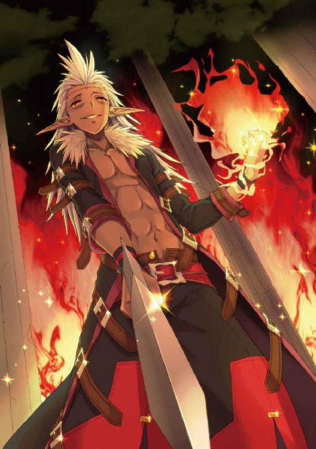
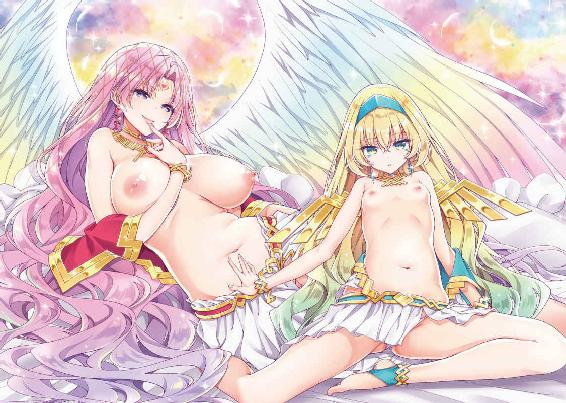
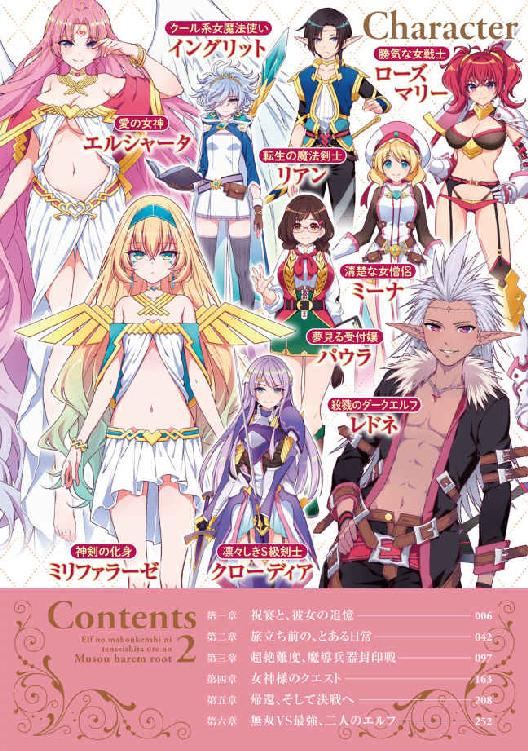
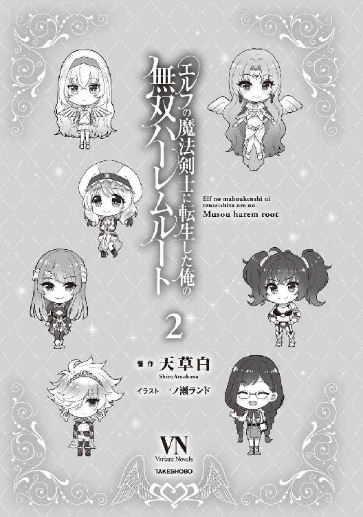
この作品は縦書きでレイアウトされています。
また、ご覧になる機種により、表示の差異が認められることがあります。
一部の漢字が簡略字で表示されていることがあります。
エルフの魔法剣士に転生した俺の無双ハーレムルート ２
Contents
第一章 祝宴と、彼女の追憶
俺の前には肌も露わな二人の美少女がいた。
一人は、金色の髪を肩のところで切りそろえ、つぶらな青い瞳をした少女。
一人は、赤い髪をツインテールにした勝気な顔立ちの少女。
彼女たち──ミーナとマリーは、そろってブラジャーとショーツだけの下着姿だ。
薄暗い部屋の中に、白い肌がぼうっと浮かび上がる様はゾクゾクするほど艶めかしい。
「リアン様、ミーナを抱いてくださいっ......はふぅ」
「リアン、あたしのことも相手してよねっ......ふぁ」
こんもりと盛り上がった豊かな胸の膨らみを揺らしつつ、ミーナとマリーが左右から俺にしなだれかかった。
首筋や頰に吹きかかる、甘ったるい吐息。かすかにアルコール臭が混じっているのは、さっきまで皆でちょっとした祝宴をしていたからだ。
もしかして、酔った勢いで迫られてる......？
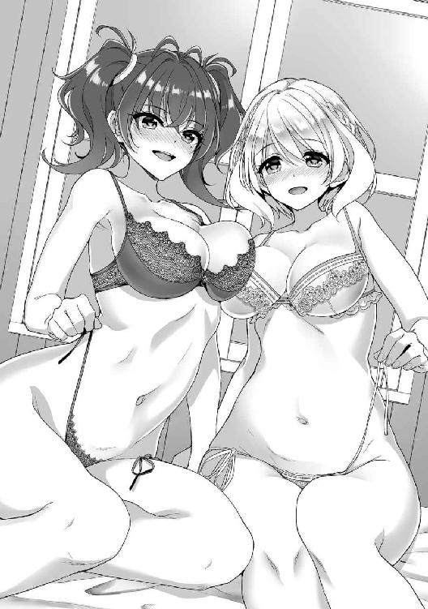
「私にとってリアン様は運命の相手。もっとそばにいさせてください」
だけどミーナの声音には、酔いの勢いとは明らかに違う真摯な響きがあった。
「あたしは、えっと......リアンとこうしていると落ち着くっていうか。だからもっと一緒にいたいなー、なんて」
一方のマリーはどこか照れくさそうに、だけど瞳にこもった真剣な光はミーナに負けていない。
「私、負けません。他のことならともかく、リアン様のことだけはっ」
「勝負となれば、譲るわけにはいかないんだからね」
視線の火花を散らしあう二人。いずれ劣らぬ美少女たちから迫られ、俺は嬉しいやら照れくさいやら。
そもそも、なんでこんな事態になっているかというと──。
──その日の夜、俺がＣ級になったお祝いということで、ミーナたちとちょっとしたパーティをやった。
といっても、宿の酒場の一室を借りての飲み会なんだけど。メンバーは俺とミーナ、マリー、イングリットに加え、クローディアやパウラさんもいた。
「あらためて。Ｃ級昇格おめでとう、少年」
クローディアが俺の杯に酒を注いでくれた。
「ありがとう、クローディア」
俺は半分ほどをグイッと飲み干した。
体が軽く浮き上がるような、ふわふわとした心地よさを感じる。初めて飲んだときは苦いとしか思わなかった酒にも、少し慣れたのかな。あるいは場の雰囲気のおかげかもしれない。
気持ちのいい、ほろ酔い気分だ。
「それと......すまなかったな。私の不覚のせいで君に迷惑をかけた」
「いや、みんな無事だったんだし、何よりだよ」
微笑む俺。
「そういえば、クローディアの剣って壊れたはずじゃ......」
と、そこでクローディアが壁に立てかけた二本の剣に気づいた。俺の武器破壊技を受け、彼女の七本の剣はすべて粉々に砕け散ったのだ。
「ああ、私の剣は七本とも自己修復能力を備えているんだ」
説明するクローディア。
「へえ、さすがは伝説級の剣だな」
便利なもんだ。
「......いちおう、私も備えてますからね。自己修復能力」
なぜか対抗するようにミリファが告げる。
そっか、こいつも伝説級の剣だった。
「といっても、あそこまで粉々にされると、さすがに修復まで時間がかかるが、ね。完全に元通りになったのは、この二本だけ。残りの五本はもうしばらくかかる」
「じゃあ、その間は冒険者稼業もお休みか？ 悪かったな」
「何を謝る必要がある。君にはいくら礼を言っても言い足りない。言葉だけじゃなくて、また違う礼も──」
妖しい笑み混じりにささやかれ、背筋がゾクッとした。
「ねえねえ、パウラさんはそろそろいい人見つかった？」
隣ではマリーたちがワイワイと盛り上がっていた。
「いいんです。私は男性には縁がありませんから。このまま彼氏いない歴＝年齢を更新していくんです......」
「諦めるのはよくないですよ。愛の女神エルシャータ様はこう仰っています──人生において愛は至上のもの。人はみな、愛のために生き、愛のために命を全うするのです」
ミーナがパウラさんを慰める。
そういえば、愛の女神に仕える僧侶だもんな、ミーナって。
「ふふ、男性経験がなくて不安なら、いっそのこと彼にリードしてもらったらどうだ？」
クローディアが会話に加わった。意味ありげに、俺のほうをニヤリと見る。
「この少年なら女の扱いなどお手の物だ」
「......よくおモテになる、と冒険者たちの噂で聞いています」
パウラさんが俺をチラチラと見る。
だから、その噂は誰が流してるんだよ!?
「でも、私なんて地味だし野暮ったいし美人じゃないし。男性から相手にしてもらえるはずがないですから......うう」
自信なさげにうつむくパウラさん。
いや、地味なのは確かだけど、よく見ると綺麗な顔立ちだと思いますよ。ちゃんと装えば、普通に美人だと思うんだけどなぁ......。
「イングリットもそろそろ男嫌いは卒業してもいいころだと思うな」
「......男なんて不潔なだけ」
マリーの言葉に、ぷいっとそっぽを向くイングリット。
「本当にそう思ってる？ 気になる人とか、いるんじゃない？」
ふふ、と意味ありげに笑ったマリーが、ちらっと俺のほうを見た。
ん、どういうことだ？
まさかイングリットが俺を意識しているとも思えないし......。
「わ、わたしには、そ、そ、そんな人はいない。ここここここの間のは事故だしドギマギなんてしてないし時々思い出したり感慨に浸ったりもしてないししししししし」
いきなりイングリットがパニくった。
「あっ......！」
わたわたと手を振った拍子に、グラスを倒してしまう。
「面目ない」
謝りながら、テーブルを拭くイングリット。服にも酒が軽くかかったらしく、小ぶりながらも形よく膨らんだ胸元の形が浮き出ていた。
ごくり。俺は思わず生唾を飲みこむ。
生地が透けて、白い肌がうっすらと見えている。
「ん？」
胸の真ん中あたりに、何かがぽうっと赤く光っているような......？
Ｓの字みたいな形をした紋様──だろうか。
「......汚らわしい目で見られている気配」
じろり、とイングリットが俺をにらんだ。
「い、いやいやいや、今のは不可抗力だから！ たまたま目に入っただけだから！」
俺は大慌てで弁解した。
──和気あいあいとした楽しい時間はあっという間に過ぎ、四、五時間ほど経ったところで飲み会はお開きになった。
ミーナとマリーは酔いが回ったのか、そそくさと引き上げていった。イングリットも自分の部屋に帰ってしまったみたいだ。
で、すっかり酔ってしまったパウラさんはクローディアが送っていくということになった。
夜道に女二人だけど、クローディアが一緒なら問題ないだろう。
「じゃあ、俺もこれで。今日は楽しかったよ」
俺も自室に引き上げようとしたところで、
「待ってくれ、少年。一ついいか？」
クローディアに引き止められた。
「彼女とは、長いのか？」
「えっ？」
「あの青い髪の少女だ」
誰のことだろうと思ったところで、クローディアが告げる。
「イングリットといったな。彼女とは──長い付き合いか？」
「いや。そもそも俺は、ミーナたちと知り合って二週間ちょっとだから」
「......なるほど。では彼女の内実を知らなくても不思議はないか」
一人納得したようなクローディア。
さっきから話が見えないな。
「彼女の胸元に魔紋が刻まれているのを見た」
「ま......もん？」
「魔法使いがその能力を高めるために──あるいは封じるために、身に刻む魔力の紋章。魔法陣の一種だな」
説明するクローディア。
「私も魔法に関しては門外漢だから詳しくはないが。あの形は、フィニア王国の紋章によく似ている。かなり高ランクの魔紋だと推測される」
「フィニア王国......？」
さっきから分からない単語だらけだ。
「このアイシャ王国の北方に位置する小国だ。いや、小国『だった』というべきか」
過去形で話しているのが気になった。
もしかして、その国は──。
「滅ぼされたんだ。三年前に」
俺の予想を肯定するように、クローディアがうなずいた。
「たった一人の──ダークエルフの手によって」
「ダークエルフだって？」
俺がもう少し詳しく聞こうとしたところで、パウラさんがへたり込んでしまった。
「むにゃむにゃ、悪かったでしゅね、男性けーけんがにゃくてー」
すっかり悪酔いしてしまっている。
「そろそろパウラ嬢を送っていかないとな。今日は楽しかった。またな、少年」
クローディアは俺にそう断り、パウラさんを連れて去っていった。
うーん......結局あの紋章がなんだったのか、よく分からないままだな。フィニア王国ってところとイングリットには何か関係があるんだろうか？
ま、分からないことを考えても仕方ない。
俺は二階にある自分の部屋に戻った。
扉を開けると、そこには肌も露わな二人の美少女の姿があった。
「え、えーっと......？」
突然のことに思考がフリーズする俺。
「リアン様、ミーナを抱いてくださいっ......はふぅ」
「リアン、あたしのことも相手してよねっ......ふぁ」
ブラジャーとショーツだけ、という半裸のミーナとマリーが切なげな吐息をもらす。薄暗い部屋にぼうっと浮かび上がる白い肌が、ゾクゾクするほど艶めかしい。
酒のせいで血流が活発になっているのか、あっという間に勃起してしまった。
「私にとってリアン様は運命の相手。もっとそばにいさせてください」
「あたしは、えっと......リアンとこうしていると落ち着くっていうか。だからもっと一緒にいたいなー、なんて」
ミーナとマリーが左右から擦り寄ってくる。
「私、負けません。他のことならともかく、リアン様のことだけはっ」
「勝負となれば、譲るわけにはいかないんだからね」
なんて火花を散らしあっている、美少女二人。
こ、これはどういう状況なんだ......!?
──なんて考えなくても分かる。二人そろって、俺にアプローチをかけてきているのだ。
ほとんど夜這いだよな、これ。
さっきクローディアから聞いたイングリット絡みの話の緊張感が、一瞬でどこかへ行ってしまう。
「さあ、リアン様。Ｃ級昇格のお祝いに、ミーナの体で存分に楽しんでくださいね？」
「あたしだってお祝いしたいのは一緒なんだからっ。いっぱい気持ちよくしてあげるね？」
ミーナとマリーがますます強く、俺に体を押しつけてきた。
半裸の二人の温かな肌や弾力豊かなおっぱいが、ぐに、ぐに、と擦りつけられる。
柔らかくて瑞々しい感触！ おまけに巨乳×２の量感がすごい！
大興奮してペニスがはち切れんばかりだった。
それにしても、二人の美少女から同時に迫られるっていうのは、気分がいいな。酒が入っているせいか、よけいにそういう多幸感が強烈に込み上げてくる。
「ありがとう、二人とも。じゃあ、お望み通りたっぷり楽しませてもらうぞ」
俺はミーナとマリーに向かって微笑む。
もちろん二人にもたっぷりと楽しんでもらわないとな。
「あ、そうだ。ちょっと場所を変えてみないか」
俺はあることを思いつき、二人を誘った。
──連れてきた先は、一階の奥にある浴室だ。
この宿屋は浴室が充実しているのが売りの一つで、全部で三つある浴室はいずれも二十畳くらいはありそうな広さだった。
で、別料金を払えば貸切にすることもできる。幸い連日のクエストでかなり稼いでいたので、俺は受付で金を払って、翌朝まで借りることにした。
ミーナやマリーを伴って貸し切った部屋に入る。
三つくらいの籠が置かれた脱衣所と、その奥に浴室に続く扉があった。
「あの、リアン様、ここで一体何を......？」
「一緒にお風呂に入るってこと？」
戸惑うミーナとマリー。
「ああ、一緒に入るんだ。ついでに、二人にはやってほしいことがあってさ──」
俺は込み上げる欲情とは裏腹の、爽やかな笑顔で説明してみせた。
「......恥ずかしいですけど、リアン様がお望みならがんばります」
「リアンって顔は綺麗だけど、考えることはエロいよね......もう」
恥じらうミーナと苦笑するマリー。
俺は二人を相手に、これからソープ風のプレイをしてもらうつもりだった。
といっても、風俗に行った経験なんてない。ネットなどの聞きかじりの知識で再現する、疑似ソーププレイってところか。
「じゃあ、まず服を脱がせてくれ」
二人に言うと、ミーナとマリーはかいがいしく俺の服を脱がせてくれた。たちまち丸裸にされる。一糸まとわぬ姿を女の子の前に晒す恥ずかしさと、爽快な解放感が入り混じった気持ちで、全身が妖しく火照った。
「さあ、次は二人の番だ。脱いで」
俺が爽やかに微笑んで促すと、ミーナもマリーも真っ赤になった。
「そ、そうですよね、私たちも......」
「やっぱり、恥ずかしいよね......えへへ」
すでに二度、彼女たちとは肌を重ねている。
それでも、やっぱり全裸を俺の前に晒すのはまだまだ恥ずかしいらしい。
まあ、そういう恥じらいを持ってくれたほうがそそるけどな。
ミーナとマリーは照れくさそうに身をくねらせながら、俺同様に全裸になった。
スレンダーながら豊かに張り出した巨乳の持ち主であるミーナ。
一七〇センチ近いしなやかな長身で、ミーナに負けず劣らずの巨乳をしているマリー。
相変わらず二人とも魅惑的な裸身だ。
じゃあ、浴室に行くか......と思ったところで、ふとあることを思いついた。
「確か即尺プレイってのがあったよな......」
要は体を洗う前に、すぐにフェラチオしてもらうプレイだ。
「あ、でもやっぱり洗ったほうがいいかな？」
浴室にいるんだし、体を綺麗にしてから、あらためてお願いしたほうが──。
「リアン様のお体に汚い場所なんてありません」
「あ、抜け駆けはずるいぞっ」
二人はそろって俺の足元に跪き、競うようにしてペニスにむしゃぶりついた。
ぴちゃ、ちゅぷ、れろぉ......。
二人分の唾液がねっとりと俺のモノをコーティングしていく。滑りがよくなったところで、交互に口内で抜き差ししてくるミーナとマリー。
「くぁ、気持ちい......ぅああ......」
ヌルヌルになった肉棒が二人の唇に擦られ、甘く痺れる。うねる二本の舌が、敏感な亀頭を何度もくすぐる。さらに裏筋にまでツーッと舌先が伝い、ペニスを浸す甘い痺れがさらに増大した。
偶然なのか、本能で探り当てたのか、二人の舌は男にとっての快感のツボを次から次へと刺激してくる。
「リアンさまぁ、ちゅ......気持ちいい、ですか......んんっ」
「リアン、ここ、ビクビクして......れろぉ、ちゅ......んむ」
対抗意識を燃やしているとはいえ、そのコンビネーションは息が合ったものだった。
急速に高まる肉悦で腰骨や尾てい骨までがゾクゾクと震えっぱなしだ。いつもよりもずっと早く、射精感が込み上げてきた。
もっと長くこの至福の時間を楽しみたい──。
そんな願望すらあざ笑うように、官能の高ぶりはまったく止まらない。
二人はなおも俺を追い詰めるように、ペニスのいたるところにキスの雨を降らせる。熱く、甘い唇が、肉棒全体にゾワゾワするような肉悦を染み渡らせていく。ぬちゃ、ぴちゃ、と卑猥な音を立てて、二本の舌が亀頭や竿をくすぐり、巻きつき、絡みつく。
その摩擦感と圧力が、さらに肉悦を増した。欲望がドロドロと煮えたぎり、今にも暴発してしまいそうだ。
「ううっ、そろそろ......イクぞ！」
ものすごい勢いで込み上げる高ぶりのままに、俺は叫んだ。
「二人仲良くぶっかけてやるからな。さあ、顔を向けて」
「はい、リアン様ぁ」
「あたしにもちょうだいっ」
従順にうなずくミーナと、嬉しそうに叫んだマリーが、同時に顔を向けた。
「くうっ、出すぞぉぉっ！」
癒し系と勝気系の美貌に、俺は大量の精をほとばしらせ、ぶちまけた。
「きゃぁんっ!? リアン様の、せーし......あつ、ぅい......あふ」
「あふ、ぁぁ、まだ、かかる......ふぁぁ、もっと浴びせて、ぇ」
ミーナとマリーがそろって歓喜の声を上げた。
次から次へと放出される白濁のシャワーを、美しい顔全体で受け止めてくれる。
これほど美しい少女二人に、それも顔射を歓迎されながら、思う存分精液をぶっかけるのは爽快そのものだ。牡としての本能を、甘美な征服感を、強烈な嗜虐感を──この上なく刺激されるシチュエーションだった。
顔射を終えても、もちろん俺の肉棒はまったく萎えることがなかった。
俺はミーナとマリーを伴い、浴室に入る。
まず二人には、精液でドロドロになった顔を洗ってもらった。それから浴槽の前に置かれた椅子に腰を下ろし、全裸の二人を見上げる。
「次は体を洗ってもらおうかな」
あくまでも爽やかスマイルを忘れず、提言する俺。
とはいえ、その声は興奮に上ずり、爽やかさとは程遠かった。いよいよ本格的にソーププレイに入るんだという妖しい期待感で、股間のモノはギンギンだ。ヘソにくっつかんばかりに反り返っていた。
「分かりました。私がお背中お流ししますね」
背後に回ろうとするミーナ。
「じゃあ、あたしが前を──」
すかさずといった感じで、マリーが俺の前に回る。
「あ、抜け駆けは駄目ですよ、マリーさん」
「えへへ」
注意され、ばつが悪そうに頭をかくマリー。
なんだか微笑ましいな、と思いつつ、俺は二人に言った。
「いや、違うんだ。二人の体で洗ってくれ」
「えっ、体......？」
「もしかして、それって──」
俺の言わんとしたことに気づいたのか、ミーナとマリーが同時に顔を赤らめた。
「で、では、始めますね、リアン様......」
石鹸を泡立てて自分の体に塗ったミーナが、おずおずと進み出る。
「んっ、お先に──」
と、反対側からマリーがいち早く体をすり寄せてきた。こっちも裸身を泡まみれにしている。
「あ、ずるいです」
慌てたように、ミーナも俺に抱きつく。
左右から二人が抱きつき、しなだれかかってきた状態である。
ああ、最高だ。甘い占有感が心地よくて、俺はにやついてしまう。
「さっきはミーナが抜け駆けしたから、お返し」
二人はきゃいきゃい騒ぎながら、泡でヌルヌルした裸身を左右から擦りつけてきた。
俺が伸ばした両腕をそれぞれ跨ぐと、秘所を押しつけるようにしてスライドさせる。陰毛のシャリシャリした感触やラヴィアの熱感、泡で滑る感じが気持ちいい。
「あ、擦れて......気持ち、い......はふぅ」
「やぁ、なんだか、変な気分に、ぃ......」
俺の腕を秘所で洗いながら、その摩擦の快感で二人の体も高ぶり始めているみたいだ。
水蒸気で濡れた裸身が、少しずつ赤みを増していく様は、えも言われぬ色っぽさだった。
「次は足だ」
興奮で声を上ずらせながら、俺は二人に言った。
ミーナとマリーが俺の太ももの上に腰を下ろし、左右から抱きついてくる。
「んん、ちゅ......リアンさま、ぁ」
「あ、むぅ......リアン、ん」
二人から代わる代わる熱いキスを受け、柔らかな乳房を押しつけられ、股間のモノはさらに勃起を増した。流れこむ血潮でペニスが限界まで膨張し、内側からはち切れんばかりだ。
ミーナとマリーは俺に断続的な口づけを浴びせながら、腰を卑猥に上下させる。陰毛とラヴィアで左右の太ももを擦られる感触がたまらない。ぐちゅ、ぐちゅ、と湿った音が彼女たちの股間から鳴り響く。
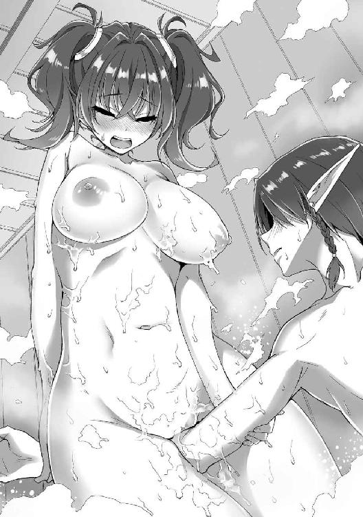
摩擦やソーププレイという独特のシチュエーションが、二人の欲情を高めているんだろうか。さっき以上に愛液が垂れ流され、浴室に甘酸っぱい匂いが広がっていく。
俺のほうも、もちろん興奮しっ放しだ。
ああ、もう我慢できない──。
「体洗いはこれくらいでいいや。二人ともそこに手をつくんだ。床がすべるかもしれないから、気を付けて」
全員の泡を湯で洗い流すと、俺はフル勃起した肉棒を揺らしながら、勢いよく椅子から立ち上がった。
いよいよ二人の中を直接味わえるんだと思うと、甘い期待感で全身が痺れるようだ。
「はい、リアン様、どうぞ」
嬉々として浴槽の端をつかんで、可愛らしい尻を突き出すミーナ。
「あたし、もう待ちくたびれちゃった」
マリーも淫蕩な笑みを浮かべ、ミーナの隣で同じように尻を差し出す。
さあ、二人とも存分に貫いてやる──。
俺はどう猛な獣欲を全開にして、腰を近づけていった。
まずミーナの尻を抱えこむと、ずぶりと一息に貫いた。
「んっ......！」
ミーナは艶っぽい喘ぎをもらし、滑らかな背中をアーチ状にのけぞらせた。
初めてのときは挿入すら苦労した膣孔も、抵抗感が随分と薄くなっている。といっても、ペニスが痛くなるくらいのキツさはそのままだ。おまけにヌルヌルした粘膜が蠢き、甘い圧力をかけて絞ってくる。
「くうぅ、ミーナの中、気持ちいい......っ」
うめきながら、俺は腰を叩きつけた。ぐちゅっ、ぐちゅっ、と水気の強い秘孔を怒張したモノでかき回し、膣底を思いっきり叩く。
「はぁ、あんっ、奥まで、届いてます......ぅっ！」
ミーナが歓喜の声を上げた。湯気で濡れた肢体が快楽にわななき、震えている。
俺はなおも体重をかけて、狭い秘孔をえぐっていった。
「あひ、はぁ、ああんっ、ふぁ......イイ、ですぅ、リアンさまぁ......っ」
肩までの金髪を揺らして喘ぐ可憐な少女を、俺はピストンを続けながら悠然と見下ろした。
さらに数度突いたところで、隣のマリーにずぶりと差しこむ。こちらも最初からトップギアの強烈なピストンを浴びせてやった。
「ふああ、あうっ、リアン、すご......んんっ、お腹の底にまで、響いてる、よ......っ！」
赤いツインテールを振り乱して、マリーが叫ぶ。こちらも処女のころに比べると、だいぶ膣がこなれた感じだ。
最初のころは狭さとキツさがすごくて、動かすのも一苦労だった。膣粘膜がペニスに貼りつき、抜き差しがしづらいくらいだったのだ。
だけど、今は格段にスムーズな抽送ができる。
俺は腰をしならせて、マリーの内部に強いストロークを浴びせた。ヌルヌルの粘膜が肉棒と擦れあって、甘痒い愉悦が込み上げる。グイグイと締まる膣のキツさはほとんど変わらないけど、抽送自体は随分と楽になっていた。
二人の女体をこの俺が開発したんだ、っていう実感が心地いい。
さっきのミーナに負けず劣らずの勢いで、俺は渾身のピストンを叩きつけていく。さらに数度突くと、またミーナの中に差しこみ、ガンガン突いて思うさま狭くてキツい膣を楽しんだ。
「あふぅ、うぁ、んっ、イクッ......イキ、ます......ぅっ」
ぐちゅぐちゅになった肉壺をかき回し、最後にズンッと深突きすると、早くもミーナはイッてしまったみたいだ。
控えめな絶頂の声をもらした彼女から引き抜いた肉棒を、間髪入れずマリーに差しこんだ。こっちも何度か突きまくると、早くも昂ぶった女体が絶頂を迎える。
「ああ、あうんっ、イイ！ あたしもイクゥゥッ！」
ミーナに比べると派手で高らかな艶声を上げて、マリーもオルガスムスに達する。
俺はその後も、まさに気の向くままにミーナに差しこんだり、マリーに挿入したりと二人の秘孔を思う存分味わった。ともに狭さもキツさも極上。ヌルヌルとした粘膜の摩擦感や締めつけに射精感がグングンと高まっていく。
「よし、出すぞっ！」
何度目かの挿入とピストンで、俺は一発目の膣内射精をマリーの秘奥にほとばしらせた。
「ああんっ、中でドクドク出てるぅっ！ もっと出してぇぇぇっ、ふぁ、ああ、イクゥッ！ あたし、中出しされてイッちゃうぅぅぅぅぅぅっ！」
胎内に大量の精液を浴びながら、マリーは絶頂まで駆け上がったみたいだ。
最後まで出しきったところで、ずるり、とペニスを引き抜く。二人分の愛液とさっき出したばかりの精液にまみれた肉根は付け根までドロドロに濡れていた。
プンと立ち上る饐えた性臭は普段よりずっと強い。それが二人の美少女を同時に征服した証みたいな気がして、俺をますます興奮させた。
「リアン様、私にもぉ......」
先に中出しを受けたマリーを、ミーナが羨ましそうに見つめ、それから俺の挿入をねだるように可愛らしいヒップを揺らす。
「よし、ミーナにもたっぷり出してやるからな」
俺は形のよい尻丘を鷲掴みにしてグッと左右に開くと、ミーナの最奥までを深々と貫いた。
そのまま強烈なストロークを叩きつける。狭く、熱く、蠢く秘肉を存分に愉しませてもらう。徐々に加速し、膣内のいたるところを擦り上げながら、ミーナの性感を刺激していった。
「あうぅ、うあ、んっ、んんんっ、イク！ またイッちゃいますぅぅぅぅぅぅっ！」
やがてふたたびイッた彼女を見下ろしつつ、俺自身も達する。
「くおおおっ、中に出すぞっ！ しっかり受け止めるんだ！」
雄たけびを上げながら、さっきに負けず劣らずの大量ザーメンを狭苦しい膣に注ぎこんだ。
「あふ、ぁぁっ!? あづ、ぅ......リアン様、これ......イイ！ いっぱい、出してくださ......はぁぁ、あんっ、イクッ！ イクイクイクーッ！」
オルガスムスに震える美少女を見下ろしながら、俺は悠然と射精を続けたのだった。
その後、さらにミーナとマリーに一回ずつ中出しした。
「ふうっ、気持ちよかったぁ......」
満足の息を吐き出しつつも、もちろん俺はまだまだ精力が余っていた。
一方の二人は浴槽の端に腰掛け、絶頂の余韻に浸っている。多少の疲労はあるみたいだけど、息も絶え絶えってほどじゃない。
まだ、もう少し一緒に楽しめそうだな。
俺は壁に立てかけてあったマットを持ってきて、浴室の床に敷いた。ちょっとしたマットプレイである。マットの上で仰向けになると、二人を呼ぶ。
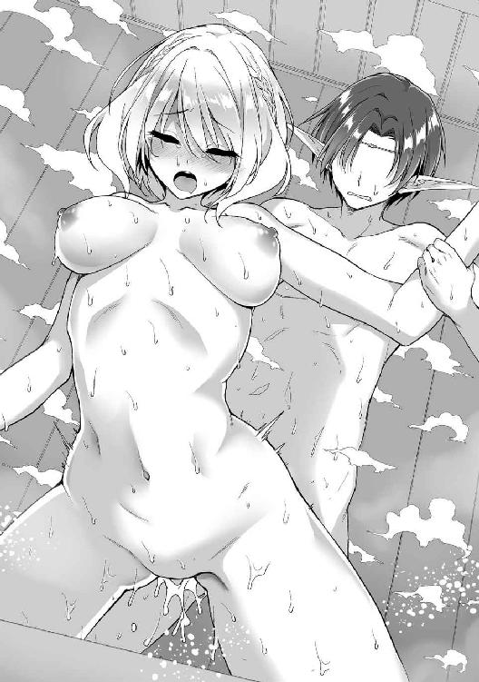
「次はミーナとマリーが上になるんだ」
「ふうっ......では、今度はマリーさんがお先にどうぞ」
エクスタシーの残滓を吐き出すような息をもらし、ミーナがマリーに呼びかけた。
「ありがと、じゃあ順番だね」
マリーが礼を言って、俺の腰の上に跨る。
ほぼ垂直に屹立した男根を両手でつかむと、俺を見下ろしてうっすらと微笑んだ。
ぐちゅっ、と音を立てて亀頭と秘孔の粘膜が触れあう。それだけで甘い愉悦がペニスの芯にまで響き、俺は軽くうめいた。
「ふふ、あたしの中、そんなに気持ちいいんだ？」
マリーはそんな俺の表情の変化を微笑み混じりに見つめている。
淫蕩な雰囲気が増し、背筋がぞくりとなった。
以前は、こんな表情はしていなかったはずだ。俺との数度のエッチで、彼女の中の女の部分がどんどん目覚めてるんだろうか。
「入れるね......？」
ささやくように告げたマリーが、ゆっくりと腰を下ろしていった。
ずちゅ、ずぶぅぅぅぅっ......！
折り重なった粘膜をかき分ける感触。続いて、肉棒が熱い襞をかき分けながら、少しずつマリーの胎内に飲みこまれていく。
「う、あああぁぁっ......ぐぅ！」
「んっ、あふ、ぅああぁんっ！」
俺たちは同時に歓喜の声を上げた。
すとん、とマリーが軽く俺の腰の上に着地する。ヌルヌルした粘膜が男根の根元までを包み、絡みついてくる。不規則に絞られては、奥に向かって吸引される。
挿入だけでイッてしまいそうなほど気持ちがいい。
「ああ、やっぱりリアンの......奥まで届いて、イイ......動くね、んんっ」
はあっ、と悩ましげな息を吐き出したマリーが、俺の腰の上で前後運動を始めた。
ロデオさながらの激しい動き。それに伴って、膣内がますますうねり、ペニスを搾り取る。
さらに、
「私は、こ、こちらを......」
ミーナが俺の顔を跨ぎ、そのまま腰から着地した。
「ん、むぅ......ちゅ」
俺の唇にミーナの下の口がキスをした格好。いわゆる顔面騎乗である。
興奮が高ぶっているのか、ミーナも常ならず積極的だ。肉棒でマリーの膣を、口でミーナの膣を、それぞれ味わっていると、甘い電流みたいな快感が俺の全身を貫き通した。
だ、駄目だ、これっ......気持ちよすぎるっ！
二人がかりの責めはあまりにも強烈だった。あっという間に射精感が上昇し、狭い秘孔の中でペニスがビクビクと痙攣する。
それでも一方的にイカされまい、と俺は反撃に転じた。
ブリッジの要領でマリーの深奥を思いっきり突く。口を塞ぐミーナの秘孔に舌を差しこみ、かき回す。二人もまた十分に高まっていたらしく、その責めで一気に絶頂まで駆け上がった。
「ふぁぁっ、リアン、そんなに突いたら、あたしっ！ イク、イクイクイクーッ！」
「わたしもぉ！ またイッちゃいますぅっ！ あぁぁ、ふぁっ、あうんっ！」
二人がオルガスムスに達するのを確認した瞬間、俺の欲望も限界を超え、弾けた。
「ふ、ぐぅ......ぉぉ......おぉっ！」
ミーナの秘所に口を塞がれたまま、くぐもった声で快楽の叫びをもらしつつ、マリーの最深部に思うさま大量のザーメンを吐き出した。尾てい骨から脳天まで貫かれるような快感で、すうっと意識が薄れていく。
俺たち三人は同時に頂点に達し、めくるめく絶頂を味わっていた──。
※
ｓｉｄｅ イングリット・ラ・フィニア
イングリットの視界を埋めるのは、一面の炎だった。
壮麗なフィニアの王都は火の手に包まれ、燃え上がっていた。
苦鳴と悲鳴。
怒号と絶叫。
人々の阿鼻叫喚が響き渡る。
そして、それを襲う無数の巨大な影。炎や雷を吐き、暴れ回る魔物たち──そのすべてが、おそらくはＳ級以上の力を持っているだろう。
市民を守るために魔物に立ち向かう王国の騎士や魔法使いは、もういない。
壊滅したのだ。たった一人の相手によって。
今は、逃げるしかなかった。
イングリットは絶望の中で、一心に走った。
と、
「お前は──」
行く手を塞ぐように、黒い影が眼前に立ちはだかる。
炎が逆光のようになって、顔はよく見えない。
特徴的なのは尖った耳だった。
エルフ。
それも漆黒の肌を持つ、闇の妖精──ダークエルフだ。
イングリットの全身が総毛だった。
王国の騎士や魔法使いをたった一人で撃破した相手に対して。
と──、
「お逃げ下さい！」
「奴は我らが食い止めます！」
騎士や魔法使いたちが駆けつけてきた。
「へえ、まだ生き残りがいたのか」
ダークエルフがわずかに目を細める。
「でも無駄だよ。君たちが万人いようと、億人いようと──僕には届かない。分からないかい？ 次元そのものが違うということを」
「貴様に勝てないからどうだというのだ！」
「勝敗など関係ない！」
「我ら一命を賭して、このお方を守る！」
騎士たちは剣を、魔法使いたちは杖を、それぞれ構えて叫ぶ。
逃げる者は一人もいない。
ひるむ者も一人もいない。
己の使命に命を懸ける、誇りあるフィニア王立騎士団と魔法戦団の姿がそこにあった。だが、今はそんな彼らの想いが悲しい。
「逃げて......」
イングリットは涙声でつぶやく。
「みんな......殺される......」
「見上げた心意気だね」
ダークエルフは戦場にそぐわない爽やかな笑みを浮かべた。
「そして、無駄な心意気だ」
その笑みが、邪なものへと変わる。
破壊と暴力を悦ぶ、昏い笑みへと──。
「我が剣ギルフェラーゼ──僕に逆らう愚か者どもを蹴散らし、消し去れ」
ダークエルフが腰に下げた小剣を抜いた。柄の部分に浮かぶ表示が『Ｓｔａｎｄｉｎｇｂｙ』から『Ａｔｔａｃｋｍｏｄｅ』へと変わる。
「斬撃解放──魔王斬」
黒い刀身に紫の輝きが収束し、弾けた。強烈な爆光と爆風が吹き荒れる。
それが晴れたときには、騎士も魔法使いも姿を消していた。
悲鳴を上げる暇もなく、肉も、骨も、残さず消滅したのだ。
戦いにすら──なっていなかった。
「終わりだね」
ふたたび一人ぼっちに戻ったイングリットに、ダークエルフが静かに告げた。
「しかし惜しいな。君が生まれ持った強大な力──封じられてさえいなければ、この僕自身はともかく、僕の配下の魔物程度は一蹴できただろうに」
イングリットは反射的に胸元を押さえた。
小ぶりな乳房の間に刻まれた魔法の印を、服の上から隠すように。
とある事情で生まれた忌み子として、イングリットは生まれ落ちた日に、その身に秘めた強大な力を封じられた。だが、今はそんな王国の掟が疎ましい。力さえあれば、あるいはこのダークエルフを倒して、国を救えるかもしれないのに。
力さえ、あれば。
力さえ、あれば──！
だから、それを封じているものを解き放つための──知識が欲しい。
きっと世界のどこかにあるはずだ。己が身に刻まれた魔紋──『封印の呪陣』を解呪する方法が。
たとえば、世界中を巡る冒険者にでもなれば、その知識を得ることができるかもしれない。
──などと、仮定の話をしても仕方がない。
現状で、イングリットは目の前のダークエルフに対して無力だった。
「古き王国フィニアは、今日滅亡する。この僕の手によって」
振り下ろされた剣から魔力の斬撃が飛び、周囲をえぐる。
紫色をした破壊の輝きが、イングリットに迫る──。
そこで、目が覚めた。
「また......いつもの夢」
力なく上体を起こしながら、イングリットがつぶやく。
もう三年も経つというのに、未だに数日に一度はこの夢を見る。
全身からにじんだ汗で、ネグリジェがべっとりと肌に貼りついていた。凹凸の少ない未成熟な体のラインが浮き彫りになっている。
ずきん──小ぶりな乳房の間に刻まれた魔紋が、疼く。
最近、この疼きがひどくなった。
「......もしかしたら、奴に反応している？」
つぶやき、形のよい眉を険しく寄せる。
根拠はないが、そんな予感があった。あるいは、彼女の近くにあの忌まわしいダークエルフがいるのか。
魔紋はそれに共鳴しているのか。
脳裏に、あの漆黒のエルフの嘲笑が浮かぶ。
「っ......!?」
不意に、その顔がリアンの顔に重なった。以前のクエストで──体を操られての不可抗力とはいえ、彼と交わしてしまった口づけを思い出す。
イングリットにとって、生まれて初めてのキス。
認めたくはないが、それはとても甘美な感触だった。
だが、その記憶にはすぐにヒビが入り、砕け散る。
どうしても連想してしまう。あの日、すべてを失ったことを。
故郷も、家族も、親しい人たちすべても──。
それを為した忌まわしいダークエルフを。
「っ......！」
血が出るほど強く、唇を嚙みしめた。
分かってはいるのだ。リアンに対して、自分が理不尽な態度を取っていることは。
確かに男性は苦手だが、嫌いなわけではない。
彼を嫌う理由などない。むしろ自分や仲間を救ってくれたことに感謝しなければならない。
昨日の祝宴でも、素直に『おめでとう』と言えばよかったのだろう。あるいは『あのときは、助けてくれてありがとう』と今からでも言えばよかったのだろう。
だが、できなかった。
理不尽でもなんでも、彼を遠ざけておかなければ、自分の感情が爆発してしまいそうだ。憎むべき仇を思い出し、狂ってしまいそうだ。
だから──。
「......ごめんなさい、リアン」
この場にはいない少年に、イングリットは小さく謝罪の言葉をつぶやいた。
第二章 旅立ち前の、とある日常
昨晩は飲み会もあったし、その後でミーナとマリーを相手にたっぷり楽しんだおかげで、昼までぐっすり眠ってしまった。
結局、その日はクエストをサボってしまった。夕方にマリーと剣術の訓練をして、新しい技を一つ教わったくらいだ。このところ、ずっと日課のようにクエストをこなしていたし、ゆっくり過ごす日があってもいいだろう。
で、翌日の朝。一日たっぷり休んだおかげか、飲み会や二人とのエッチのおかげか、俺は心身ともに充実した状態だった。
今日はちゃんとクエストをやろう。
俺は宿を出て、ギルド支部に向かう。
大通りに出たところで、数人の町娘が前方から歩いてきた。
いずれも十代後半くらいだろうか。ミーナたちのような類まれな美少女ではないけど、十分に可愛らしくて愛嬌のある女の子たち。
スタイルもなかなか......ごくり。
「ねえ、見て見て。あれってリアン様じゃない？」
きゃいきゃいと楽しげに話していた彼女たちの一人が、俺に視線を向けた。
「すごい綺麗な男の子......」
たちまちその顔がポーッと赤らむ。
「エルフでも、あそこまでの美形はちょっといないよね」
隣の女の子も同じくうっとり頰を染め、ため息をついた。
「しかもリアンくんって冒険者ランキング急上昇の黄金ルーキーでしょ。いいなぁ」
「恋人とかいるのかな？ いないなら立候補したいなぁ」
「あ、抜け駆けは駄目よ。あたしだって前からリアンくんっていいな、って」
「それなら私だって」
俺に聞こえない程度のひそひそ声で話しているつもりなんだろうけど、あいにくエルフの聴覚は人間よりはるかに優れている。まるで集音マイクみたいに、彼女たちの小声ははっきりと俺の耳まで届いていた。
それにしても──最近、町に出ると女の子から騒がれることが増えたよなぁ。
この町に滞在して二週間ほどが経つ。俺のルックスと、冒険者として驚異的なスピードでランクアップしている事実が相まって、加速度的に知名度が高まっているみたいだ。
「ねえ、今日こそは声かけてみない？」
「うう、緊張する......」
「でも、こっち見てるみたいだし、脈はあるかも」
「皆で行こうよ、ね？ ね？」
ひそひそ相談しているみたいだけど、それも俺には筒抜けだ。やがて意を決したように、彼女たちは俺の元に歩み寄ってきた。
「あ、あの、今お時間よろしいでしょうか？」
先頭の少女がおずおずと話しかけてきた。蕩けたような表情で俺を見ている。
その彼女を押しのけるように、別の町娘が、
「ねえねえ、あたしたちと一緒にお昼ご飯、どうかな？ よかったら、その後も......ふふ」
「ち、ちょっと誘い方がストレートすぎっ」
「私たちリアンさんの活躍を聞いて、冒険のお話を聞いてみたいなーって」
「今日もお仕事あるんですか？ 依頼が終わった後にでも、ぜひ！」
詰め寄る女の子たち。年ごろの乙女って感じの甘い香りが俺を包みこむ。
いい匂いにうっとりして目を細めていると、
「リアンくん、お昼なら肉料理なんてどう？」
さらに別の娘が、俺に擦り寄ってくる。
「あら野菜がいいわよねえ？」
さらに別の娘は俺の腕にすがりつくようにして、体をぴったり寄せた。むぎゅぅっ、と豊かな胸の弾力が俺の二の腕に押しつけられている。
さらにまた別の娘が、
「あなたのために何年も前から、料理修業してましたっ」
......いや、俺がこの世界に転生したのは数週間前なんだけど。
心の中でツッコむ俺を尻目に、町娘たちはきゃいきゃいと騒いでいる。なんかタレントかアイドルみたいな扱いだな。
「私の家、中央区の７番街で『木漏れ日の食卓』って食堂をやっているんです。そこでどうでしょうかっ」
「あ、いいね。けってーい！」
きゃいきゃいと盛り上がる彼女たち。
「じ、じゃあ、次の依頼が終わったら寄らせてもらうよ」
彼女たちの勢いに押されて、うなずく俺。
これって逆ナンってやつなのかな？
「約束ですからねっ」
声をそろえて叫ぶと、彼女たちは嵐のような勢いで去っていった。
いやー、すごい勢いだったな......。
俺は完全に圧倒された心地で、去っていく少女たちの後ろ姿を見つめていた。ミーナたちと過ごして、女の子慣れしてたつもりだけど、あれはまた別物だ。
「......本当におモテになりますね、リアン様」
腰に下げた小剣から電子的なエコーのかかった声が響く。ミリファはなぜか露骨なまでに不機嫌だった。
ふと柄のところにあるディスプレイを見たら『Ａｔｔａｃｋｍｏｄｅ』って表示されてある。
なんで攻撃準備してるんだよ!? 敵意剝き出しじゃねーか!?
「リアンさん、こんにちは」
ギルド支部の建物に入ったところで、温和そうな中年男に声をかけられた。俺とも何度か面識があるギルドの職員さんだ。
「今日もクエストですか。精が出ますねぇ」
「こんにちは。早いところランクを上げたいですから」
俺はにっこりと笑った。
「いやぁ、あなたのような方がいて頼もしいですよ。こちらでクエストをたくさんこなしてくれれば、我が支部の実績も上がりますからね。ぜひ長く滞在してください」
職員さんは嬉しそうだ。
「支部の実績？」
「我々が冒険者の方々に紹介したクエストが達成されれば、この支部の実績としてカウントされるんです。達成件数や成功率、より難度の高いクエストをどれだけこなしたか......支部同士の競争はけっこう激しいんですよ。実績はそのまま職員の給料やボーナスに反映されますし、互いの支部の面子なんかもありますしね」
なんかサラリーマンみたいな世界だな。
「それにノルマもあるんです。最近、支部長にせっつかれてるんですよ。難度の低いクエストばかり紹介している、高難度クエストの達成件数が少ない、ってね。かといって、無理に難度の高いクエストを紹介して、冒険者に危険があってはいけませんし。なのに支部長ときたら二言目には『ノルマ、ノルマ』って......あ、私が愚痴っていたなんて内緒ですよ」
ギルドはギルドで色々と苦労があるんだな。
「この分だと給与がまた下がるかもしれません。女房と三人の娘を食わせていかなきゃいけないのに......はあ」
「大変なんですね......」
困り顔の職員さんに、俺は同情した。
「あ、すみません。つい愚痴ばかり。なんだかリアンさんって話しやすくて」
「いえ、俺でよければ。それに難度の高いクエストならやってみたいですし、俺に話を回してくれてもいいですよ」
にっこりと微笑みつつ、アピールしておいた。
「難度の高いクエストといえば、近々、超絶難度のクエストが実行されるそうですよ。とはいえ、Ｓ級冒険者限定クエストなので、リアンさんに紹介することはできませんが......」
「超絶難度......」
クエストはその内容に応じてランク分けされている。
一番下から低難度、中難度、高難度、そして最難度。
ちなみに俺がこの世界に来て初めて達成したＡ級竜種討伐のクエストは高難度、先日のＳ級魔族退治は最難度にあたる。
だけど、ランクにはさらにもう一つ上がある。年に数件あるかないかという最高最難のクエストランク──超絶難度。
「そこまではいかなくても、高難度や最難度のクエストなら、実績のあるリアンさんには紹介できます。そのときはぜひお願いしますね」
「はい、ぜひ」
俺は職員さんとにこやかに別れ、支部の受付に向かった。
さあ、今日はどんなクエストが俺を待っているのか──。
「おいおい、こいつはどういうことだ！ ええ？」
「俺たち冒険者から搾取することしか考えてねーのか、ギルドってやつはよぉ！」
受付に行ったとたん、いくつもの怒声が聞こえてきた。ごろつきみたいな野卑な風体の男たちがカウンター越しに詰め寄っている。
「そ、そんなことを言われましても......」
おびえたような顔をしているのは、黒髪眼鏡の地味な受付嬢──パウラさんだ。
「なんでクエストの報酬があれっぽっちなんだよ、納得いかねえな！」
「あれが最初から提示した条件ですし、あなたがたも了承して受領したはずです」
震えながらも、パウラさんはきっちり説明する。
「我がギルドでは依頼する際、必ず報酬等の諸条件は説明し、それを納得していただいた上で受領してもらっています。報酬についても、仲介料以外はすべて達成した冒険者パーティにお渡ししていますし、搾取したことなんて一度も──」
「御託はいいんだよ、御託は！」
だけど、相手はそんな説明を聞く耳は持っていないみたいだった。
「俺たちゃ命がけで、依頼された魔物を倒して村を守ってきたんだぜ？」
「少しくらい上乗せしてくれてもいいよなぁ？」
「なんなら、お前が体で払うか？」
「よせよせ、こんな野暮ったい女。こっちから願い下げだ」
こいつら──最後の一言が、特にムカついた。
「パウラさん、大丈夫？」
俺は受付まで駆け寄る。
「リアンさん！」
彼女の顔がパッと輝いた。
「リアン......？」
「こいつがたった二週間でＣ級まで上がったっていう噂の──」
冒険者たちがいっせいに俺を見る。
俺はじろりと彼らをにらみ、
「よってたかってパウラさんを脅すなよ」
「脅してねーよ！ 俺たちは交渉してるだけだ！」
「どこが交渉だ」
「関係ない奴は引っこんでろ！」
血の気の多そうな大男が、丸太のような腕を振り上げた。ぶんっと風を切って、男の拳が振り下ろされる。
「ブッ飛ばされたくなかったらな！」
いや、もうブッ飛ばそうとしてるじゃん。
「──って、あれ!?」
一瞬の後、男は拳を振り下ろしたポーズのまま呆然とうめく。
「こっちだ」
俺は男の背後でため息交じりに言った。
身体強化を発動して、超速で回りこんだのだ。バトル漫画なんかでよくある、相手の背後を取るってやつ。力の差を見せつければ、この手の輩は態度を変えるかもしれない、と踏んだのだった。
「な、なんだ、今の動き──」
「速すぎて、よく見えなかった......」
案の定、さっきまでの態度から一転、おびえたように後ずさる男たち。
「おいおい、支部内で騒ぎを起こすなと言ってあるだろう。僕たちは常に誇りと気品を忘れないパーティのはずだよ？」
涼しげな声が響いた。
「マリクさん！」
「ちっす、マリクさん！」
野卑な男たちがいっせいに直立不動して、かしこまった。完全に体育会系のノリだ。
現れたのは、金髪碧眼の美男子だった。着ている服も王侯貴族みたいにきらびやかなものだ。腰に吊り下げているのは豪奢な金細工で飾られた、芸術品を思わせる剣。
「この間のクエストの報酬で納得いかないから談判に行くと聞いてね。君たちのことだから荒っぽい手段に出てやしないかと心配になったわけだ」
微笑むマリク。
「来てみたら案の定というわけか。パウラ嬢、乱暴な真似をして本当に申し訳ない。このとおり、僕からも謝罪させてもらう」
と、パウラさんに向かって深々と頭を下げる。
「いえ、そんな......いいんです」
「寛大なお言葉、感謝する」
パウラさんの言葉に、マリクはゆっくりと頭を上げた。それから俺に視線を向けると、ぴくり、と片眉を上げる。
「おや、君はもしかして噂のリアン・ティアレードくんかい？」
「知ってるのか、俺のこと？」
「たった二週間でＣ級に上がった黄金ルーキーだと評判だよ。いや、お目にかかれて光栄だ」
嬉しそうに微笑むマリク。
そう言われると悪い気はしない。
「ただ──悪いけど、僕たちは彼女と話をつけている最中なんだ。乱暴な態度は論外だが、交渉自体はまだ続いている」
マリクは真顔に戻って告げた。
「君は部外者だろう？ 邪魔はしないでもらえるかな」
「話をつけている？」
俺はじろりとマリクをにらんだ。
「脅してるようにしか見えなかったぞ」
「彼らも反省はしたはず。これからは紳士的な態度で交渉を続けると約束しよう」
「......紳士的な態度って言われてもな」
俺はあらためて他の冒険者たちを見やる。マリクはともかく、他の奴らは引き続きパウラさんに暴言を吐きそうな気がするぞ。悪いけど、信用できない。
「おいおい、お前、誰に口きいてるのか分かってんのか、ああん？」
「いや、知らないけど......」
「俺たちのリーダー、マリク・シャーザさんだ！ Ａ級十七位で、末はＳ級間違いなしといわれる超エリート！」
「おまけにこのルックスで女の子人気も抜群！」
「冒険者として活動するかたわらで、劇場の人気俳優もしている、マルチな才能だぞ！」
「マリクさんの写し絵は、王都グロリアで飛ぶように売れてるんだ！」
次々とマリクを褒めたたえる男たち。現代日本で言うならアイドルタレントみたいな感じか。男たちはマリクに心酔してる感じだし、きっとカリスマ性もあるんだろう。
「Ｃ級ごときが逆らったら、一瞬でこの世から消されちまうぞ、ああん？」
「はは、僕はそんな野蛮なことはしないよ」
マリクはどこまでも爽やかに、いきりたつ男たちを片手で制した。
「ただ、君はどうしても僕らが信用できないらしい。そんな目をしている」
マリクの視線が俺をとらえた。その眼光に鋭さが増し、
「じゃあ、そうだね、せっかく期待のルーキーと会えたんだ。一つ手合わせを願えないかな？」
「手合わせ？」
「冒険者らしく腕で決着をつけるのも一興だろう？ 僕らが勝てば君はおとなしく去る。君が勝てば僕らはこの件から手を引こう」
なんだなんだ、こいつもクローディアみたいな勝負大好き人間か？ まあ、俺が勝てば引っこんでくれる、って言うなら手っ取り早くていいか。
※
ｓｉｄｅ パウラ・アルレーデ
冒険者らしく、腕で決着をつける──。
そう言って、マリクたちはリアンを連れていった。
パウラに絡んでいたごろつき同然の冒険者と違い、マリクの態度はごく紳士的なものだった。
実際、彼の評判は良い。
アイシャ王国でも随一の貴族、シャーザ公爵家の次男という家柄に加え、抜群のルックス。おまけに王都でも公演を行う大劇団のトップスターでもあり、特に女性人気は抜群だ。
かといって、それを鼻にかけるそぶりもない。
冒険者としては、強きをくじき、弱きを助ける──まさに正義の味方。
リアンを連れていったのも、純粋に手合わせをしてみたくなっただけなのだろう。
人気と実力を兼ね備えたＡ級冒険者対黄金ルーキーと称される美貌のエルフ。まさに夢の好カードだ。
（ああ、やっぱり気になるっ......！）
今までにいくつものクエストを彼に紹介してきたが、実際に戦う姿を目にしたことはない。
今日はまさに、そのチャンスといえた。
見てみたい。リアンが、華麗に戦うさまを──。
（駄目。仕事が手につきそうにないわ）
仕事を中座することに罪悪感を覚えつつも、パウラは席を立った。
同僚に断りを入れて、受付から離れる。
急いで支部を出ると、こっそり彼らの後をつけた。ほどなくして、彼らは町はずれの空き地で対峙した。
（まだ手合わせは始まっていないみたいね）
パウラは物陰に隠れ、そっとエルフの美少年の様子を伺う。
胸が──ズキンと疼いた。
初めて会ったときから、人ならざる美しさを持つこの少年のことが気になっていた。
といっても、美貌だけに惹かれたわけではない。生真面目な性格の彼女にとって、明るく屈託のないリアンの性格は好ましく映る。
憧れとも、ほのかな恋ともつかない甘酸っぱいときめきを覚えていた。
もともと内向的な性格で、恋愛小説を好んで読む彼女は、恋に恋する傾向が強い。子どものころから勉強一筋だったため、男性にはまったく縁がなく、二十六歳になった今も交際の経験はない。
そんなパウラにとって、リアンは突然現れた王子様だった。
エルフという、人によく似ていながら人ならざる種族であることが、そんな印象に拍車をかける。まるでおとぎ話から抜け出した幻想の住人。
もちろん、彼が自分のような地味な女に振り向いてくれるとは思えない。そこまで高望みをするつもりはない。
ただ──ときどき話したり、姿を見るだけで十分なのだ。それだけでパウラの甘酸っぱい慕情は満たされる。
（ああ、リアンさん......素敵）
憧れの美しきエルフに、パウラは熱い視線を注ぎ続けた。
※
俺はマリクたちに連れられ、町はずれまでやって来た。
この世界の町っていうのは、基本的に堅固な城壁でぐるりと囲まれた形態をしている。
俺たちがいるのは、その壁の前だ。高さはおおよそ十五メートルくらい。
外と出入りするための門が三カ所あるけど、ここはそのどれとも離れていた。俺たち以外にひと気はまったくない、もの寂しい空き地だった。
「手合わせっていうのは、ここでやるのか？」
「手合わせ？ 手合わせねぇ......」
俺の問いに、マリクがほくそ笑んだ。
後ろの取り巻きたちもニヤニヤと笑っている。
ん？ 様子が変だな......。
俺は違和感を覚えた。
そして、嫌な予感を。
「君は冒険者になったばかりだから、知らないかもしれないね。底辺のＤ級やＥ級はともかく、一人前とされるＣ級からはランキング争いがとても熾烈なんだ」
マリクが微笑みながら語りだした。
いったい何の話だろう。
「ランクとはその冒険者の評価。高い評価を得ている冒険者は引く手数多だし、もちろんプライドの問題もある。高ランクになればなるほど、自分のランクが上がることに心血を注ぎ、自分のランクが抜かれることに恐怖を覚える──」
そういうもんなのか。
「だから君みたいな存在は脅威なんだよ、リアンくん。今はまだＣ級だけど、遠からずＢ級──もしかしたらＡ級やＳ級にまで上がってくるかもしれない」
告げるマリクの表情が、ふいに変わった。
爽やかだった笑みが、邪なそれへ。涼しげな眼光は、敵意に満ちたそれへ。
「そうなる前に叩く。出る杭は早めに打っておかないとね」
「......手合わせしたい、っていうのはただの口実か」
俺はようやくマリクの意図に気づいた。
有望な冒険者である俺を叩きつぶしておきたい──それがこいつの本音。
ゲスな、本音だ。
「手合わせはするさ。ただ僕が手加減を誤り、君は二度と冒険者をやれなくなるくらいの怪我を負うかもしれない」
マリクが楽しげに笑う。
「そうやって冒険者を引退した者も少なくないと聞くよ。ま、この世界の常道だね」
要は、足の引っ張り合いだな。
俺は失望感を覚えた。
冒険者って、人を守るために戦うんだと思っていた。少なくともミーナたちは──あのＡ級竜種との戦いで、人や村を守るために懸命だった。
だけど、そうじゃない連中もいる。
富や名声を求め、自分よりも上にいる者に嫉妬し、追い落とそうとする──ドロドロとした気持ち。そりゃあ、人間だからそういう気持ちと無縁ではいられない。
でも俺はやっぱり、ミーナたちみたいな冒険者になりたいかな。
最初は漠然と選んだ職業だけど──ミーナたちと出会い、こいつみたいな奴と出会い、今は心から思う。
この仕事に胸を張れるような冒険者になりたい、って。
「もっとも、これは念には念を入れてのことだ。君程度に僕が追い抜かれることなど、万が一にもあり得ない。実力も才能も違いすぎる。これが何か分かるかい？」
マリクは胸から下げたペンダントを誇らしげに見せた。
炎の意匠がある美しい金のペンダント。
「烈火覇剣流の免許皆伝のしるしだ。どうだい、驚いただろう？」
マリクが自慢げに胸を張る。
俺はキョトンとなりながら、
「烈火......なんだって？」
「し、知らないのか!?」
愕然とした顔になるマリク。
「大陸最強と名高く、これを修めるのに常人なら数十年かかる超難度の剣術だぞ！ 大陸に住んでいるなら常識だよ!?」
そう言われても、俺は転生して数週間だし......。
「と、とにかく、烈火覇剣流は最高峰の剣術だ。それを僕は──わずか二年で習得した」
マリクはさっきまでの口調に戻り、誇らしげに告げた。
へえ、そいつはすごい。
素直に感心する俺。
嫌な奴だけど剣の腕は確からしい。
「僕はこの剣術に誇りを持っていてね。粗野な傭兵風情が使うような、実戦一辺倒で優雅さのかけらもない帝紅斬術とは違う。幻の古流剣術といえば聞こえがいいが、実態不明の怪しげな雷皇封滅剣とも違う。王侯貴族が好み、王立騎士団にも制式採用されている流派──騎士道を体現する正々堂々にして気品ある王道の剣だ」
マリクは芝居がかった動作で両手を広げた。まるで観客からの称賛の声と拍手を求める、舞台役者のように。
「気品ある僕にふさわしい流派だと思わないかい？」
「他人の流派を貶める奴のどこに気品があるのか、分からないんだけど」
俺はマリクをじろりとにらんだ。
「......貴様。亜人風情が口のきき方に気を付けろよ」
マリクの顔色が変わった。
ああ、こういう奴か。
何となく悟る。
他人を見下すことを当然と考え、快感を覚え──逆に他人から反撃を受けると激昂する。他人より優位に立つことだけが、すべて。だからこそ──自分を脅かす可能性のある俺を、こんなにも敵視しているのか。
「ならば体現してみせよう。我が高貴なる剣を」
マリクは腰の剣をすらりと抜いて、構えた。
確かに、なんとなく優雅な雰囲気の漂う構えだ。
「君も剣を抜くがいい。魔法剣技とやらを使ってもいいぞ。僕にはそんな飛び道具は不要。この剣だけで君を打ち倒す」
「いや、魔法剣技を撃つ必要なんてない。身体強化だけで十分だ」
俺は腰の小剣ミリファを抜き、八双に構えた。
帝紅斬術、基本の型の一つだ。
「リアン様......!?」
戸惑いの声をもらすミリファ。
大丈夫だというふうに、俺はにやりと笑う。
そう、転生の際に身に着けた最強の魔法剣技じゃなく──。
「俺は帝紅斬術でお前を倒す」
この世界で出会った仲間に教わった、冒険者としての技で──勝負だ。
「帝紅斬術だけで倒す？ おやおや......」
マリクは驚いたように肩をすくめた。
「剣術よりも遠い間合いから攻撃できる魔法剣技は、君にとってたった一つの有利な条件だと分かってるのかな？ それをわざわざ捨てるとは......しょせん知恵の足りない亜人か」
また他者を見下す台詞だった。
だからこそ、こいつの鼻っ柱をへし折ってやりたい。
ちなみに亜人──エルフやドワーフなどの『人ならざる種族』全般を指している言葉──はこの世界では差別用語的に使われることが多いみたいだ。
幸い、今のところエルフだからって差別的な扱いを受けたことはない。
こいつ以外からは。
この町の人間がそういう差別意識を持っていない、温かい人たちが多いってことなのか。
「マリクさん相手にハンデを背負うつもりかよ」
「百年早いっての」
「やっぱ亜人は馬鹿だな」
取り巻きたちが追従するように笑った。
「では、来るがいい」
マリクが剣をだらりと下げたまま、告げた。
「......構えはどうした？」
これが烈火覇剣流の基本の構え──のわけないよな。
「ハンデさ。Ａ級とＣ級が戦うんだ。しかも君は魔法剣技を使わない。それでは僕の誇りが許さない」
にやにやとイヤミったらしく笑うマリク。もはや最初に会ったときの爽やかさなんて微塵もない。
「好きに打ってきていいよ、リアンくん」
「それじゃ、遠慮なくっ」
俺は叫んで、地を蹴った。
身体強化で脚力を倍加し、まさしく一息で間合いを詰める。
「ほう......」
マリクの切れ長の瞳がすうっと細まった。
ぎん、という金属音。弾けるまぶしい火花。両手に響く衝撃。
接近して放った俺の斬撃を、マリクが下段から跳ね上げた剣で受け止めたのだ。
間髪入れずに、俺は第二撃を放つ。
自然と体が動くのは、マリーの訓練の成果だろう。剣術の基本的な動作が、俺にも身につき始めているらしい。
もちろん、技術的にはまだまだ一流の剣士と比べるべくもない。だけど、今の俺は身体強化で常人をはるかに超えるパワーやスピードを得ている。
それを活かし、嵐のような連続攻撃を繰り出す。
「......くっ」
マリクの表情から笑みが消えた。
三合、四合、五合──俺が放つ斬撃に、マリクがじりじりと後退した。
「なるほど、あっという間にＣ級まで駆け上がっただけのことはある......」
つぶやき、マリクは大きく跳び下がった。
「手加減は必要なさそうだね」
今までだらりと下げていた剣を、ゆっくりと引き上げた。正眼の構えを取る。
いよいよ──本気で来る気か。
俺は相手の動きを注視した。強化された動体視力と反射神経を全開にし、相手の初撃に備える。技術や読み合いのような駆け引き面で敵わない分は、圧倒的な身体能力でカバーするしかない。
「いくよ、亜人くん」
ささやくように告げたマリクが、一動作で間合いを詰めて打ちかかってきた。
「ぐ、ぅっ......！」
強烈な打ちこみに、思わず剣を取り落しそうになった。
俺たちの周囲で無数の銀光が舞い、斬撃の火花が散る。攻勢に転じたマリクの剣は、一撃一撃が重かった。スマートな体のどこにそんな力があるのか、驚くほどだ。
さすがにＡ級冒険者は伊達じゃないらしい。強化された腕力でさえ、受けるのに苦労するほどの剛剣。あるいは、パワーだけならクローディアと同等以上かもしれない。
「思ったより楽しませてくれる！ 亜人風情が粘るじゃないか！」
その剣がさらに重さを増し──威力を殺しきれずに俺の体勢がわずかに崩れる。
刹那、マリクは大きく跳び上がった。
「烈火覇剣流──斬皇閃！」
中空からの重力落下──その勢いをプラスした斬撃が、俺の頭上に迫る。
俺はかろうじて体勢を立て直した。剣を跳ね上げ、その一撃を受け止め──、
「なんて、重さだっ......！」
骨が砕けそうなほどの、すさまじい衝撃が全身に走った。歯を食いしばってなんとか受け流し、後方に跳び下がる。
「烈火覇剣流の奥義の一つをよく受け流せたね。褒めてあげるよ、亜人くん。並の剣士なら剣を折られるか、腕が折れるかなんだけれど」
マリクは涼しげな笑みを浮かべた。
「じゃあ、もっと重いのをいくとしよう」
こいつ、今のでも全力じゃなかったのか──。
戦慄する俺に向かい、マリクは風車のように剣を振りまわした。
応戦する俺。剣を合わせるだけで全身がバラバラになりそうなほどの衝撃が走り抜ける。細身の体つきに似合わず、こいつの剣は破壊力を主体としているらしい。
とても、打ち合えない。
「だったら──」
俺は相手の剣自体に狙いをつけ、斬撃を放った。帝紅斬術の武器破壊技、破刃だ。
「無駄だね」
華麗に舞うようなマリクの剣さばき。
タイミングを合わせて放った一撃は、あえなく跳ね返されてしまった。下手をすると、剣を取り落してしまいそうな衝撃が両腕に走る。
もちろん、あのクローディアを打ち破った魔法剣技バージョンの破刃──灼天使の断罪・破ならマリクの剣なんて簡単に破壊できるだろう。
だけど、この勝負は剣術でやるって決めたんだ。
単純に力で勝つんじゃない。
冒険者としての誇りを示して、勝つ。
今まで出会った冒険者たち──ミーナやマリー、イングリット、クローディアの顔を思い浮かべながら、決意を新たにする。
牽制の斬撃を放ちつつ、俺はバックステップで距離を取った。
「逃がさない」
マリクも甘くない。さらに踏みこみ、どこまでも打ち合いを挑んでくる。
がつっ、と音を立てて、俺の背中に硬いものが当たった。町を囲む城壁まで、いつの間にか後退させられていたらしい。
「逃げ場はなくなったね」
マリクは嬉しそうに笑った。獲物を追い詰めた狩人そのものの、笑み。
「降参するかい？」
マリクが傲岸に言い放った。
「跪け。ひれ伏して僕のブーツに口づけしたまえ。忠誠を誓うなら、取り巻きに加えてやってもいいよ」
「死んでも、ごめんだ」
俺は鼻を鳴らした。
だから、そろそろ勝っておくとしよう。
この嫌な男に。
「あれ、いってみるか」
マリーに昨日教わったばかりの、新しい技。
帝紅斬術、伍拾壱の太刀──雷咆。
「降参はしないようだね。自分が追い詰められている状況すら理解できないとは浅はか極まりない。やはり亜人は亜人か......」
マリクが嘲笑混じりにつぶやいた。
「僕の取り巻きに加える価値もなさそうだ。予定通りに叩きのめすとしよう」
「......やってみろよ」
低い声でうなる俺。
「烈火覇剣流奥義の極──烈界天鳳剣。君にこれが受けられるか」
仰々しい技名とともに、マリクが構えを変える。
正眼から高々と剣を掲げた上段へと。
振りおろしからの、渾身の一撃ってところか。あるいはフェイントを交えてくるのか。
未見の技である以上、先読みは無意味だった。
俺は俺の全力で以て迎え撃つだけだ。
「いくぞ」
短く告げたマリクが、一歩踏み出す。
そして。
決着のときが──訪れる。
轟！
振り下ろしたマリクの剣風が、大気を切り裂いて迫った。
これは──。
反射的に俺は横っ飛びで避けた。
直後、城壁が轟音を立てて砕け散る。
「魔法剣技──!?」
いや、違う。
「よく避けたね。まあ、マグレだろうけど」
マリクが鼻を鳴らす。
「俗に言うカマイタチさ。最大限に加速した僕の剣圧は空気の断層を生み出し、すべてを切り裂く刃となる──次は当てるよ、亜人くん。マグレは二度続かない」
と、ふたたび剣を掲げる。
「あ、心配しなくても殺しはしないよ。その綺麗な顔を切り裂いて、二目と見られない程度にするだけで許してあげよう」
切れ長の瞳に嗜虐の悦びが宿った。
「君のことを騒いでいた女の子たちがガッカリしてしまうかな？ くはははは」
「ゲスな奴」
吐き捨てる俺。
「お前みたいな奴に、絶対負けないからな」
「ふん、威勢のいい口を」
鼻で笑ったマリクがじりじりと近づいてくる。
今度はさっきよりも近い距離だ。
無形の衝撃波を剣で受けるのは不可能。壁を背にした状況では逃げ場もない。
「さあ、これでチェックメイトだ！ 亜人くん！」
マリクが、上段から剣を振り下ろした。
剣の軌跡はごく単純だった。
真っ向からの唐竹割り。ただし、そのスピードが尋常じゃない。
俺は奴の剣を見切るために、全神経を集中した。
反応反射動体視力判断力筋力集中力──そのすべてを超速に高める。
限界まで──いや、限界を超えて高める。
「ここだっ！」
振り下ろされる剣のタイミングにぴったりと合わせて、俺は前に踏みこんだ。
自分から斬撃に飛びこんでいくのは勇気がいる。タイミングがわずかでもズレれば、脳天から切り裂かれるだろう。
だけど恐れていたら、この技の完成はない。
だから俺は、ただ前に出る。
さらに前へ。
もっと、前へ──。
「おおおおおおおおおおおおぉぉぉぉぉぉっ！」
マリクの剣が描く銀の軌跡と、俺の剣が描く金の軌跡が交差した。
「がっ......」
刹那、もれ聞こえたのは短い苦鳴。
マリクの、苦鳴だった。
カマイタチを生み出すほどのマリクの斬速よりも、なお速く。なお鋭く──。
まっすぐ突き出した俺の剣が、マリクの胸元に叩きつけられたのだ。
正確には、とっさに反転させた剣の柄頭が。
帝紅斬術、伍拾壱の太刀──雷咆。
俗に言うカウンター攻撃である。
必要とされるのは、相手の剣の速度と軌道を正確に見切る能力。そして、相手よりも刹那だけ速く繰り出すタイミングと斬撃の鋭さ。
俺は動体視力と反射神経を限界まで高めて前者を実現し、全身のあらゆる筋力を増大させて後者を顕現させた。マリーと何度か練習はしたけど、実戦で試すのはこれが初めてだ。
その一発勝負に、俺は勝った。
「......は、ぐ......ぅっ......」
自分が踏みこんだ勢いと俺が繰り出した一撃の相乗効果で倍加した衝撃を受け、マリクはその場に崩れ落ちる。ごぼっ、ごはぁっ、と無様に吐しゃ物をまき散らしながら。
「勝負あり、だな」
俺は傲然とマリクを見下ろした。
「勝ったのは──俺の剣だ」
「く、くそ......この僕を......げほ、げほぉ......っ」
「マリクさんがやられた......!?」
「し、しっかりしてください、マリクさん！」
取り巻きたちは、うずくまったまま起き上がれないマリクを助け起こすと、逃げるようにして去っていった。
彼らのリーダー格でカリスマでもあるマリクを正面から叩きのめしたんだ。さすがにもうパウラさんにあんな態度を取ることはないだろう。万が一、また乱暴な『交渉』をするようなら俺が黙っちゃいない、っていうのも、身に染みただろうし。
「見事な剣術でした、リアン様」
ミリファの声が喜びで弾んでいる。
「身体強化もかなり使いこなせるようになってきていますね。これなら、そろそろ『次の段階』に進んでも──」
「リアンさん、大丈夫でしたか！」
と、いきなり背後から声がした。
振り返ると、黒髪に眼鏡の女性が駆け寄ってくるところだ。
「パウラさん......？」
って、もしかして俺たちのやり取りをずっと見てたんだろうか。
「ご、ごめんなさい。どうしても気になって......」
パウラさんが消え入りそうな声で告げた。
「それに手合わせという話だったのに、こんな決闘まがいのことに......私のせいで、本当にご迷惑をおかけしました」
「パウラさんのせいじゃないですよ。どっちにしても、遠からずマリクには挑まれていたでしょうし」
にっこりといつもの爽やかスマイルで応える俺。
「あいつにはきついお灸を据えておきました。たぶんもうパウラさんに無礼を働くこともないと思います」
「リアンさん──」
パウラさんは顔を真っ赤にして俺を見つめた。
ウルウルと潤んだ瞳。半開きの唇からもれる切なげな吐息。
ポーッと上気した顔のまま、パウラさんは俺を見つめ続けている──。
※
ｓｉｄｅ パウラ・アルレーデ
まさか、こんな展開になるとは思っていなかった。
あのマリク・シャーザがこんな本性を隠していたとは......。
手合わせなどという名目で、有望な冒険者であるリアンを潰そうとするとは。
パウラは、野次馬根性で見に来た自分を恥じた。
同時に、冒険者としての誇りを示して勝ったリアンに魅入られていた。
まるで魂が抜けたように──目の前の美しい少年を、ただ見つめ続けていた。
凛々しさと、意志の強さ。そして屈託のない明るさ。
素敵な少年だ、とあらためて思った。見つめているだけで、胸が熱く焦がれる。
「リアンさん、血が......」
エルフの少年の二の腕に赤いものがにじんでいることに気づき、パウラは顔をこわばらせた。おそらくマリクとの斬り合いの最中に、刃がかすったのだろう。
「ごめんなさい......私のせいで......」
もとはといえば、リアンは自分をかばって『手合わせ』に応じてくれたのだ。
「パウラさんのせいじゃないですよ。あいつから挑まれた戦いを、俺が自分の意志で受けただけですから」
微笑むリアンに、胸がまた疼く。心臓の鼓動が痛いほどに高まっていた。
「そろそろ支部に戻りましょう。俺、今日のクエストをこなさないと」
「怪我をしているんですから、今日は休んでください」
パウラは慌てて彼を止めた。
「でも、かすり傷ですし」
「心配なので......」
言いながら、パウラの中で何かが燃え上がる。
今までの人生で感じたことのないような、熱い衝動。さっきまでのリアンの戦いぶりや誇りを目にして──彼女の中でも、何かが変わっていくのを感じていた。
自分も、一歩踏み出したい。そんな思いが込み上げるのを感じていた。
「そ、そうだ、私の家で手当てしますっ！ いえ、させてくださいっ！」
その衝動のままに、パウラは反射的に叫んだ。
言ってから、自分の言葉に驚いてしまう。異性を自分の家に誘うなど、二十六年の人生で初めてのことだ。
「え、えっと、えっと、その、今日の償いもありますし、私と冒険者たちのトラブルを解決してくださったお礼もしたいし、あの、そのっ」
言いながら、どんどんしどろもどろになっていく。
──短い沈黙が流れた。
リアンは、今の自分の発言をどう思っただろうか。年上の女が、みっともなく舞い上がっている──と見透かされただろうか。
「あ......す、すみません、おかしなことを言って。ギルドの救護室に行けばいいだけですよね......わざわざ私の家になんて......」
消え入りそうな声で謝るパウラ。穴があったら入りたい、とはこういう気持ちを言うのだろう。後悔と恥ずかしさが同時に込み上げ、全身がカーッと熱くなる。
「本当に、ごめんなさい......今のは、忘れてください」
「いえ、せっかくのお誘いですからお邪魔します」
だが、リアンは爽やかに笑っていた。
その反応に安堵感を覚え、そして──、
「ありがとう、パウラさん」
妖精そのものの微笑に、パウラの胸は一段と甘く疼いたのだった。
※
いきなり家に誘われるなんて、ちょっと驚いた。
自責の念もあるんだろうけど、やっぱり親切な人なんだな、パウラさんって。
俺はその気持ちを無下にしたくなくて、彼女の誘いに応じた。
案内されたパウラさんの自宅はギルド支部からほど近い一軒家だった。本人の性格を反映したような綺麗に整頓された部屋。ところどころに飾られた花が室内に彩りを添えている。
......って、一人暮らしなのか。俺とパウラさんの二人っきりなんだよな、今。
ちょっと緊張してきたぞ。
「さあ、傷口を見せてください。消毒した後で包帯を巻きますから」
パウラさんが甲斐甲斐しく手当てをしてくれた。
「......そういえば、俺の魔法剣技に治癒呪文みたいなものはないのか？」
俺は小声でミリファにたずねる。
「......それは僧侶か魔法使いの範疇ですね。魔法剣技は基本的に攻撃技がほとんどです。回復系や補助系のような呪文は使えません」
あくまでも俺は『魔法使い』ではなく『魔法剣士』だから、ってことか。
まあ、この辺の細かい違いは、未だによく分からないんだけど......。
ともあれ、傷を負ったときは、こうやって普通に手当てを受けるか、ミーナみたいな僧侶に治癒魔法をかけてもらうしかないわけだ。
「はい、これで大丈夫ですよ」
包帯を巻き終えたパウラさんが、俺から離れた。
俺たちの間に沈黙が流れる。
ええと、何を話せばいいんだろう。
二人っきりという状況をふたたび自覚し、緊張がぶり返してきた。
あらためて見ると、パウラさんって整った顔立ちしてるんだよな。黒髪のおさげに眼鏡、化粧っ気もなくて地味な印象だから気づきにくいけど──やっぱり、美人だ。
つい見とれてたら、パウラさんがじっと俺を見返してきた。
「リアンさん、私──」
濡れたような瞳は、どこか俺を誘っているような──あるいは、俺を待ち望んでいるような切なげな光を宿している。
そう、ギルドに向かう途中、俺を囲んでいた町娘たちそっくりの表情。
パウラさんにそういう顔を向けられると、胸が甘酸っぱく疼く。
可愛い──ときめきを抑えきれず、俺はそっとパウラさんに顔を近づけた。
もちろん拒否されたら、無理強いなんてしない。だけどパウラさんは避けようとする素振りは見せなかった。震えながら、ゆっくりと目を閉じる。
それを許可だと考え、俺はさらに顔を寄せた。
互いの息が吹きかかるほどの至近距離。
「ん......」
ゆっくりと、俺の唇がパウラさんの唇に重ねられた。ぷりんとして柔らかな唇だ。
「んんんんっ、む、ちゅ、れろぉっ......！」
いきなりパウラさんがすごい勢いで舌を入れ、俺の舌に絡めてきた。ぎこちなくて、でも一生懸命で、唇を触れ合わせているだけで、パウラさんが愛しくなってくるようなキスだった。
「ふうっ......はあ、はあ、はあ......」
やがてキスを終えると、パウラさんは上気した顔で俺を見つめた。
「こ、こ、これが......キス......！ とうとう、私もキスを体験してしまったわ......！」
ってことは、ファーストキスだったんだ。
そういえば、この間の祝宴で彼氏いない歴二十六年がどうのって聞こえたような──。
「すみません、突然こんなことして」
俺は初々しい彼女の反応に好感を覚えつつ、微笑んだ。
「お礼をしたいって言ってたから、その......今のがその代わり、かな？」
うわ、何言ってるんだ、俺は。
衝動的に今の言葉を言ってから、強烈な照れくささが込み上げてきた。
「わ、私なんかとキスして......お礼に、なんて」
「パウラさんのファーストキスをもらえるなんて、これ以上のお礼はないですよ」
ここまで来たら勢いでいっちゃえ、と俺は畳みかけた。
それにどこまでも初々しい乙女なパウラさんに、さっきからときめきまくっているのもある。
「もっと先まで──体験したくないですか、パウラさん？」
俺はごくりと息を飲みながら、思いきって告げた。
「さ、先まで、って......えっと......」
たちまちパウラさんの頰が鮮やかなまでに赤く染まる。
俺はそっと彼女の胸元に手を這わせた。
「ん、はうぅ......ん、はぁ......」
右手で胸元をまさぐると、たゆん、と量感たっぷりに揺れた。
手のひらにずっしりくるこの重さは、すごい。どうやら着やせするタイプらしく、パウラさんのおっぱいは爆乳と呼んでも差し支えないサイズみたいだ。
今まで関係を持った女性の中でも、間違いなく最大のサイズ。
たまらず、俺は眼前の爆乳に手を伸ばした。軽く揉んでみると、むぎゅうっ、という感じで豊かすぎる乳肉がつぶれ、いやらしく変形する。
「やあぁ、胸、触られるのは......恥ずかしいです......」
パウラさんが頰を真っ赤に染めてつぶやいた。
俺より七、八歳年上のはずなのに、まるで年下の少女を相手にしているみたいな気分になる。
俺は興奮の息を吐きながら、彼女の上衣を脱がせた。
ぶるんっ、と弾けるような勢いでブラジャーに包まれた二つの膨らみが飛び出した。
やっぱり、大きい......！
比喩ではなく、メロンみたいなサイズの爆乳がパウラさんの息遣いに合わせて、ダイナミックに上下動している。
地味でおとなしそうな容姿とエロすぎる膨らみのギャップに、俺は生唾を飲みこんだ。
もちろん股間は痛いくらいに勃起している。エッチな期待感で甘酸っぱく疼く肉棒が、革のズボンを力強く押し上げていた。完全にテントを張った状態だ。
「リアンさん、それ──」
パウラさんが俺の股間に驚いたような視線を向ける。
男の生理を目にするのも、もしかしたら初めてなんだろうか。自分より年上の女性が、こういう初心な反応をしてくれると本当に可愛らしい。胸の芯がキュンとときめいてしまう。
「パウラさんの胸がいやらしいから、こんなふうになってしまいました」
「私の、胸が......？」
「魅力的です」
俺はにっこりと微笑んだ。爽やかスマイルを心がけたつもりだけど、興奮で息が荒くなるのは抑えられない。
「そ、そんな......やだ」
パウラさんは照れたようにモジモジとする。
「胸が大きいの、コンプレックスなんです......でも、リアンさんに褒めてもらえるなら、嬉しいです......誇らしい、くらい」
「じゃあ、ちょっとお願いしていいですか？」
俺は立ち上がると、ゆっくりとズボンを下ろした。剝き出しになったペニスに、パウラさんが息を呑む。
「パウラさんのいやらしい胸で、気持ちよくしてもらっても」
言いながら、爆乳パイズリの期待感で俺のモノはさらに勃起を増した。
「さあ、脱いで......」
「リ、リアンさんがお望み、なら......」
俺が耳たぶに軽く口づけしながらささやくと、パウラさんはトロンとした目でうなずいた。
おそるおそるといった様子で上着を脱ぐと、ブラジャーに包まれた胸が、ぶるんっ！ という感じで飛び出す。よくこれだけのサイズの膨らみが服の中に納まっていたもんだ、と感心するほどの爆乳サイズ。
はち切れんばかりの胸丘は日焼けとは無縁の純白で、たゆん、たゆん、と何もしなくても迫力たっぷりに揺れている。乳首や乳輪は可憐な桜色だ。やや大きめなのが、胸のサイズにちょうど合っている感じだった。
「やぁぁ、恥ずかしいです......ぅっ」
パウラさんは消え入りそうな声でつぶやくと、両腕でおっぱいをかき抱いた。
だけどサイズが大きすぎるせいで、それくらいじゃ隠しきれない。腕の間から、乳肉が思いっきりはみ出していて、かえって隠したほうがエロいくらいだ。
「もっと見せてください。すごく綺麗です、パウラさんの胸......」
俺はできるだけ甘い声音に聞こえるよう、彼女の耳元でささやいた。
「ほ、本当......ですか」
それが功を奏したのか、パウラさんはまだ恥ずかしそうにしながらも両腕をゆっくりと胸から離す。ふたたびこぼれ出した爆乳に、俺は興奮を抑えきれない。
「胸で、その......してもらってもいいですか？」
「えっ」
「パイズリっていうんですけど──」
俺が行為のやり方をささやくと、
「......リアンさんが、お望みなら......がんばります......っ」
パウラさんは顔中真っ赤なままで、こくんとうなずいてくれた。
むちっ、みちっ！ みちみち、むちゅ、ぐにぃぃぃっ！
大迫力のバストが中央に寄り、やわらかくひしゃげながら俺のペニスを包む。
パイズリは以前にも経験があるけど、パウラさんの爆乳はさすがに一味違った。俺の男根は圧倒的な乳肉の量感に沈み、先端がわずかに顔を出すのみ。四方から柔らかな肉に押しこまれるような感触が、じわじわとスローな快感をペニス全体に染み渡らせてくる。
「んっ、く、こんな感じで、いいのでしょうか......うぅ、く」
パウラさんは懸命な様子で、自分の乳房を左右から押し、上下に揺らし、俺のモノを擦りたててくれている。トロトロの先走りやしっとりと汗ばんだ乳肌が滑りをよくし、ずちゅ、にちゅ、と濁った音を立てながら、肉棒に甘い摩擦を加えてくる。
「はい、その調子......く、ぉ......気持ちいい、です......っ！」
俺は腰を痙攣させながらうめいた。
「本当ですか......？ リアンさんが喜んでくれると、嬉しい......ふふ」
パウラさんは照れたようにうつむき、はにかんだ笑みを浮かべた。その健気さがなんとも可愛らしい。なおも、たゆんたゆんと揺れる爆乳が、俺のモノをサンドイッチにして包みこんでは、優しい圧力をかけてくる。
「んっ、んんっ」
鼻息をもらしつつ、懸命にパイズリに励むパウラさん。
刻一刻といやらしくフォルムを変えていく双丘を見ているだけでも、ギンギンに興奮が高ぶる。
それに加えて初心な年上女性に乳奉仕してもらっている満足感。そして征服感。
いくつもの感情が欲情へと昇華し、肉悦をじりじりと炙る。
じんわりと高まっていた射精感は、そのままゆっくりと頂点まで到達した。膣でのセックスみたいな急激な高まり方とは違う。最後までスローペースでの絶頂だ。
「ぐうぅぅっ、出しますよ、パウラさ......うあぁぁっ」
俺は快感で声をかすれさせながら、パウラさんの爆乳に包まれたまま達した。
ドクドクッ、ビュクビュクビュクゥ、ドビュゥゥゥゥゥゥッ！
豊かな乳肉に挟まれたままの、極上の射精だった。勢いよく放たれたザーメンは深い乳丘の谷間に飛び散り、強烈な生臭さをまき散らした。さらに谷間だけにはとどまらず、鎖骨や首筋、パウラさんのぷるんとした唇や上気した頰、鼻の下から眼鏡にまで満遍なくぶちまけられる。
「はあ、はあ、はあ......す、すごいです、こんなになるんですね、男の人って......」
顔から乳房まで精液まみれになったパウラさんが、呆然とした口調でつぶやく。
眼鏡までべっとりとザーメンに染まり、セックスに初心な年上女性を俺の白濁で染め上げたという実感が強烈に込み上げた。だけど、パイズリでの射精を終えてもなお、俺の精力は衰えることを知らない。いや、むしろ一発出したことでより欲情が増大した感さえあった。
俺はパウラさんの服をすべて脱がせ、全裸に剝いてしまった。彼女のほうは緊張しているのか、ほとんどされるがままだ。
「本当にいいんですね、パウラさん？」
ベッドの上にそっと横たえると、白い裸身が小刻みに痙攣した。
「は、はい、リアンさんになら......」
ふうっ、と切なげな吐息をもらして、パウラさんが俺を見つめる。
これから起きることへの不安と、そして期待──処女ならではの初々しい反応だ。
俺は興奮を高ぶらせながら、パウラさんの裸体に視線を向けた。肉づきのよい女体は、全体的にムチッとして艶めいている。決して太っているわけではない、いい意味でのぽっちゃり体型。
「やぁぁ、恥ずかしい......です」
パウラさんは耳元まで真っ赤だった。羞恥に耐えきれなくなったのか、シーツを引き寄せて体を隠してしまう。
「せっかく綺麗な体をしているんだから、もっと見たいです」
俺は臆面もなく言ってみせた。さすがに女性経験が増えてきたせいか、以前よりも随分とストレートにこういう台詞を言えるようになってきた。
「わ、私の体なんて──」
「綺麗ですよ、パウラさん」
俺は得意の爽やかスマイルで、パウラさんを蕩かせようと試みる。
たちまち眼鏡の奥の瞳がトロンとなった。思った以上に効果てき面だ。
むっちりとした太ももの付け根に視線を向ければ、黒い陰毛がしっとりと濡れているのが分かる。俺へのパイズリ奉仕でひそかに興奮を燃え上がらせていたらしい。
俺は指や舌を使って軽くそこを愛撫した。
「はぅ、んんっ......んん、あふぅ！」
処女とはいえ、二十代後半の成熟した女体は、その舌遣いや指遣いに敏感な反応を示してくれた。たちまちのうちにヌルヌルになり、俺はいよいよ彼女と交わる体勢に入る。
「パウラさんのバージン......俺が奪いますからね」
俺が微笑み混じりに宣言すると、パウラさんは恥ずかしそうにこくんとうなずいた。
肉づきのよい両足を割り開き、その間に腰を押し進める。パウラさんとの初エッチへの期待感で、俺のほうもギンギンに勃起していた。ヘソまで反り返ったペニスは先走りの液をもらし、周囲に生々しい雄臭を漂わせている。
「は、はい、リアンさんに......もらってほしい、です」
パウラさんは切なげな息をもらしながら、震える声で告げた。やっぱり緊張してるんだろう。
「心配しないでも大丈夫ですよ......」
俺はささやき混じりに何度も彼女の唇や頰、耳元から首筋にまで甘いキスを降らせる。そうやって彼女が多少なりとも落ち着くのを待ってから、怒張した先端をゆっくりと秘孔に押し当てた。
「んっ......！」
ずぶり、と亀頭が潜りこむと、パウラさんは眼鏡の奥の瞳を細めた。
「苦しかったら言ってくださいね。すぐ止めますから」
俺はパウラさんにそっとキスをして、少しずつ挿入を進めていく。
「大丈夫、ですっ......リアンさんを、体の中で、感じられて......うれし......んんっ」
微笑みながらも、パウラさんは眉間にきつく皺を寄せていた。
やっぱり痛いんだろうか。俺は反射的に腰の動きを止める。
だけどパウラさんは俺の腰に手を添え、グッと自分に向かって引き寄せた。
「止めないで......リアンさんと最後まで......したいんです」
健気に告げる彼女に、強烈な愛おしさが込み上げる。
「分かりました。奥まで行きますよ」
俺はグッと腰に体重をかけた。上体を倒して、唇をそっと重ねる。
「んん、ちゅ......リアンさ......きて、くださ......ちゅ、ぅ」
「ええ、少しずつ進めますからね」
唇を触れ合わせる程度の優しいキスを続けながら、俺は腰に力を入れた。
濡れた粘膜をじりじりと押し広げ、未通だった処女路に俺の形を刻みこんでいく。強烈な抵抗感と反発力に押し返されそうになりつつ、俺はさらに体重をかけて己のモノをパウラさんの内部に押しこんでいった。
やがて、亀頭が膣底にぶつかる感触が訪れる。
見下ろせば、俺とパウラさんの陰毛が絡み合うくらいに深く挿入を果たしていた。ペニスの根元には赤い筋がうっすらとにじんでいる。
パウラさんが純潔を失った証だ。
「はあ、はあ......ほ、本当に、入ってる......！」
キスを解いたパウラさんが結合部を見て、驚いたように目を見開く。
「とうとう初体験してしまいました......」
感慨深げな、ふうっ、というため息。
「他の女性よりも随分と遅い初めてですけど......リアンさんに捧げられて嬉しいです」
「いつ経験するかなんて人それぞれですよ。おかげでパウラさんの初めてをもらえました。すごく嬉しいです」
俺たちは繋がりあったまま、にっこりと微笑む。穏やかな表情を見ていると、挿入の痛みはそれほど強くないんだろう。最初の挿入こそ、ちょっと苦しかったみたいだけど、奥まで入れてしまえば、そこまで痛くなかったのかもしれない。
「私は平気みたいです。なので、リアンさんのお好きなように......動いて、ください」
パウラさんが、はにかんだような笑みを浮かべる。
「じゃあ、動きますよ」
俺は彼女に軽くキスをすると、ゆっくりと腰を揺らし始めた。
痛みがなさそうとはいえ、処女が相手だ。スローペースの腰遣いで様子を見る。
ぐちゅっ、ぐちゅっ、と潤った内部が抜き差しのたびにいやらしい水音を奏でた。
グイグイと強い圧力で締めつけてくるこのキツさは、処女ならではだ。それでいて柔軟性も併せ持つ二十六歳の膣粘膜は、俺のモノに吸い着き、絡みついてくる。
俺は少しずつ腰のピッチを上げていった。
ずん、と深めに突くと、
「あ、んっ、あうんっ!?」
一瞬、驚きとも戸惑いともつかない声をもらしつつも、パウラさんは肉づきのよい裸身を心地よさそうに揺らす。
どうやら多少ペースを上げても大丈夫みたいだ。それに俺自身もキツさと柔らかさを併せ持つ、この極上の膣をもっと味わいたい。俺はさらに腰遣いを速めていった。
「気持ちいいです、リアンさんっ！ はあんっ、うあ、ひぃ、あぁぁっ！」
体が十分に成熟しているためか、初めてであっても、パウラさんは快感を得ているみたいだ。
「ふあぁ、ああ、あんっ！ あああ、ひあぁ、あう、んぐ、くはぁ、ああ、イイ！ イイのぉっ！」
普段のイメージからは意外なほど派手な嬌声を上げるパウラさん。
そのギャップの色っぽさに俺も興奮して夢中で腰を叩きつける。
ずちゅ、ぐちゅ、ぱん、ぱんっ！
俺たちが腰を打ちつけ合うたびに、結合部からぬかるんだ水音が響き、肉と肉とがぶつかり合う音が鳴る。一打ちごとに締まりが増し、内壁がより強く絡みついてくる。肉棒に染み渡るような瑞々しい性感は加速度的に増していき、あっという間に射精感が高まっていった。
さすがに外に出したほうがいいかな......。
俺が腰を引こうとしたところで、パウラさんが両足を跳ね上げて俺の腰にその足を巻きつけた。
いわゆる『だいしゅきホールド』の体勢である。
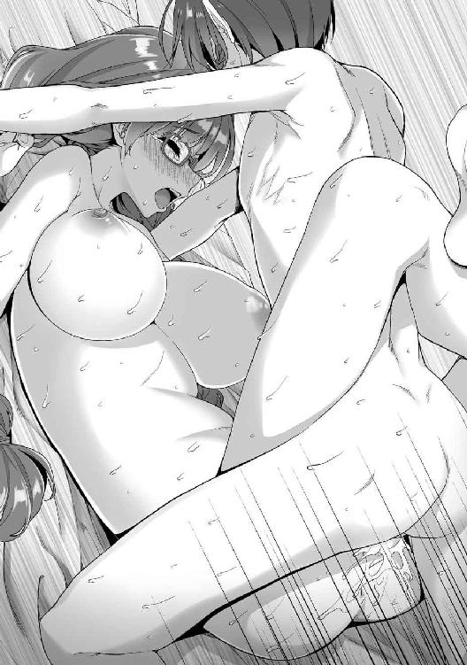
「抜いちゃ、駄目......ですぅっ！」
パウラさんは無我夢中の様子で絶叫した。
「くださいっ！ リアンさんの、私の中に、いっぱい！ 出して、出してぇぇぇぇぇっ！」
眼鏡の奥の瞳を潤ませ、パウラさんが膣内射精を懇願する。
「分かりました、じゃあ最後まで一緒に......っ！」
一緒にイキたい──いったんペニスを引き抜きかけた俺は、あらためて深々と突き入れ直すとラストスパートに入った。
「出しますよ、パウラさん！ ぐぅぅぅぅぅっ！」
俺は深々と突き入れ、十分に溜めた欲望のたぎりを一気に解放した。
ドクドクドクッ、ビュルッ、ビュルルルルッ！ ビュクゥゥゥゥゥゥゥッ！
ペニスの芯に鮮烈な快感電流が走り抜けると同時に、大量の熱いほとばしりをパウラさんの胎内に注ぎこむ。
「ふわぁぁ、あんっ！ あつ、ぃ、熱い、のぉぉぉぉぉっ！ やだ、何、これぇっ!? イク、パウラ、イクイクイクイクーッ！ イックゥゥゥゥゥゥゥゥゥゥゥッ！」
膣の一番深い場所に熱い大量射精を受けて、パウラさんも一気にオルガスムスまで駆け上がったようだ。
俺の射精はなおも続く。ドクドクドクッ、と気持ちのいい脈動でペニスが震え、次から次へと濃厚なザーメンを注入していく。
俺たちは互いに絶頂の叫び声を上げながら、深く繋がり合っていた──。
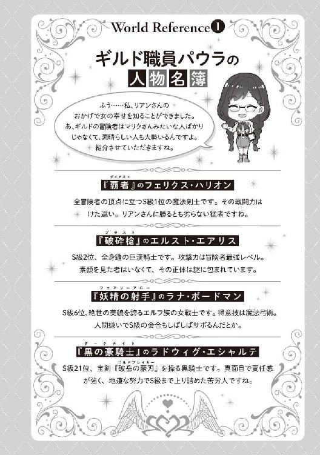
第三章 超絶難度、魔導兵器封印戦
その日、ギルドに行くと、クローディアから『話がある』と中庭まで呼び出された。
「超絶難度クエスト......？」
「あらゆるクエストの中でもっとも難度が高いものだ。基本的にＳ級しか受けることができない」
いつにも増して真面目な口調で説明するクローディア。
ざあっと吹いた風が、紫色をした長い髪をなびかせる。
そういえば、先日ギルドの職員さんと会ったときに、そんな話を聞いたような......。
「じゃあ、俺には受けられないか......」
「いや例外がある。Ｓ級冒険者が特別に認めた人間について、助手という名目でパーティに加えることは可能だ」
と、クローディアが続ける。
「前回のＳ級魔族討伐でも世話になったが──今回も私に力を貸してくれないか、少年？」
なるほど、話っていうのはそれか。
そのクエストをこなせば、ランクの大幅アップが期待できるな。
「ただし」
釘をさすように告げるクローディア。
「言っておくが、今回は手ごわいぞ。前回のクエストと同じように考えない方がいい」
常に自信に満ちた彼女には珍しく、その表情には緊張がにじんでいた。
なるほど、今までで一番歯ごたえがあるクエストになるかもしれない。
でも、俺だっていくつもクエストをこなしてきて『エルフの魔法剣士』としての戦いにもだいぶ慣れてきた実感がある。
自信だって、ある。
超絶難度って言われても、恐れよりも『挑んでみたい』って気持ちのほうが強く燃え上がっていた。自分でも驚くくらいに、気持ちが燃え盛っていた。
だから──。
「手伝わせてもらうよ」
俺は二つ返事でうなずいた。
さすがにクローディアも驚いたように、
「即決だな。君らしいというべきかもしれんが」
「ランクアップにもつながるし、Ｓ級に上がるってクローディアとも約束したからな」
俺は彼女に微笑んだ。
「......そうか」
照れたような、はにかんだような笑みをもらすクローディア。
「また一つ借りができたな、少年」
「いいよ、借りなんて思わなくても」
「いや、君には十分に恩義を感じている。この間のことも含めて、な」
言って、クローディアはサッと頰を赤らめる。
「今回の分も近いうちに返させてもらう......そ、その、まあ、そういう方法で」
照れたような美貌が、やたらと可愛い。
これは──またエッチしてくれるってことでいいんだよな？
よし、ますます燃えてきた！
「......なんの話でしょうか、リアン様」
「うわ、びっくりした!?」
いきなり背後から声をかけてきたのは、金色の髪を肩のところで切りそろえた可憐な女の子。普段はつぶらなその瞳が、今は焦点を失って妙に怖い。
そう、ミーナだった。
っていうか、まったく気配を感じなかったんだけど......。
「相変わらずおモテになるようですね......ぶつぶつ......でも私だって負けませんから......ぶつぶつぶつ......」
何やらつぶやいているミーナ。
「えっと、それでクエストの内容は？」
やけに迫力のある彼女から目を逸らしつつ、俺はクローディアに話題を振る。
「あ、ああ、今回のクエストは──」
クローディアもまたミーナに気圧されていたのか、汗ジト気味の顔を俺に向け、そしてクエストの概要を語ってくれた。
──先日、とあるＢ級冒険者パーティが探索したダンジョンで、超古代文明の遺物が見つかった。
ちなみに超古代文明というのは、いわゆる先史文明のことだ。現代をはるかに凌ぐ魔法文明が発達していた世界だったが、その後、大きな戦争があって滅亡した。
その痕跡は遺跡やダンジョンなどとして、各地に存在しているそうだ。
で、その遺物っていうのが、どうもめちゃくちゃ危険な兵器らしい。
しかも発見したパーティに反応して、起動してしまったんだとか。
周囲を無差別に破壊しようと暴れ出したそいつを、ギルドから派遣された数十人の僧侶たち──いずれもアルメリス、レ・ヴィなど、エルシャータと並ぶ主神格に仕える一流どころだそうだ──がなんとか結界で封じている状態だという。
もし結界を破られ、魔導兵器が暴れ出したら、町の一つや二つは一瞬にして壊滅するだろう。
それを完全に封印する──というのが、今回のクエストの内容だった。
破壊できれば一番いいんだろうけど、クローディアの話によれば、超古代文明の兵器は基本的に力ずくで何とかなる相手じゃないらしい。
ただ遺跡内にはその兵器を封印するための施設がある。
そいつをそこまで誘導すれば、再封印は可能だって話だった。
「超絶難度クエスト......ですか。なるほど、てっきりリアン様にアプローチしているのかと警戒しましたが」
ミーナはどこか焦点の合わない瞳で俺とクローディアを等分に見つめる。
「うふふふふふふ、よかったです。仕事の話だったんですね......でもリアン様を狙っている女性は大勢いますから、引き続き警戒は怠らないようにしなければ......ぶつぶつ」
いや、そういう病んだ感じの視線はちょっと怖いんだけど。
普段が穏やかな癒し系美少女だけに、たまに見せるこういう顔はゾクリとする。
「この男を誘うなら、わたしたちも誘ってほしい」
さらにイングリットも中庭にやって来た。
綺麗なアイスブルーのショートヘアを軽くかき上げ、
「わたしたちはＢ級。本来ならクエスト受領の権利はない。だけどクローディアが助手として指名してくれれば可能」
「いや、クローディアの話だとかなり危険なクエストみたいだし......」
「リアン様が行くなら、私もお供したいです」
ミーナが進み出る。
「それに超古代文明の兵器が相手となれば、人手はいくらあっても足りないでしょう。直接的な任務が難しければ、住民の避難誘導とか、けが人の手当てとか......できることはいくらでもあります」
その瞳には強い光が浮かんでいた。
「強さでは及びませんが、私たちも可能な限りがんばります。災厄を防ぐために」
「それに超絶難度クエストは未体験。わたしの知らない貴重な知識を得られるかもしれない。逃せない好機」
ミーナは人を守りたいという志を、イングリットは知識を求めたいという意志を。
それぞれ理由は違うみたいだけど、ともに意志は固そうだった。
「......ふむ」
クローディアはそんな二人を見て、うなった。
「確かに君たちのランクは今のところＢ級だ。だが、以前にあのＳ級魔族を倒した実績がある。二人の魔法によるサポートも、とどめをさしたローズマリー嬢の剣も、ともに見事だった」
「クローディアさんに褒められた......！ えへへへへ、あたしなんてそんなとてもうふふふふ」
赤いツインテールの先端部を指でいじりながら、マリーがにやける。
──って、いつの間にいたんだ!?
あいかわらずクローディアの前だとキャラ変わるなぁ。
まあ、クローディアはマリーにとって憧れの存在で、冒険者を目指すきっかけになった人物でもあるからしょうがないか。
「自信を持て。Ｓ級魔族を倒したのは、私でもリアンでもない。君なんだ、ローズマリー嬢」
微笑むクローディア。
「そんなそんなそんなぁ、あたしなんてまだまだですぅ。マリー、恐縮ですぅ」
......キャラ変わってるっていうか、キャラ崩壊してないか、マリー？
「君には──いや、他の二人にも底力を感じる。この戦いでさらなる成長を期待できるかもしれないな。それに人手がいくらあっても足りないのは事実だ」
「......とかなんとか言いながら」
俺はふとピンときた。
「まさか三人を鍛えて、いずれ自分が戦いたいとか言うんじゃないだろうな」
「もちろん戦いたいさ」
まったく否定しなかった。
「彼女たちはもっと強くなる。ああ、楽しみだよ」
目をキラキラさせて語るクローディア。あいかわらずの勝負大好きっ娘だ。
ま、そこがクローディアらしいといえば、らしい。
「では、ついてきてくれるか。ただし危険なときはすぐに避難してくれ」
クローディアが念を押す。
その表情にはやっぱり緊張の色がにじんでいた。
今回は、本当に歯ごたえのある相手みたいだ。
「出発は明朝。現地までは数日かかるし、そこでの作戦も数日──もしかしたら数週間かかるかもしれない。その心づもりはしておいてくれ」
クローディアはそう締めくくった。
三日後、俺やミーナ、マリー、イングリットはクローディアとともにエスト・シティに到着した。
レギルス・シティほどではないけど、それなりに栄えた都市だ。
エルフの体力だと三日程度の旅でもけっこう体力を消耗してしまうが、身体強化を使いながら進んだため、特に負担はなかった。
「長旅ご苦労だったな。この先にギルド支部があるから、そこで休息を取ろう」
大通りを進みながら、クローディアが俺たちをねぎらってくれた。
たくさんの商人たちで行き交う通りの先に、豪奢な館が見える。きっとあれがギルド支部の建物だろう。
と、
「ねえ、見て......エルフよ」
「すごく綺麗な顔......素敵」
町娘たちのヒソヒソ話が聞こえてきた。
俺たちに聞こえないよう話してるつもりなんだろうけど、エルフの耳は聴覚のデキが違うのだ。
「珍しいわね......あ、本当に耳が尖ってるんだ」
「あたし、初めて見た」
「私は前に一度見たことがあるけど、あの人のほうがずっと美形......」
久しぶりだな、この感じ。
レギルス・シティでは、最近は俺がエルフだっていうだけで珍しがられることはない。それだけ町に馴染んでいたのかもしれない。
だけど他の町に来ると、あらためて感じる。
自分が人間ではない、別の種族だという実感──。
......もしかしたら、こっちの町では亜人差別なんてのがあったりするんだろうか。少し前にいざこざがあったＡ級冒険者のマリクみたいに。
この世界の人間には、エルフやドワーフといった亜人種族に偏見や差別意識を持つ者もいる。
「それにクローディアさんでしょ、あれ......」
「もしかしてＳ級冒険者の......？」
「かっこいい、憧れちゃう......」
なんて話しながら、町娘たちが近づいてきた。
クローディアに向かって羊皮紙を差し出す。
「あのあのあのっ、クローディアさんですよね？ ファンです、サインくださいっ」
町娘の一人がポーッと上気した顔で叫んだ。
「あ、ずるい。あたしもあたしも～」
「お姉さま、こっち向いて～」
たちまち他の町娘たちもクローディアに殺到する。
「慌てなくても順番にするから大丈夫だ、少女たち。さあ、並んで」
クローディアはやけに慣れた様子で、彼女たちに微笑みかける。
人気あるんだな、クローディアって......。
「以前にもこの町の近くに現れた魔族を倒したことがあってね。以来、この町に立ち寄るたびに歓迎されるようになったんだ」
クローディアが照れとも苦笑ともつかない微笑を浮かべた。
「あ、あの、そちらのエルフさんは......？」
町娘たちはなおも上気した顔でクローディアを見つつ、俺にチラチラと視線を向ける。
「彼はリアン・ティアレード。冒険者になって間もないためにランクは未だＣ級だが、遠からずＳ級まで上がってくる逸材だ。君たちも、私より彼のサインをもらっておいたほうがいいかもしれないぞ、ふふ」
クローディアが町娘たちに俺を紹介してくれた。
「じ、じゃあ、リアンさんもサインくださいっ」
「あ、ずるい、あたしもほしい～」
今度は俺に群がる町娘たち。
亜人差別どころか、どっちかというとアイドル扱いだった。
「すまないねぇ、旅のお方。この子たち、有名な冒険者が来るといつもこうで」
「悪気はないんで、許してやってください。クローディアさんも、そっちのエルフさんも」
とりなす町の人たちは、微笑ましげだった。
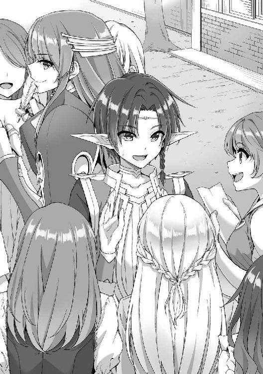
亜人差別のことに考えを巡らせていた俺は、肩すかしな気分だ。
同時に少しほっとした。
この町の人たちも、レギルス・シティの人たちと同じように温かい感じがする。
だからこそ──守らなきゃな。
気持ちを引き締め直した。
超古代文明の魔導兵器が、もしも結界を破ったら──。
まっさきに襲われるのは、この町だろうから。
「これはクローディア様！ おつきの方々もこちらへどうぞ」
ギルド支部に入ると、職員が出迎えてくれた。中央のホールみたいな場所に案内される。
「よう、久しぶりだな、クローディア」
そこで待っていたのは、一人の女性だった。
年のころは二十代前半だろうか。毛先が尖った金髪のショートヘアが、どこか攻撃的なイメージを抱かせる。整った顔立ちに左目の眼帯が特徴的だ。
スラリと引き締まった体に、黒い軍服みたいな衣装を身に着けていた。
「久しいな、シルヴィア嬢。一年ぶりか」
挨拶を返したクローディアは、俺たちにその女性のことを紹介する。
「彼女はシルヴィア・ロイガ。『魔導仙女』の二つ名を持つ、Ｓ級五位の実力者だ」
「へえ、エルフか。しかもすごい美少年じゃねーか」
シルヴィアが俺をしげしげと見つめる。
その口調は男みたいだけど、鈴のように澄んだ声音のせいか、乱暴な感じはしない。むしろ凛とした美しささえ感じた。
「エルフは美形ぞろいだって言うけど、ここまでのルックスはまずいないぜ」
キスしそうなほどの至近距離に、どきっとなった。
かなりの美人な上に、吹きかかる息がやたらと甘ったるい。
男のような口調と美人さんの雰囲気のギャップに、ドキッとなった。
「ん？ 何赤くなってんだよ。言っておくが、オレに惚れるんじゃねーぞ」
シルヴィアがにやりと笑った。
「べ、別に、俺は......」
「まあ、お前みたいな美少年は嫌いじゃないぜ」
にやにやした顔は明らかに俺をからかっていた。
「クエストの景気づけに、ちょっと二人で楽しまないか？ なんなら女の扱い方を一から教えてやろうか、ふふ」
「初対面でそんなことを誘うのは、さすがにどうかと思います」
ミーナが前に進み出た。
柔和な彼女にしては珍しく、険しい表情だ。
「冗談だよ。これから危険な任務に行くんだから、気分を和らげてやろうと思っただけさ」
シルヴィアは悪びれない。
「仲良くしよーぜ。オレたちは戦友なんだからよ」
「......リアン様に変なちょっかいを出さないのであれば」
ミーナが俺に寄り添う。
「すみません、リアンが絡むとミーナはちょっと態度が変わるので」
マリーがとりなした。
「恋する乙女は変わる」
イングリットが注釈する。
「要はヤキモチ焼きなんだな。初々しくて微笑ましいねぇ。嫌いじゃないぜ、お前みたいな女」
シルヴィアがにやりと笑う。
「気分を害したみたいで悪かったな。冗談が過ぎたようだ」
と、軽く頭を下げた。
「いえ、こちらこそ申し訳ありません」
ようやくミーナも硬い表情を解き、微笑みを浮かべた。
「ともあれ、よろしく頼むな。お、そっちの女はなかなか高い魔力を持って──」
イングリットに目を向けたところで、シルヴィアの表情が変わった。
「......なんだそりゃ？」
右目をすうっと細める。
その視線はイングリットの胸元辺りを注視していた。
「封印の呪陣か？ 確かそいつはフィニア王家の封印紋章──」
「......詮索無用」
イングリットがキッとにらんだ。
なんだ、ネガプロテクトって？
二人のやり取りの意味が分からず、俺はキョトンとなる。
一方のミーナやマリーは何かを察したような顔だ。
「怖い怖い。オレだって他人の事情に首突っこむつもりはねーよ。ちょっと気になっただけさ」
シルヴィアが苦笑した。
「すまないな。この通り思ったことはすぐに口に出すタイプだ。だが悪気はないし、裏表もない。まっすぐな性格なんだ。気を悪くしないでくれ、みんな」
と、クローディアが場を仲裁する。
「フォローどーも」
「いつものことだ」
苦笑を深めるシルヴィアに、クローディアは軽く肩をすくめた。
「じゃあ、さっそく現場まで案内するぜ」
「彼らは到着したばかりなんだ。少し休んでもらおう」
と、クローディア。
「魔導兵器の封印作業は比較的安定していると聞いているし、急ぐことはあるまい」
「ンな悠長なこと言ってられねーよ」
シルヴィアが表情を引き締めた。
「クローディア、あんたが出張ってる間に状況が変わったんだ。現場ははっきり言って......ヤバいぜ」
現場の遺跡は、エスト・シティからほど近い山の中腹にあった。
俺たちはシルヴィアの案内で遺跡を進んでいる。
「Ｓ級ってことは、やっぱりシルヴィアもクローディアくらい強いのか？」
歩きながら、俺はクローディアに小声でたずねる。
「私は剣士、シルヴィア嬢は魔法使いだから単純比較は難しいが──対魔物用の戦力としてなら、彼女のほうが上かもしれないな」
と、クローディア。
へえ、そいつは頼もしい。
「魔法に関しては世界でも最高峰の使い手の一人だよ。もともとは魔法王国として名高いルーンガリアの軍事魔法顧問をしていたくらいだしね」
「軍事魔法顧問？」
「重臣たちとそりが合わずにすぐ辞めてしまったそうだが」
「へっ、お堅い宮仕えはオレには向いてなかったんだよ」
シルヴィアは背中を向けたまま、ふん、と鼻を鳴らした。
あ、聞こえてたのか。
「まあ、幻棺兵団の連中はオレの在任中にみっちり鍛えてやったからな。給料分の仕事はしたさ」
もう一度鼻を鳴らすシルヴィア。
「なんだ、ファントムアークって？」
「ルーンガリアの魔法戦団さ。世界最強と名高いエリート中のエリート魔法使いたちだよ」
俺の問いにクローディアが答える。
「冒険者でいえば、全員がＡ級以上の実力者ばかり。中にはＳ級に匹敵する使い手も何人かはいるはずだ」
「すごいな......」
そんな人たちを教えていたっていうなら、シルヴィアの実力は折り紙つきと見ていいだろう。
さすがはＳ級冒険者の一人、ってところか。
俺たちは遺跡の内部をさらに進む。
入り口付近は岩肌が露出していて天然の洞窟みたいだったけど、進むにつれて、徐々に石壁で囲まれた人工物っぽい感じの道へと変わっていった。
「レギルス・シティでも簡単に説明したが、今回の作戦の目的は魔導兵器を封印することだ」
と、クローディア。
「封印って具体的にはどうするんだ？」
「魔法に関しては、私は門外漢だからな。後の説明はシルヴィア嬢に任せたい」
俺の問いに、クローディアが答える。
「じゃあ、簡単にレクチャーすんぞ」
シルヴィアは歩みを止めないまま、説明を始めた。
──魔導兵器はもともと遺跡の最深部に封印されていた。
だけど、ここを探索した冒険者パーティに反応して起動してしまった。
そして今は、最深部から入口へ続く通路の途中で足止めしているそうだ。
「魔導兵器は確かにとんでもない強さだ。ただ、活動を続けるためには膨大な魔力を必要とする。今は大気中に存在する魔力を吸って動いているようだが、そんなもんじゃ全然足りないだろう。だから奴は手近にあるエネルギー源へと向かうはずだ」
「エネルギー源......？」
嫌な予感がした。
「大勢の人間を殺し、その魔力を奪い取る──格好の狩場がすぐ近くにあるからな」
「......エスト・シティか」
シルヴィアの言葉に、俺は唇を嚙みしめた。
「今は結界で足止めしているが、それも段々と効かなくなっている。いつ効力が消えて、奴が暴れ出してもおかしくない......そうなる前にオレたちで完全に封印するんだ」
と、険しい顔のシルヴィア。
魔導兵器に襲われ、殺される人々や破壊される町を想像してしまう。
その中には、俺に話しかけてくれた町娘たちや町の人々も入っていた。
そんなこと──させるもんか。
「封印作業のために、まずは魔導兵器をもう一度、遺跡最深部まで押し戻す。そこには周囲の魔力を遮断する装置があるからな。魔力が尽きれば、奴は動けなくなる──その後で戦闘用のパーツを全部取り外して再封印すればいい」
「押し戻す、ってどうやって？」
「どうもこうもねーよ」
俺の問いにシルヴィアは攻撃的な笑みを浮かべた。
「力ずくでブッ飛ばすんだ。最深部までな」
俺たちはさらに進み、魔導兵器が駆動する現場に到着した。
小さな野球場くらいの面積はあるだろうか、かなり広いホールのような場所だ。
「聖煌封印！」
「麗心封！」
「至高聖神の戒め！」
数十人の僧侶や神官がそれぞれの信仰する神に祈り、結界呪文をぶつけている。
白や赤、金などまばゆい光が交差し、弾ける。
目もくらむような光の渦──その中心に、そいつは平然とたたずんでいた。
爛々と輝く真紅の双眸。学校の校舎くらいの大きさはありそうな、漆黒の狼を思わせる巨体。そして両肩から突き出したキャノン砲のような武装。
そのフォルムは魔法の産物というよりは、現代兵器を連想させる機械的なデザインだった。
魔導兵器『フェンリル』。
今回のクエストのターゲットだ。
「待たせたな。今から封印作業を始めるぜ」
シルヴィアが進み出た。
フェンリルに結界魔法をかけている僧侶たちがいっせいに振り返る。
「おお、シルヴィアさん！ それにクローディアさんも！」
「Ｓ級二人が来てくれれば、どうにかなりそうだな！」
彼らの顔に希望があふれた。
「相手は強敵だ。決して気は抜かないようにしてくれ」
紫色の髪をばさりとかき上げ、双剣を抜くクローディア。
「封印施設はあの奥にある」
シルヴィアがフェンリルの背後に延びる道を指差した。
「オレたちの魔法や剣でフェンリルを攻撃して、ひたすら押しこんでいくぞ」
さっきも思ったけど、それってただの力押しだよな。
作戦でもなんでもないような......。
「奴に小細工は通じない。今集められる最大戦力を正面からぶつけ、押し切る──力任せの無策こそが、この場では最上の策だと判断した」
「......なるほど」
整然と語るシルヴィアに、とりあえず納得する。
「オレたちが全力で攻撃すると、その余波で遺跡が崩落する危険がある。だから僧侶たちには周辺を保護するための結界魔法をかけてもらう。遠慮せずにぶっ放してくれ」
全力の魔法剣技を撃てる、ってことか。それならなんとかなるかな。
「では前衛は私とリアンが務める。ローズマリー嬢はそのサポートだ。ただし深入りは避けること」
指示を出すクローディア。
「あたし、がんばりますぅ」
マリーが嬉しそうに身をくねらせる。
いつもの凛とした女剣士の面影はまったくなかった。
「シルヴィア嬢は攻撃魔法でフェンリルを押しこんでくれ。イングリット嬢も援護射撃を。ミーナ嬢は防御と、主力メンバーが怪我を負ったときの回復を担当してくれ」
「任せろ」
「了解」
「分かりました」
と、それぞれ答えるシルヴィア、イングリット、マリー。
「頼むぞ、少年。この中で最強の戦力は、君だ。頼りにしている」
「やれるだけやるよ」
うなずく俺。
「全力で押しこめばいいんだな。分かりやすくていいか」
腰に下げた黄金の小剣──ミリファを抜いて、構える。
「では魔導兵器封印戦、開始だ」
そして、クローディアの号令とともに。
──死闘が、幕を開ける──。
「いくぞ、少年。まずは私たちで仕掛ける」
「分かった」
俺はクローディアとともに最前列に出た。
「僧侶たちは結界魔法を順次解除、その後、すぐに周辺の壁や天井、床を防護する結界に切り替えろ」
指示を出すシルヴィア。
「承知しました」
僧侶たちが放っていた色とりどりの光──結界魔法の魔力光が次々に消えていく。
その光が周囲の壁を、天井を、床を覆っていき、
うおおおぉぉぉぉぉぉぉおおおおおぉぉぉおおおおおおおぉぉぉぉおおおおぉぉぉぉぉん！
解放されたフェンリルが、吠えた。
その声だけで、空気が激しく震え、衝撃波が吹き荒れる。
「やるぞ、ミリファ」
「相手は魔導金属装甲に覆われています。火属性の魔法剣技で攻めましょう」
ミリファが俺にアドバイスをする。その柄に浮かぶ文字が『Ｓｔａｎｄｉｎｇ ｂｙ』から『Ａｔｔａｃｋｍｏｄｅ』へと変化した。
もちろん身体強化もすでにかけてある。
戦闘準備、完了だ。
「私は右、少年は左だ。いけるな？」
クローディアが双剣を構えた。
うなずき、俺たちは同時に走り出す──。
刹那、
ううぅおおおおおおおおおおおおぉぉぉぉぉぉぉぉぉんっ！
フェンリルがふたたび吠えた。
『新たな脅威を複数確認』
『脅威評価測定──完了。特Ａ：１ Ａ：２ Ｂ：２ 不明：１』
『排除するもの排出。本体を保護』
フェンリルから機械的な音声が響く。
同時に、バックパックを思わせる背部が弾け散った。
いや、違う。パーツの一部が分離したんだ。
あれは、まさか──。
「子機──!?」
小さな三体のフェンリルが、床に降り立った。
狼を思わせるフォルム。装甲に覆われた巨体。両肩から突き出したキャノン砲。
排除するものとかいう三体の子機は、いずれもフェンリル本体とよく似たデザインだ。
違いといえば、サイズがずっと小さいことと、本体のカラーリングが漆黒であるのに対し、子機は青ってことくらいか。
本体を守るように、三体が横並びで俺たちの前に立ちはだかった。
「こんな機能があったのか──くそ、これだから超古代文明の兵器は厄介だな」
背後でシルヴィアが舌打ちする。
と──。
子機の一体がいきなり飛びかかってきた。
狙いは前衛の俺やクローディア。
──ではなく、
「逃げろ、ミーナ！」
俺たちを飛び越えた子機は、最後尾のミーナに襲いかかる。頭上に爪を叩きつけようとする。
「きゃぁ......っ」
響く悲鳴。一般的な身体能力しかない彼女には、その超速の攻撃を避けることも防ぐこともできない──。
「ちいっ」
俺は舌打ち混じりに脚力を全開にした。猛ダッシュでミーナのところまで駆け抜ける。
「斬撃解放──破妖斬！」
子機の鋭利な爪がミーナを切り裂く寸前、間一髪で間に合った俺が魔法剣技で迎撃した。
Ａ級竜種さえ吹き飛ばす威力の斬撃だ。弾ける爆光とともに子機が大きくよろめく。
それでも体勢を立て直し、今度は俺に向かって前足を叩きつけてきた。メタリックな輝きを放つ爪には、強大な魔力がこもっているのが分かる。
いわば魔力爪撃ともいうべきそれを、
「無駄だ！」
俺は無詠唱の魔法剣技で跳ね返す。
さらに二撃、三撃。振り下ろされる爪を、俺は魔力の斬撃で弾き、その一本を斬り飛ばした。
ぐるるるるる......ぅ。
たじろいだように後ずさる子機。
「いける──」
いくら相手が超古代文明の兵器でも、俺の魔法剣技は十分に通用する。
──と、そのときだった。
「リアン様、後ろ！」
ミーナが悲鳴混じりに警告する。
一瞬の隙、だった。
振り向けば、背後からもう一体の子機が迫っている。
「くっ......」
俺は慌ててそいつに魔力斬撃を叩きつけようとした。
だが、それより一瞬早く、迫る子機の魔力爪撃が叩きこまれる。
俺に、ではなく。
足場である床に──。
「えっ......!?」
僧侶たちがかけた防護魔法をあっさり突き破り、床一帯にクモの巣のような亀裂が入った。大量の瓦礫とともに崩れ去る。その下には、何もない空間が広がっていた。
「しまった──」
ようやく、気づく。
こいつは、最初から俺を狙っていたわけじゃなかった。一体目と俺の戦いを見て、俺が容易じゃない敵だと判断したんだろう。
だから、まず俺をこの場から引き離すことを選んだんだ。
悟った瞬間、床がさらに崩落する。
「お、落ちる──!?」
俺は二体の子機とともに、底の見えない穴の下へ落ちていった──。
※
ｓｉｄｅ ミーナ・アリベル
「リアン様！」
崩れた床の下に落ちていったリアンと二体の子機を、ミーナは呆然と見つめていた。
穴の縁まで走り寄り、下を見下ろす。
そこに広がっているのは、一面の暗闇──いったい、どれほどの深さがあるのかも分からない。
リアンのことだから、そう簡単に墜死などしないとは思うが、それでも胸が張り裂けそうな不安を感じる。
「私もすぐに行きますっ」
追いかけるために、浮遊魔法の呪文を唱えようとした。
が、それよりも早く、周囲の瓦礫が集まり、床の穴を塞いでいく。
「これは──」
あっという間に元通りに修復してしまった。
どうやら遺跡自体が自己修復機能を備えているようだ。これでは、追いかけられない。
「今は、目の前の敵に集中」
イングリットがミーナの側に歩み寄った。
「リアンならきっと大丈夫でしょ。あたしはあいつを信じる」
マリーが軽口を叩きながら大剣をかまえる。
だが、柄を握る両手はかすかに震えていた。
「マリーさん......」
口ではどうであれ、本当はマリーも不安なのだ。今のでリアンが墜落死していないか、と。
できるなら追いかけたいに違いない。
だが、その手段は断たれてしまったし、気を抜けば敵に殺される。
「......そうですね。まずはフェンリルを封印して場の安全を確保。それからリアン様を追いましょう」
ミーナは気持ちを落ち着けるために、ふうっと息を吐き出した。
未だ不安は消えない。リアンのことを思うと、心配でたまらない。
それでも意志を強く持ち、目の前の戦いに集中し直す。
「ちいっ、いきなり分断されちまうとは」
シルヴィアは険しい表情でフェンリルと子機を見据えた。
先端に巨大な宝珠がはめこまれた杖を構える。噂に聞く伝説級の武具──持つ者の魔力を増幅するという破壊の宝珠杖だろう。
「残り一体はオレたちで片づけるぞ。クローディア！」
「任せろ──」
クローディアが双剣を手に子機へと突進した。
ヴン、と子機の瞳が赤く発光する。
次の瞬間、青い巨体が旋風と化した。残像すら置き去りにするほどの、超高速機動。
「速い──!?」
クローディアの驚愕とともに、
ぎいんっ！
大気を震わせるような金属音が鳴る。
超速突進からの魔力爪撃を双剣で受け流したのは、さすがにＳ級冒険者だった。
だが、受け切れなかったのか、クローディアがまとう騎士鎧の右肩部分がバターのように裂け、破片が飛び散る。さらに振り下ろされた左右の爪を、クローディアは双剣を振るって弾き、いなし、受け止めた。
「すごい......今の攻撃、あたしなら真っ二つにされてる......」
マリーが呆然とつぶやく。
呆然としているのは、ミーナも同じだ。
そもそもクローディアと子機の動きをほとんど目で追うことさえできない。魔導兵器とＳ級冒険者の白兵戦は、あまりにも速すぎる。魔法で援護したいが、とても割って入れなかった。
フェンリルの本体は高みの見物なのか、状況を静観しているのか、微動だにしない。
あるいは、自分たちを掃討するには子機で十分だと判断しているのか。
「......舐めるな。五貴剣──業火」
炎をまとった五本の剣が、超音速の火矢となって放たれた。爆発とともに子機が大きく吹き飛ばされる。
「距離さえ離せば──氷魔竜牙弾！」
シルヴィアが杖を振るい、巨大な氷の竜を放つ。
「蒼氷煌刃」
さらにイングリットが生み出した氷の刃がそれにまとわりつく。
二人の魔力が絡み合い、より強大な魔法となって、体勢を崩した子機に叩きつけられた。
ぐるるる......！
白い爆発の向こうから現れた子機は、さすがに装甲のあちこちが砕け、ダメージを受けた様子だ。
それでも機能停止とまではいかず、なおも向かってくる。
「ならば、これで──麗心縛」
ミーナが束縛の呪文を放つ。蛇の形をした魔力の束が子機の全身を絡め取った。すべての魔力を注ぎこみ、必死で敵の動きを封じる。
だが子機のパワーは絶大だ。
体を揺すり、魔力の蛇を次々に振り払い、今にも自由を取り戻しそうだった。
「くっ、なんて圧力──」
魔力を注ぎ続けるミーナの額に汗がにじむ。
「十分だ。わずかでも動きを止めてくれれば──やれる」
言うなり、クローディアが疾走した。
「ローズマリー嬢、サポートを頼む」
「ご指名ですね、がんばりますぅ」
そのすぐ後ろをマリーが追走する。こんなときだというのに、浮かれた顔だった。
「七王剣──奈落」
閃く無数の銀光。以前にリアンと戦ったときにも使った、彼女の最大奥義である。
ぐるるるる......っ!?
さすがにこれを食らってはまずいと判断したのか、フェンリルの子機がその場から跳び下がろうとする。
「逃がしませんっ」
だがミーナの束縛魔法が、その動きを鈍らせる。さらにシルヴィアやイングリットの魔法のダメージもあるのだろう、回避がわずかに遅れ──その一瞬が、勝負を分けた。
クローディアが放つ全方位からの同時斬撃が子機を襲い、斬り刻む。
「帝紅斬術、拾壱の太刀──焔帝爆閃！」
中空高く跳び、一回転して叩きつけたマリーの斬撃が動力部を斬り裂いた。
「やりましたね」
「へっ、即席ながらいい連携じゃねーの」
「個々のタイミングが完璧」
ミーナはシルヴィア、イングリットと微笑み合う。
「いい太刀筋だ」
「クローディアさんに褒めていただけるなんて......マリー、感激ですぅ」
子機を仕留めたクローディアとマリーもハイタッチをしていた。
だが、すぐに全員の表情が引き締まる。
「......ここからが本番ですね」
ミーナは青ざめた顔で前方を見据えた。
フェンリルがゆっくりと歩みを進める。
いよいよ、本体が戦闘モードに入ったのだ。
圧倒的な威圧感に体の震えが止まらない。全身の血が凍りつきそうな恐怖感を覚える。
「気を付けろ、皆」
クローディアが警告を送った。
「気配で分かる──子機とは比べ物にならないぞ、こいつ」
マリーが大剣を、シルヴィアとイングリットが杖を、緊張の面持ちで構える。
ミーナは最後方で愛の女神に祈りをささげた。
全員が無事にこの戦いを切り抜けられるように。
どうか、一人も欠けることなく──。
戦いは、Ｓ級二人の攻勢から始まった。
「七王剣──奈落！」
クローディアの全方位同時斬撃が、フェンリルに叩きつけられる。数百数千という斬撃を受けて、漆黒の巨体がたじろいだ。
体勢が崩れた敵に、シルヴィアが杖をかざし、
「炎熱獅煉弾！」
火炎系の最強呪文を叩きつける。
洞窟全体を揺るがすような爆音が響き渡った。
ぐるるるる......！
爆炎の向こうから現れたフェンリルが怒りの咆哮を上げる。
その体は、さすがに無傷ではなかった。装甲のあちこちが砕け、焦げ目ができている。
「よし、子機と同じように最上級呪文なら通用するみたいだな。けど、まだまだ手は緩めないぜ──クローディア！」
「分かっている」
シルヴィアとのアイコンタクトで、クローディアがすばやく飛び出す。
スピードならフェンリルより彼女が上だ。斬撃をひたすらに浴びせつつ、シルヴィアが隙を見て最上級の攻撃魔法を連打する。
そのたびにフェンリルの装甲が切り裂かれ、砕け散る。
息の合った見事な連携だった。
「すごい──」
ミーナたちはまったく手が出せない。下手な援護をしては、かえって邪魔になってしまうからだ。
「いや、あたしたちの援護なんて必要なさそうだ」
マリーがつぶやいた。
「二人が明らかに優勢」
と、イングリット。
フェンリルの攻撃はクローディアたちを捉えられず、二人の攻撃は少しずつ魔導兵器に損傷を与えている。これを繰り返していけば、蓄積したダメージでフェンリルを無力化できる──。
「くぅ......っ!?」
ふいに、クローディアが珍しく焦ったような声をもらした。今までかすりもしなかった爪撃が、彼女の肩口をわずかにかすったのだ。
「おい、クローディア......」
「何か変だ......こいつ、速くなっている──!?」
シルヴィアの声に、クローディアがうめく。
「まさか......」
ミーナがハッと顔をこわばらせた。
気づいたのだ。
フェンリルの動きが徐々に速くなっていることに。
フェンリルの火力が徐々に増していることに。
「二人の動きを学習して、強く──」
そして、魔導兵器の動きはさらに鋭さを増す。
クローディアの斬撃は、今やほとんど当たらない。隙を作ることができないため、シルヴィアの魔法も大半が避けられ、命中したものも大したダメージを与えられない。
「どんどん強くなる......まずい！」
フェンリルの爪がクローディアの斬撃を跳ね返し、その剣をへし折った。
「こ、このっ......！」
焦ったシルヴィアの魔法を弾き返し、さらに突進するフェンリル。
「がっ!?」
「ぐあっ！」
魔力の籠もった爪撃がクローディアとシルヴィアをまとめて吹っ飛ばした。地面に叩きつけられ、二人は立ち上がれない。
たったの一撃で、形勢は完全に逆転した。
Ｓ級二人がかりでも歯が立たない──。
ミーナは呆然と立ち尽くした。
かつてないほどの恐怖で息が詰まる。ヘビににらまれたカエルのように動けない。
自分たち三人が加勢に加わったところで、結果は変わらないだろう。
いや、そもそもフェンリルの前に出ただけで、おそらくは殺される。Ｓ級の二人だからこそ、あそこまで持ちこたえられたのだ。
『まず脅威評価Ａの二人を排除する』
フェンリルから機械音声が響いた。
耳まで裂けた口が大きく開き、喉奥から砲がせり出す。その砲口に白い輝きが収束していく。
「くそ、呪詛魔砲を撃つ気か！ あれはまずいぜ......」
シルヴィアが倒れたまま、青ざめた顔でうめいた。
「シルヴィアさん......？」
「単なる破壊魔法攻撃じゃない。とびっきり極悪な呪いがこもった砲撃なんだ。あれをぶっ放されたら周囲一帯が呪詛で汚染される。どれだけの魔法災害が引き起こされるか──」
「──させない」
飛び出したのは、イングリットだった。
「無茶だ！ Ｂ級の魔法使いが防げるレベルの攻撃じゃない。くそ、こうなったらオレがダメ元で防御呪文を──」
杖を支えに、シルヴィアが無理やり立ち上がろうとする。しかし、とても魔法を放てる状態ではないことは明らかだった。
ミーナも防御呪文を唱えようとするが、とても間に合わない。
フェンリルの口腔に仕込まれた砲から黒紫に澱んだエネルギーの塊が放たれた。
呪詛魔砲。
怒り、悲しみ、憎しみ、殺意、絶望──あらゆる負の感情が凝縮された、呪いの弾丸ともいうべきそれを、
「魔紋よ──」
イングリットはただ両手を広げ、自らの体を盾にして、立ちふさがる。
「イングリットさん！」
「やめろ、イングリット！」
ミーナとマリーが悲鳴を上げる。
イングリットがこちらを振り向いた。
「大丈夫......だから」
深い悲しみを宿した、切なげな笑顔。
次の瞬間、黒紫の魔弾が彼女の小柄な体を直撃した。
「だめぇぇぇぇぇぇぇっ！」
ミーナは絶叫した。
高濃度の呪いに蝕まれ、即死するイングリットの無残な姿を幻視する。
黒い輝きが、弾けた。
音もなく、爆風も衝撃波もなく、凍りつくような静寂が訪れ、そして──、
「......えっ......!?」
ミーナは驚きに目を見開く。
魔弾は無数の粒子となって弾け散り、イングリットはその中心部にたたずんだままだ。
「呪詛が跡形もなく消えた......？ 馬鹿な」
シルヴィアが呆然とした顔でつぶやく。
「まさか、封印の呪陣の反発力で強引に呪詛を弾き返した......!? フィニア王家の魔紋にはそこまでの封印力があるっていうのか──」
「はあ、はあ、はあ......」
イングリットは荒い息を吐き出し、その場に崩れ落ちた。
「イングリットさん！」
慌てて駆け寄るミーナ。
仰向けに倒れたイングリットは顔中が真っ青だった。
緩やかに上下する小ぶりな胸元に──乳房の狭間に何かが光っている。
紋章のような、何かが。
これが先ほどの呪詛を跳ね返したのだろうか？
いや、今はそんなことを考えている場合ではない。
「治癒の掌」
異常なほど消耗しているイングリットに急いで治癒呪文をかけた。青ざめていた彼女の顔に、少しずつ血色が戻りだす。
と、
『強大な魔力フィールドの発生を確認──対象を脅威評価：特ＡからＳに修正』
フェンリルから機械音声が響いた。
（えっ、どういうこと──）
ミーナはふと疑問を感じる。
先ほど、この魔導兵器は彼女たちを見て、
『脅威評価測定──完了。特Ａ：１ Ａ：２ Ｂ：２ 不明：１』
という評価を下していた。
てっきり特Ａがリアン、Ａがクローディアとシルヴィアだと思っていたのだ。
だが今の口ぶりだと、おそらく特Ａというのは──。
（イングリットさんが......!?）
もちろん彼女は優れた魔法使いである。それでも、最強クラスの魔法使いであるシルヴィアよりも評価が高いのは、さすがに解せない話だった。
『Ｓ以上の脅威評価につき、排除するもの全機射出。速やかなる排除を実施する』
フェンリルの背部が轟音とともに弾け散った。
そこから放たれるいくつもの影。
「なっ......！」
床の上に降り立った子機は、全部で七体だった。
こちらはすでにクローディアもシルヴィアも倒れ、迎撃する余力など残っていない。ましてや、七体もいては──なぶり殺しにされる以外の未来が見えなかった。
「うう......」
ミーナは反射的にイングリットを抱きしめていた。
彼女をかばうように。
その腕が、全身が、震える。
全員、確実に殺されるだろう。
「たすけ......て......」
半ば無意識にうめいた。
最強であるＳ級冒険者でさえ、太刀打ちできない敵。
だがミーナは知っている。信じている。
真の最強は──彼なのだと。
どんな敵が相手でも、すべてを薙ぎ払い、必ず勝利してくれる──と。
だから心の中に思い浮かべた。
彼女の、運命の相手を。
「助けて......リアン様......」
ミーナがつぶやき、七体の子機のうちの一機がゆっくりと近づき──、
「破妖斬！」
輝く斬撃が子機を吹き飛ばした。
「これは──」
強烈な既視感を覚える。
そう、以前にも似たようなことがあった。ミーナたちがＡ級竜種の前に追いつめられたときのことだ。彼が颯爽と現れ、その窮地を救ってくれた。
それとまったく同じシチュエーションだった。
「まさか──」
振り返り、息を呑む。
「待たせてごめん。やっと戻ってこられた」
弾け散る魔力光の向こうから現れたのは、黒髪碧眼の美しいエルフだった。
※
俺は周囲の状況を確認した。
前方にはクローディアやシルヴィアが倒れている。そのすぐ近くではイングリットがミーナに治癒魔法をかけてもらっていた。
だけど、いずれも命に別状はなさそうだ。
とりあえず、全員が無事なことに安堵する。
その向こう側には二体の子機──排除するものの残骸があった。一体はさっき俺が倒したやつで、もう一体はミーナたちで倒したんだろう。
背後では、戦いの余波で遺跡が崩落しないよう、僧侶たちが結界魔法をかけてくれている。
──よし、状況把握終わり。
全力で戦っても、遺跡が壊れて生き埋めになるリスクは少なそうだし、後は俺がフェンリルと残り六機の子機を片付けるだけだ。
「その様子だと随分手こずったみたいだな。全員、下がっていてくれ」
俺はみんなにそう言って、歩みを進めた。
「後は俺がやる」
フェンリルと六体の子機を見据える。
「一人でやるつもりか......無茶だ」
クローディアがうめいた。
「リアン様......」
ミーナは心配そうな顔だ。
俺はにっこりといつもの爽やかスマイルを浮かべてみせた。
「大丈夫。地下で戦っているときに、ちょっとしたコツをつかんだ」
彼女を、そしてこの場の全員を安心させるために。
「コツ......ですか？」
「すぐに終わらせる」
言って、さっきの戦いを思い返す。
──地下に落ちた俺は、二体の子機と対峙していた。
まともに戦えば、俺が勝つだろう。
だけど、上にいるミーナたちが心配だ。
さっさと片付けて、すぐに戻らないと。
「速攻でいくぞ、ミリファ」
そう言って、俺は疾走する。
強化されたスピードで懐まで飛びこみ、
「灼天使の断罪！」
放った真紅の光球が、一体の子機を消滅させた。
「身体強化の使い方も、魔法剣技のコントロールも見事ですね」
満足げなミリファ。
「やはり実戦を重ねることで、身体強化も魔法剣技も見事に習熟しているようです。これなら『次の段階』に進めますね」
「次......？」
「リアン様はまだすべての力を使い切っているわけではありません。転生した体に魂が馴染めば、本来の力をより引き出せるようになります。今はまだ、その途上──」
「つまり──」
ごくり、と息を呑む。
「俺はもっと強くなれるっていうのか」
「正確には、本来の姿に戻りつつある、というところでしょうか。ただ一気にリミッターを外してしまうと、力をコントロールできずに──」
ミリファが言葉を途切れさせる。
一瞬の、沈黙。
「そう、超古代文明が滅びたように、強大すぎる力には危険が伴います。その制御を、学んでくださいませ。リアン様」
「力の制御か......」
「それができなければ、あのような怪物と同じ存在になりますので」
フェンリルのこと......か。
「ですが、あなたなら大丈夫だと信じています。もう一体は『次の段階』に進めた魔法剣技で戦いましょう」
そして俺は──もう一体の子機も倒すと、魔法剣技で天井を壊してここまで戻ってきた。
「いくら君でも、すべての子機を同時に相手取るのは危険だ。しかもフェンリル本体がまだ控えているんだぞ。いったん撤退を──うう、くっ」
クローディアが弱々しく立ち上がろうとして、ふたたび倒れる。命には別条がなさそうだけど、かなり体力を消耗しているみたいだ。
「しかもあいつは戦うたびに、強く......くっ」
その隣で倒れているシルヴィアも立ち上がれない様子だった。
Ｓ級二人をここまで叩きのめせるフェンリルの戦闘力は、推して知るべしってところか。
「無理しないで休んでてくれ」
俺はミリファを構え直した。
相手の戦力は、今までに戦ったどんな敵より圧倒的だ。
超絶難度と称される魔導兵器フェンリルと、強力な六体の子機。
だけど不安はない。恐怖もない。
今の俺にあるのは、やれるという自信──いや、確信だった。
「さて、と」
ふうっと息を吐き出す。
もう一回やるか。地下での、アレを──。
「準備はいいか、ミリファ」
「いつでも、我が主」
ミリファの答えとともに、黄金の刀身から青白い輝きがほとばしった。
その輝きが俺の全身を包みこみ、
「身体強化、第二解放」
炎のようなオーラとなって、弾ける。
体中から圧倒的な力が湧きあがる感覚があった。
筋力が、動体視力が、反射神経が──今までの身体強化とはけた違いの強化率で増大していく。
だが、それは諸刃の剣でもある。
エルフの体はただでさえ貧弱だ。強化しすぎれば、かえって体への反動で自分自身にダメージを負うこともある。
だけど、この世界に転生したばかりのころならともかく、俺はその後、毎日のようにクエストをこなし、実戦経験を積み重ねてきた。ともすればあふれ出しそうになるそれを、俺は意志の力で抑え、あるいはいなし、自分の感覚と同化させていく。
俺が身体強化や魔法剣技に習熟したからこそ進める、第二の段階──。
「全開起動形態」
告げて、俺は一歩踏み出した。
刹那、
轟！
全身に叩きつけられる、強烈な衝撃波。
それは、俺の動きが音速をはるかに超えた証だった。
超速で突進する俺に対し、フェンリルの子機たちがいっせいに身構える。
「遅い」
奴らが構え終える暇さえも与えず、奴らが反応するよりなお速く──。
俺は超速で駆けた。
まず右前方にいるやつを、魔力のこもった斬撃で両断する。
一体、撃破。
バターのように装甲を切り裂かれ、倒れたそいつを置き去りに、俺はさらに加速。前方の二体を続けざまに斬り伏せる。
二体目と三体目を、撃破。
次は──と、後方で空気がわずかに揺らぐのを感じた。
おそらく背後から魔力爪撃を叩きつけようとしているんだろう。
ただ残念ながら、俺の身体能力は今までの身体強化とは比べ物にならないほど増大している。パワーやスピードは言うに及ばず、反射神経や動体視力に至るまで。
背後からの爪撃を食らうよりもはるかに早く、俺は振り向きざまの斬撃を叩きこみ、子機を真っ二つにした。
これで四体撃破。
残り二体の子機たちが後ずさった。
感情を持たない兵器のはずの奴らが、俺に対して怯えている──。
「だけど、悪いな」
このまま破壊させてもらう。
俺は地を蹴り、最高速で一気に駆け抜けた。
閃く、二つの銀光。
まさしく超音速の斬撃が、二体の子機を一瞬にして切り刻んだ。すべての子機があっという間に残骸に変わり、周囲に転がる。
「一瞬で六体を......そんな......！」
「な、なんだ、あいつ......ここまで強かったのか......」
クローディアとシルヴィアが呆然とうめいた。
『脅威評価──不明。全力を以て殲滅する』
子機をすべて失ったフェンリルから機械音声が響く。
「さあ、ここからが本番だ」
俺はふうっと息を吐き出した。さすがに緊張感が高まり、ミリファの柄を握り直す。
次の瞬間、フェンリルの動きが残像と化した。
その突進に遅れて轟音が響く。
「速い──」
クローディアがうめいた。
おそらく、フェンリルの動きを捉えることができたのは、彼女だけだろう。
俺を除いては。
俺と同じく、音よりも速い──超音速の機動。
常人には視認すらできないその動きも、第二解放まで強化された俺の動体視力にはスローモーション映像のようにはっきりと見える。フェンリルの突進をやすやすと避けた俺は、その背後に回りこみ、
「灼光斬！」
奴の弱点属性である炎の魔法剣技を叩きこむ。
ぐごぉぉぉうんっ！
爆炎が弾け、轟音が周囲を揺るがした。
現れたフェンリルは、装甲のあちこちが砕け、焼け焦げている。弱点属性の魔法剣技は奴に少なからずダメージを与えたみたいだ。
「このまま火属性の技で攻めましょう」
ミリファがアドバイスしてくれる。
「今のリアン様の速度なら相手に先んじて攻撃を叩きこむことができます」
「要はガンガン攻めればいいってことだな」
シンプルでいい。
俺はふたたび音速を超えるスピードで突進した。
とはいえ、油断は禁物だ。装甲を大きく砕かれながらも、フェンリルの動きはまったく鈍っていない。さすがに子機とは比べ物にならないタフさだった。
俺は気を抜かず、フェンリルの爪撃を避け、あるいは両肩のキャノン砲から放たれる魔力弾を魔法剣で弾き、着実にダメージを積み重ねる。
少しずつ──でも確実に、俺が押していた。
と、
「......油断するな、少年」
クローディアが警告した。
「私たちも最初はフェンリルとある程度やりあえた。だけど奴は相手の動きを学習して、どんどん強くなっていく」
「なるほど......戦いが長引くとまずいってことか」
じりじり削るより、多少隙が大きくても最大威力の剣技を叩きこむことにする。
「ミリファ、高威力の魔法剣技で一気にカタをつけるぞ」
俺が『次の段階』に進んだのは身体強化だけじゃない。当然、魔法剣技もより強力なものを使用可能だ。
そいつをフェンリルに叩きつける。
真っ向からの力勝負だ──。
「では魔力チャージに入ります。カウントと魔力制御は私が」
と、ミリファが告げたそのとき──、
「うっ、ぐぅぅぅぅぅぅっ......!?」
突然、イングリットが苦鳴をもらした。
「どうした、イングリット!?」
俺は慌てて振り返った。
「あぐっ、うぅぅぅぅっ......あぅ、んんんっ、くはぁぁぁっ、あふぅっ！」
倒れたイングリットが体をよじり、もがいている。苦鳴とも喘ぎともつかない声が、妙に艶っぽかった。戦いの最中だというのにドキッとしてしまう。
「イングリットさん、大丈夫ですか!?」
ミーナが彼女を抱きしめた。
「うう、くは、あぁ......あぅぅ......ぅっ......ん」
だけど、イングリットはその手を振り払うようになおも全身をばたつかせる。胸元の辺りで何かが光っていた。
「まずいぞ、魔紋が過剰反応を起こしている──」
シルヴィアが表情をこわばらせた。
「イングリットの体には封印の呪陣──強力な封印魔法が施されてるんだ。だけど、そいつがさっきのフェンリルの呪詛魔砲との接触で変なふうに暴走しちまったらしい」
「暴走......？」
眉をひそめる俺。嫌な予感がした。
「おそらくイングリットにも分かっていたはずだ。強力すぎる魔力同士がぶつかれば、自分の体にどんな影響があるか──それでもたぶん仲間を助けるために」
シルヴィアが苦々しい顔でつぶやく。
自分の身を犠牲にしてでも仲間を守りたかった、ってことかよ。
「どうすれば、イングリットは助かるんだ──くっ!?」
たずねたところで、フェンリルが両肩のキャノン砲を撃ってきた。
俺は魔法剣技でそれを弾きつつ、ふたたび問いかける。
「教えてくれ、シルヴィア」
「遺跡の最深部まで行けば、あるいは......」
つぶやくシルヴィア。
「そこには魔力を遮断する装置がある。イングリットの魔紋の暴走も抑えこめるかもしれない......けど、そこに行くにはフェンリルが邪魔だ」
俺はあらためて前方を見据える。
最深部につながる通路に、フェンリルが立ちはだかっている状態だ。
「それに時間もない。オレの見立てだと、おそらくあと数分しかもたないぜ......くそ、オレにも封印の呪陣級の封印を短時間で解除するなんてできない......！」
シルヴィアが悔しげに叫んだ。
「......いや、それだけ分かれば十分だ。ありがとう、シルヴィア」
要は──フェンリルを封印施設まで押しこみ、イングリットもそこに連れていく。
で、フェンリルを封印し、イングリットの魔紋の暴走も止めるんだ。
「最初の作戦に戻ったわけだ。シンプルで分かりやすくていい」
「簡単に言うな。あと数分でどうにかできるっていうのか？」
「いくら君がけた違いに強くなっているとはいえ、時間が足りなさすぎる......」
クローディアもうめく。
「やるしかないだろ。もう話をしてる時間はない！」
叫んで、俺は駆けだした。
「さっき言ったように高威力の魔法斬撃で一気にカタをつける！」
黄金の小剣を振りかぶる。
「魔力の溜めに時間がかかる分、隙が大きくなります。注意してください、リアン様」
と、ミリファ。
「魔力制御は任せた。俺は奴の懐に飛びこむ」
俺はうなずき、さらに加速した。
ギン、と大気が鈍く軋む音。
俺も、そして迎撃態勢のフェンリルも、ともに音の速さを超えたのだ。
スピードで上回っているのは、俺のほうだった。フェンリルの爪撃をかいくぐって、腹の下辺りに潜りこみ、
「灼光斬！」
さっきと同じ炎の魔法剣技を叩きこむ。
牽制代わりの一撃だ。漆黒の巨体が仰け反ったところで、もう一度剣を振りかぶる。
ほぼ同時に、ミリファの魔力制御が完了した。
「魔力チャージ89パーセント......いけます、リアン様」
「斬撃解放──」
黄金の神剣が紅蓮の輝きを発した。
「天血竜牙！」
振り下ろした剣から竜の形をした炎が飛び出す。渦を巻く業火がフェンリルの巨体を包みこむ。
すさまじい轟音と爆風が吹き荒れた。
ぐおおおおおおおおおおおおおおおおおおおおおおおおおおおんんんっ！
フェンリルは苦鳴のような咆哮を上げ、大きく後退する。装甲のあちこちが砕け、白煙が噴き上がっていた。
とはいえ、機能停止とまではいかないようだ。
「頑丈なやつだな......」
なおも戦闘態勢を崩さず、通路に立ちはだかるフェンリルを、俺は苦々しい思いで見つめた。
今ので体内の魔力がごっそり減ったのを感じる。文字通り渾身の一撃だったわけだが、それでも致命傷には遠い。
「ダメージは確実に与えています」
と、ミリファ。
「おそらくあと二十発程度当てれば、機能停止かそれに近い状態まで持っていけるでしょう」
「それじゃ、時間が足りない」
俺は唇を嚙みしめた。
今の攻防だけでも数十秒のロスだ。
時間制限のない戦いなら、高威力の攻撃で少しずつ削っていけばいい。だけど今は、イングリットを救うために一刻も早く封印施設まで行かなきゃいけない。その邪魔をするフェンリルを一秒でも早くどかさなきゃいけない。
「どうすれば......」
正直、少しうぬぼれていたみたいだ。
第二解放の力は絶大だけど、それでもまだ足りない。焦りが、判断力を鈍らせる。
気が付けば、フェンリルが爪撃を放つところだった。
しかもさっきよりも速い──!?
「ちいっ」
俺は慌てて魔法剣技で弾き返しつつ、距離を取った。
フェンリルはすぐに間合いを詰めて追撃してくる。強大な魔力のこもった爪が打ちおろされ、薙ぎ払われ、矢継ぎ早に襲いかかった。
同時に両肩のキャノン砲が魔力弾を放ち、俺の逃げ場を塞ぐ。
「さっきよりも攻撃が鋭い──」
そうか、こいつは──相手の動きを学習し、強さを増すんだった。
と、クローディアの言葉を思い出す。
受け身に回ったらやられる。
間合いを取ることをやめ、逆に自分から距離を詰めた。炎の魔法剣技で攻勢に出ると、たまりかねたようにフェンリルが後退する。
「まだ、俺のほうが強いか......でも」
一気に勝負を決めるには、足りない。
もっと、強い力が欲しい。もっと圧倒的な──。
考えたところで、気づく。
「......教えてくれ、ミリファ」
相棒である神の剣に問いかけた。
「今俺が使ってる力──『第二』解放ってことは、まだ先があるのか？」
「リアン様、それは......」
ミリファの声が硬くなる。
「あるんだな」
こいつとは短くない付き合いだ。今の反応で、答えがイエスだと分かった。
同時に、それを実行すればおそらく俺は──。
「エルフの虚弱な体でどこまで耐えられるか分かりません」
ミリファの声は相変わらず硬い。
「ある程度、訓練して慣らさないと」
「そんな時間はない。イングリットが危険だ」
俺は迷いなく告げた。
「頼む」
短い沈黙が流れた。
ミリファが迷っているのか。
こいつの優先事項はあくまでもマスターである俺を守ることだ。
「俺は仲間を──イングリットを助けたい。力を貸してくれ、相棒」
ふたたびの、沈黙。
「......仕方がありませんね」
ミリファがかすかにため息をついたような気がした。
「あなたを信じます、我が主」
「ありがとう」
心から感謝する。
「そろそろ付き合いも長くなってきましたから。マスターの性格は把握しています」
ミリファの声には呆れとも諦めともつかない響きがあった。
俺はわずかに苦笑した。
そういうこいつも、初めて会ったときよりも、幾分か人間味が増している気がする。
「じゃあ、いくぞ。ミリファ」
「身体強化、第三解放」
どくん、と心臓の鼓動が跳ね上がった。
不吉な予感がした。
俺は、踏み出してはいけない領域まで踏み出そうとしているんじゃないか、って。
この力を使うには、まだ早すぎるんじゃないか──って。
だけど躊躇なんてしていられない。躊躇している時間もない。
力が必要なのは、今なんだ。
「超絶起動形態」
ミリファの声が響き、そして──、
「うあぁぁぁぁぁぁぁっ......あう、ぐぅっ、ぅぅぅぅああああああうううぉぉぉぉっ！」
俺の全身をすさまじい衝撃が貫いた。
なんだ、これは──。
全身に稲妻のようなスパークがまとわりつく。体中を覆うオーラが、まるで炎のようにゆらめく。
身体強化率はさらに──けた違いに上昇していた。
「ぐあぁ、あああああああああああぁあああぁぁぁぁぁぁおおおお......っっ」
全身に激痛が走る。肉が、骨が、軋む。体中の神経が焼き切れそうだ。
このままでは俺の体のほうが壊れてしまう。
たぶん、長くは持たないだろう。
「どけ......フェンリル......っ」
俺は短く告げた。
たったそれだけの言葉を発するだけで、気が遠くなるほどの痛みが突き抜ける。
でも今は、痛みなんかを気にしている暇はない。
一瞬で──カタをつける。
俺は地を蹴った。
音よりもなお速く。
速く。
ただ、速く──。
自分でも知覚が追いつかないほどの、超々高速の疾走。
気が付いたときには、俺はフェンリルの懐まで飛びこんでいた。
「うっ......おおおおおおおおおおおおおおおおおおおおおおおおおおおおおっ！」
雄たけびとともに両腕を突き出す。
フェンリルの巨体が羽のように軽く感じた。
ぐおぉぉぉぉぉんっ!?
俺の急激なパワーアップに、さすがのフェンリルも戸惑いの咆哮を上げる。パワーが違いすぎて抵抗すらできていない。
俺はそのまま一気に押した。
踏み出すたびに床が削れ、吹き飛んでいく。音速をはるかに超えた動きで衝撃波が生じ、遺跡の壁がぼろぼろに砕けていく。
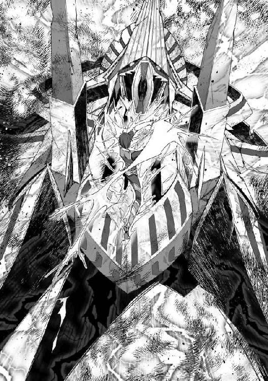
わずか数秒で、俺はフェンリルを遺跡の最深部まで押しこんだ。
壁一面に無数のパイプやチューブが血管のようにのたくる、不気味な部屋だ。
「終わりに......させてもらう......っ」
俺はミリファを一閃させた。
魔法剣技ですらない、ただの斬撃が、フェンリルの四肢をあっさりと切断する。
「そのまま眠れ──天血竜牙！」
さらに放った一撃が、フェンリルの中枢部を貫いた──。
第四章 女神様のクエスト
ぐおお......ぉぉ......ん............っ..................！
弱々しい咆哮とともに、フェンリルの巨体が倒れ伏した。
中枢部を炎の魔法剣で破壊したためか、立ち上がってこられないようだ。
万が一の反撃に備え、俺は小剣を構え続ける。こうやって剣を構えているだけで──いや、呼吸をするだけでも、気が遠のきそうな激痛が走っていた。
身体強化、第三解放、超絶起動形態。
ミリファの言う通り、俺にはまだ早すぎる力だったのか。
「リアン様！」
少し遅れてミーナたちが到着した。
「な、なんだ、これ......お前、一瞬で魔導兵器を、こんな......！」
シルヴィアが驚きを通り越して、呆然とした顔で俺を見た。
「ここでなら......イングリットを治せるのか......？」
込み上げる痛みをこらえ、口早にたずねる俺。
イングリットはマリーが抱えていた。
顔色が真っ青だし、息も絶え絶えだ。胸元では衣装を透かして、あの紋章が不気味な明滅を繰り返している。
「ここに魔力を遮断する装置があるはずだ。オレが操作してみる」
シルヴィアが進み出た。
このメンバーの中で魔法に一番詳しいのは、当然彼女だろう。任せることにした。
もちろん、フェンリルの逆襲に備えて警戒は怠らない。
俺は油断なくミリファを構え続ける。
シルヴィアが壁際まで歩み寄り、何かの呪文を唱えた。壁の一部がスライドし、スクリーンパネルと機械的な制御盤が現れる。
「制御装置は......これか。ギムル帝国で見た遺跡と同じ形式だな......これなら、なんとか......」
シルヴィアはぶつぶつ言いながら、コンソールのボタンを操作していた。
「魔力遮断......効果範囲最大......出力全開稼働......」
つぶやきとともに、スクリーンが淡く光り出す。
その光が波紋のように広がった。
これは──!?
俺の全身から力が抜けていく。
体中を駆け巡っていた激痛が、噓のように消失した。
いや、違う。身体強化の効果が切れたんだ。
おそらくは遺跡の装置によって、この場の魔力がすべて消え失せたことで──。
同時に、すさまじい脱力感が襲いかかった。
「ううっ......」
立っていられず、俺はその場にへたりこむ。たぶん身体強化が解けた反動だろう。さすがに、今までとは比較にならないほど強烈だった。
「......うぅ......は、あぅ......」
苦悶に歪んでいたイングリットの顔が、みるみるうちに穏やかな表情へと変わっていく。
「よし、魔力の遮断に成功したぞ」
シルヴィアがこっちを振り返った。
「イングリットの様子はどうだ？」
「体内で暴走していた魔力が落ち着いたようです」
と、答えるミーナ。
「よかった、イングリットさん......」
ホッと安堵した顔に涙を浮かべてつぶやく。
マリーも同じく泣きそうな顔で安堵の微笑を浮かべていた。
とりあえず一段落、ってところか。
後はフェンリルの封印作業だな。
そう思って、もう一度シルヴィアに視線を向けようとしたとき──、
「えっ......!?」
......唐突に、それは現れた。
俺の前方に広がる、黒い何か──黒よりもなお黒い、底なしの虚無。
そうとしか言えない、何かが。
一瞬にしてそれは俺を飲みこみ──。
気が付くと、俺は見知らぬ広間にいた。あいかわらず立ち上がることもできず、へたりこんだままだ。
「どこだ、ここは......!?」
周囲に立ち並ぶ、美しい彫刻がなされた柱群。どこかギリシャの古代神殿を思わせる、巨大な広間。少なくとも、さっきまでいた遺跡の中じゃない。
「久しぶりね──今はリアンくんだったかしら」
前方から歩いてきたのは、一人の女性だった。
外見的には二十代くらいだろうか。足元まで届く長い桃色の髪に、神秘的な紫色の瞳。ゆったりとした白い衣装は、ギリシャ神話の女神を連想させた。
「まさか、女神様......？」
「転生の儀式以来ね」
ばさり、と彼女の背から生えた白い翼が広がった。
俺が前世の日本から異世界へと転生する際、その儀式をしてくれた愛の女神──エルシャータに間違いないようだ。
「随分と消耗しているみたいね。軽く回復の奇跡をかけてあげるわ」
エルシャータは俺の額に指先を当て、短く何事かを唱えた。
とたんに全身の脱力感が噓のように消え失せる。
「あ、楽になった......」
俺はゆっくりと立ち上がった。
「ここは私の神殿。愛の女神の聖域よ」
と、エルシャータ。
「空間転移でここまで来てもらったの」
「空間転移......？」
「魔導兵器に封印の呪陣、そして第三解放まで進んだ魔法剣技──強大な力が三つもぶつかり合った影響で、空間に大きなひずみが生じた......それを利用して、私があなたを呼び寄せたの」
エルシャータが説明する。
「神々が人間の世界に干渉するには、いくつものルールがあるの。神は万能だけど、それを好き勝手に振るうことはできない──だから、あなたたちの戦いの余波を利用させてもらったのよ」
分かったような分からんような。
いや、そんなことよりも──。
「あの、俺......向こうに仲間を残していて、すぐに戻らないと──」
「大丈夫よ。あなたが異空間に飲みこまれた直後の時間軸に戻してあげるから」
エルシャータが微笑む。
「それに体を休めないと。身体強化、第三解放まで使った反動が体を蝕んでいるわよ。自分では気づいていないかもしれないけれど。ここで少し静養しなさい」
「......分かりました」
ここはお言葉に甘えることにするか。回復してもらったとはいえ、まだ十分じゃないかもしれない。向こうに戻ったとたん、フェンリルとの第二ラウンドが始まらないとも限らないし、できるだけ回復した状態にしておきたいからな。
「......ふーん？」
ふいにエルシャータが顔を近づけてきた。
神秘的な紫色の瞳で、しげしげと俺を見つめる。
「な、なんですか......？」
至近距離にある女神様の美貌にドギマギしてしまう。
鼻先に甘い香りが漂ってきた。下腹がゾクゾクするような強烈なフェロモンを感じる。
「ふふ、リアンくんも転生先の世界で随分と経験を積んだみたいじゃない。再会した記念に楽しませてもらおうかしら」
エルシャータが蠱惑的な笑みを浮かべた。
ふうっと甘ったるい息を吹きかけられる。
俺とエルシャータの唇の距離は、わずかに数センチ。キスされるかされないか、くらいの微妙な距離だ。
ますますドギマギしてしまう。
「私が童貞をもらった男の子がどれくらい成長したのか、興味あるし」
そう、彼女は俺にとって『初めての女』である。転生してから、何人もの女の子とエッチしてきたけれど、やっぱり初体験の相手というのは特別だった。
もう一度、エルシャータと──。
たちまち妖しい期待感が膨らんだ。下腹がズキンと疼く。
あのときは一方的に翻弄されるようなエッチだった。でも、今ならこの女神様を少しは蕩かせるようなエッチができるかもしれない。
「せっかくだから、ミリファラーゼにも手伝ってもらおうかしら」
エルシャータが俺が手にした黄金の小剣に視線を向けた。
「へっ？」
いや、ミリファは剣ですけど。
思わずツッコみかけたところで──、
「人化形態」
エルシャータが呪文を唱えた。
同時に、黄金の小剣がまばゆい光を発する。
──って、おいおい、まさか......。
ゆっくりと光が晴れ、すらりとした人影が姿を現す。
凍りつくような美貌をした女の子だった。
腰まで伸びた黄金の髪。釣り目がちの紅の瞳。透けるような白い肌。
エルシャータと同じデザインの白い衣装を身に着けている。肌が透けるほど薄い生地が、ほっそりとしたボディラインを浮き立たせていた。
「お前、ミリファ......か？」
俺は呆然と彼女を見つめた。
「エルシャータ様......？ なぜ私を人の姿に？」
美少女と化したミリファは戸惑った様子だ。
「ミリファラーゼ......いえ、リアンくんに従って、ミリファと呼びましょうか。あなたも一緒に加わりなさい」
「......エルシャータ様の仰せとあらば」
ミリファが恭しくうなずいた。
「失礼します、リアン様」
と、俺の元に歩み寄ると、いきなり跪いた。
「今日は戦闘ではなく、性での奉仕ですね」
「お、おい、ミリファ......？」
俺の剣であり、相棒だったミリファが、今はとびっきりの美少女として目の前にいる。
正直、驚きと戸惑いが大きくて気持ちが整理できない。
「不思議ですね。人の姿でリアン様と向かい合っていると......なんだか胸が熱くて、ドキドキして......」
つぶやくミリファ。その恥じらいが妙に可愛らしくて、ドキドキする。
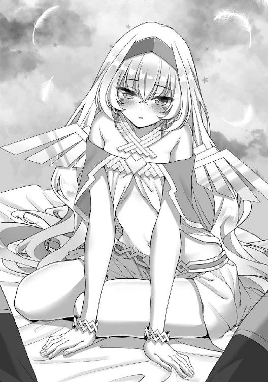
ミリファはズボンの上からふうっと息を吹きかけ、唇を近づけてきた。
「初めてで不慣れですが、一生懸命ご奉仕させていただきます」
ちゅっ、と音を立てて、ミリファの唇が俺の股間に触れた。
布地越しにも感じられるほど、熱く柔らかな唇。
金属でできた剣なんかじゃない。それは──紛れもなく女の子の唇の感触だった。
「うう、ぐぅ......ぅ」
心地のよい圧力とかすかな摩擦が混じり合い、肉棒に甘い痺れが走る。
ちゅっ、ちゅっ、とズボンの布地を通して、ミリファは何度も俺の股間にキスを浴びせた。そのたびに走る刺激で、海綿体に熱い血潮が流れこむ。勃起状態になったそこがズボンの股間にテントを張らせた。
「リアン様、直接触れても......よろしいですか？」
ミリファが上目遣いに俺を見上げ、たずねた。潤んだような瞳はかすかな興奮を孕んでいるのが分かる。
「あ、ああ......！」
俺もまた欲情をみなぎらせながら、力強くうなずいた。
「では、失礼しますね......」
ミリファがズボンと下着をおずおずと下ろし、剝き出しのペニスを露出させる。雄々しく反り返ったそれを、彼女は両手で恭しく捧げ持った。
「ふうぅ......」
かすかな吐息とともに、桜色の唇が赤黒い亀頭に近づいてくる。いよいよ本格的なフェラチオが始まるんだという期待感で、俺は固唾を呑んでその光景を見下ろした。
ちゅ、ぷ......っ、と唾液の水音とともに、ミリファの小さな口が俺のシンボルの先端部を飲みこんだ。
「ふふ、私も一緒に味わわせてもらおうかしら」
淫蕩に微笑んだエルシャータがミリファのそばに跪いた。長い桃色の髪をかき上げ、俺を見上げる女神様。
「エルフとしてのあなたとは初めてね。存分に楽しませてもらうわよ」
ちろり、と敏感な亀頭部に沿ってピンク色の舌を這わせてくる。
「くう、ぅぅぅっ......あふぅ、ああ......」
軽く舐められ、擦られただけで、男根全体に甘い痺れが走り抜けた。
さすがに男の性感のツボを心得ているような、巧みな舌遣いだった。別の生き物のように活発に動く舌肉が亀頭にまとわりつき、絡みつく。たちまちペニスの先端部に電流みたいな快感が広がっていった。
「ミリファ、裏筋の方も......ん、れろぉ......ちゃんと、舐めるの......よ......ちゅぅ」
「裏......筋？」
「ほら、ここ......ちゅ、ぱぁ」
ミリファに指導しながら、女神の舌先がペニスの裏側を這い回った。ゾワゾワと背筋まで震えるような甘痒い刺激が駆け抜ける。
「で、では私も......ん、ちゅ」
エルシャータと入れ替わるようにして、ミリファが見様見真似で裏筋を舐めてきた。さすがに女神様と比べるとぎこちない舌遣いだ。だけど、そんな初々しさが可愛らしくて好ましい。
一方のエルシャータはふたたび亀頭の辺りに熟練した舌遣いを浴びせてきた。先端部の丸みに沿って舌先をツーッとたどらせたかと思えば、鈴口をチロチロとこじってくる。
丹念に裏筋を舐めしゃぶるミリファの舌愛撫と相まって、肉棒に二重の快感刺激が染み渡っていく。じゅぽっ、じゅぷっ、ちゅぱぁぁ、と唾液が飛び散る音が派手に響く。
「くは、あぁぁぁ、うあ、す、すご......ううぅぅっ」
あまりにも気持ちよくて、ともすれば膝から崩れ落ちそうになる。
女神と剣の少女によるＷフェラで下半身全体に間断なく肉悦を送りこまれていく。蕩けるような舌奉仕でペニスが溶けそうだ。二人分の唾液でヌルヌルになった竿を、二本の舌が交互に這い、火照った亀頭を柔らかな唇がこれまた交互に吸う。
「ふふ、リアンくん......オチ×チンが、ビクビクしてる......いつでも出して......ちゅぅぅ、いいのよ......？ はむ、んんっ、む、ちゅぅぅぅぅ、ちゅぱぁぁっ」
どこか挑発的に微笑むエルシャータ。
「リアン様、気持ちい......ん、む......です、か......？ 私たちの奉仕で、たくさん快感を得て......くださ......ちゅ、ぱ......ぁ、む」
一方のミリファは緊張からか、表情こそ硬いものの、赤い瞳には俺を思いやるような優しい光が宿っていた。
対照的な二人の奉仕が、肉体的な愉悦に加えて精神的な興奮と充足を高めていく。腰の芯が煮えたぎるような射精感は急激に上昇していった。
駄目だ、もう我慢できない──。
この素晴らしい時間をずっと味わっていたいという気持ちとは裏腹に、高まり続ける快感で俺はとうとう限界を迎えた。
「おおおっ、出すぞぉぉぉっ！」
雄たけびを上げて、俺は腰を震わせた。エルシャータとミリファの顔に向けたペニスから大量のザーメンをぶちまける。
「きゃぁぁん、あつぅい」
「ひあぁぁ、リアン様ぁ」
強烈な勢いで飛び出した精液の雨に、女神と神剣の少女はともに悲鳴と嬌声を上げた。
二人の美しい顔が白濁色の粘液に染まっていく様が、なんともエロい。
顔中で精液を受け止めながら、美女と美少女は恍惚とした表情を浮かべていた。
鮮烈な爽快感と煮えたぎるような征服感を同時に満たされ、俺は陶然となりながら気持ちのいい射出を続ける。
どくどくどくっ、どびゅるぅっ、と中々勢いを減じないザーメンシャワーがエルシャータとミリファの顔中をドロドロにしていった。
顔射を終えて、周囲にはプンと生臭い精液の匂いが漂っていた。
「確かあなたには精力絶倫の特性もあったわね。まだまだこれくらいじゃ収まりがつかないでしょう？」
ザーメンの匂いをたっぷりと吸いこみながら、エルシャータが艶然とした笑みを浮かべる。
「お楽しみはこれからよ。一緒に気持ちよくなりましょう？」
エルシャータは笑みを深くして、白い衣装を脱ぎ捨てた。均整の取れたグラマラスボディをあらわにする。挑発するように豊かな乳房や尻肉をプルンと揺らしつつ、
「マットを用意したほうがよさそうね」
と、小さく呪文を唱える。
ぽん、と白煙が上がり、大きなマットが出現した。
さすがは神の力、便利なもんだ。
──なんて感心していると、エルシャータが俺をマットの上に押し倒した。
そのまま流れるような動作で俺の上着を脱がせて、全裸に剝いてしまう。
「ミリファ、手伝ってちょうだい。そのローションをリアンくんに塗るの」
ふたたび、ぽん、と白煙が上がり、マットの傍に小瓶が現れた。たぶん、その中には言葉通りローションが入っているんだろう。
「はい、エルシャータ様」
ミリファは従順にうなずき、エルシャータと同じく白い衣装を脱ぎ去った。
こちらは凹凸の少ないスレンダーな体つき。未成熟な体の稜線は柔らかなラインを描き、ため息が出るほど美しい。エルシャータとは対照的に、恥ずかしそうに裸身を揺らしつつ、ミリファは小瓶を手に取った。
「失礼しますね、リアン様」
ふたを開け、甲斐甲斐しくローションを俺の裸身に塗りたくっていく。
「やっぱりエルフだけあって華奢ね。すごく綺麗な体──」
エルシャータは手を止めがちで、うっとりと俺の体を見つめる。
一方のミリファは無言で、淡々と俺の体にローションを塗っていく。
たちまち体のほとんどがヌルヌルのローションまみれになった。
「じゃあ、私が先にやるわ。ミリファはその次に」
手本を見せるように、エルシャータが俺の体にのしかかってきた。むにゅぅぅぅっ、と豊かな乳房が俺の薄い胸板の上でいやらしく潰れる。
それだけでもフル勃起しそうなほどエロい眺めだけれど、
「ん、ふぁぁ、あんっ、これ......擦れて、気持ちいい」
ローションのヌルヌルを利用して、エルシャータは俺の体の上で自分の体を前後にスライドさせてきた。柔らかな肌や弾力たっぷりのおっぱいが俺の肌を心地よく撫でていく。
エルシャータの乳首はすでに硬く尖っていた。女神のほうも俺とのローションプレイで興奮を燃え上がらせているみたいだ。
「ふふ、こんなに硬くして......私のおっぱいで、もっとガチガチにしてあげる」
女神というより小悪魔のような艶笑を浮かべたエルシャータが、俺の下腹部に向かって体を滑らせた。たゆん、と豊かな乳房を両手で持ち上げる。ローションがたっぷり塗られた双丘は強い光沢によって、そのいやらしいフォルムがより強調されていた。
うわ、エロ......い！
ごくりと生唾を飲みこむ。
扇情的に揺れる双乳が、垂直に屹立した俺のモノを挟みこんだ。
むにっ、むに、ぐにぃぃ、みちぃぃぃぃぃぃっ！
内側からパンパンに弾けそうな巨乳で、エルシャータがパイズリを開始する。さらに乳房の狭間から飛び出た亀頭を舌先でくすぐってくる。
「ふあ、あぁ、うは、おぉ、くはぁぁぁぁっ......！」
乳房と舌の複合愛撫に甘痒い痺れが走り抜けた。弾力に満ちあふれた乳丘に挟まれながら、ローションのヌルヌル感を利用した高速のパイズリで摩擦される。鮮烈な快感に俺のモノは限界まで膨張し、脈を打つ。
「遠慮しないで出していいのよ、リアンくん？ まだまだ何度でもできるでしょう？」
艶めいた笑顔でエルシャータが射精を誘う。
その笑みに満ちた色香が俺の限界をあっさりと越えさせた。
「くあぁぁぁっ、ああぁぁっ、イクゥゥゥゥッ！」
叫びながら、むちむちした乳房の狭間で俺は今日二度目の絶頂を迎える。熱いものがほとばしり、エルシャータの巨乳やなだらかな鎖骨、ほっそりとした首筋から美しい顔に至るまで白濁の樹液で汚しつくしたのだった。
「ふふ、私の胸で気持ちよくなってくれて嬉しいわ」
精液まみれになった女神様が艶っぽく微笑む。
「次はミリファの番ね。あなたのマスターを存分に愉しませてあげなさい」
「では、失礼いたします」
エルシャータに促され、ミリファが進み出た。
俺は思わず生唾を飲みこんで、可憐なヌードに見惚れた。
元が剣だからなのか、すらりとした細身はよく引き締まっている。胸は小ぶりで完璧なお椀型のフォルムが美しい。尻丘もまた小さくキュッとしていた。全体的に凹凸の少ないすっきりとしたプロポーションだ。
ミリファはスレンダーな女体を恥ずかしそうにくねらせつつ、エルシャータと同じように俺の体にのしかかってきた。
「ん......っ」
かすかにもらす吐息が、処女らしからぬエロスを漂わせている。
俺はドキドキしながらミリファを見上げた。
柔らかくて、滑らかな肌触りは、とても剣とは思えない。完璧に人間の女の子と同じ触感だった。ほっそりした体を俺の体の上に乗せ、まるでサーフボードで滑るようにスライドする。滑らかな肌がほとんど摩擦感ゼロで擦れ合うのが心地いい。
と、
「ん、ちゅ」
俺の細身の体の上を滑ってきたミリファが、勢いあまって唇を軽く触れさせる。
「も、申し訳ありません、リアン様......口づけするつもりは、ああ」
「謝らなくても......俺は、ミリファとキスできて嬉しいけど」
「そ、そんな、恥ずかしい......」
ミリファの顔がますます赤くなった。
もしかして......照れてる？
「初々しくて可愛いわね。初めてのキスに恥じらうなんて」
エルシャータが微笑ましげにミリファを見つめた。
「これが......キス、なのですね」
ミリファはぼーっとした顔でつぶやく。
「とても甘くて、優しい感触......ああ、リアン様ぁ」
言いながら、ふたたび唇を触れ合わせてくる。
そのキスに応え、俺はミリファの唇をついばんだ。俺を見つめる彼女の顔は、とても元が剣だったとは思えないほど可憐で──。
「んぐぅぅっ!? リ、リアン様......んんっ」
俺は衝動的にミリファの唇をこじ開け、舌を差し入れていた。ただ触れるだけのキスでは満足できなくなったのだ。
ディープキスに戸惑うミリファが可愛らしい。
もっと惑乱させたい。とことんまで乱れさせてみたい。
そう思ったら、欲情が止まらなくなった。
ミリファの舌を自分の舌で絡め取り、唾液を強引に注ぎこむ。
「んく、うぅ、む......」
目を白黒させながらも、剣の乙女は俺の生唾を飲みこんでくれた。そんな健気な作法の一つ一つがいじらしい。
勃起を強めたペニスの先端がミリファの太ももをツンツンと突き、さらに股間を擦る。
「ん、ふぁ......当たって、ます......ぅ」
硬い男根の感触に彼女は上気した顔で喘いだ。
「ああ、擦れて......気持ち、いい......」
ミリファが切なげに腰をよじる。淡い陰毛に彩られた性器が俺の亀頭に吸い着いては擦り、そのたびに、ぐちゅっ、といやらしい音が鳴った。興奮で濡れてきているらしい。
俺は半ば無意識に、半ば意図的に、腰を突き上げた。一種の素股のような状態になり、張り詰めた先端部がミリファの肉溝を擦り立てる。ペニスにジンと甘痒い痺れが断続的に走った。
「ああぁ、ふぅ......ん、ぐ、ぅ......いい......ですぅ......」
ミリファの方もたぶんクレヴァスを摩擦される快感を得ているんだろう。半開きになった唇から、甘ったるい吐息が漏れている。
「ふふ、気持ちよさそうにして。自分のマスターと裸で触れ合うのがよほど気持ちいいのね？」
「いやぁ、エルシャータ様ぁ」
悪戯っぽくささやいた女神に、剣の乙女は羞恥の声をもらす。
「いいのよ。あなたたちはパートナーなんだから。全員でもっと気持ちよくなりましょう？」
と、エルシャータがミリファの背後から手を回して、小ぶりな乳房を揉みしだいた。控えめな膨らみがしなやかな指先によっていやらしく潰され、扁平に形を変える。
「ふあぁ、あんっ」
びくん、とミリファが上体をアーチ状に仰け反らせて痙攣した。
その震えが下半身まで連動し、秘所に触れあっている肉棒の先端部へと伝わる。
「くうぅ、ううっ......」
濡れたクレヴァスとの摩擦振動が亀頭にジンと甘い痺れをもたらした。勃起がさらに強まり、二枚の花弁を押す。ぐちゅぅぅぅぅっ、といやらしい水音とともに、ラヴィアが亀頭部にぴったりと吸い着いていた。
もう少し腰を押し上げたら、そのまま胎内に入っていきそうだ。
「さあ、そろそろリアンくんに処女を奪ってもらいなさい」
ミリファのお椀型の胸丘を揉みながら、エルシャータがささやく。
「エルシャータ様......？」
「本当の意味でパートナーとして結ばれるのよ」
女神様の言葉に、どくん、と心臓が高鳴る。
たぶんミリファも同じくらいドキドキしているんだろう。真っ赤な顔でエルシャータを、そして俺を、交互に見つめる。ハアハアと興奮とも緊張ともつかない吐息をもらす桜色の唇が、やけに艶っぽかった。
「怖がる必要はないのよ。リアンくんが優しくしてくれるから......そうよね？」
「ほ、本当にいいのか？」
「マスターが相手なら......私は」
ミリファの顔が、赤い。
「今は剣としてではなく、女として......あなたのお役に立ちたいのです」
そんな健気なことを言われたら、俺も自分を止められなくなる。
エルシャータに背後から抱きかかえられるようにして、ミリファが俺の腰を跨いだ。おそるおそるといった感じで中腰になる。
この段階で、俺のシンボルはフル勃起状態で垂直に屹立していた。はち切れんばかりに膨張したモノを、ミリファがそっとつかむ。
「そうよ。そのまま腰を下ろして。ゆっくりと、ね」
「は、はい、エルシャータ様......」
エルシャータがささやくと、剣の乙女は小さくうなずいた。
「......いきますね、リアン様」
緊張気味に息を吐き出したミリファが、ペニスを自分の秘所にあてがう。こわごわと照準を定めると、少しずつ腰の位置を下げていった。
くちゅ、と湿った音がして、火照った亀頭が濡れた花びらを内部に巻きこむようにして、押し沈んでいった。
「あぐぅぅぅ、ん、はぁぁぁぁ、うぅぅっ！」
ミリファは黄金のロングヘアを振り乱しながら喘いだ。
キツキツの膣孔を俺のペニスが少しずつ拡張して押し進む。ミリファの胎内は未通であることを示すかのように、ひたすら小さく、狭かった。しかもまだ生硬な粘膜は異物である俺のモノを強烈な反発力で押し返してくる。
今までに何人もの処女を相手にしてきたとはいえ、やっぱり最初の開通は大変だ。なかなか肉棒の挿入が進まない。
「大丈夫よ。ほら、力を抜いて」
エルシャータがミリファの両肩を抱き、ゆっくりと腰の位置を下げさせる。女神様のサポートを受け、ジリジリと俺の肉根がミリファの膣孔に埋まり始めた。
「リアン様が、入ってくる......ぅぅぅぅっ」
肉層がみっちりと詰まったようなキツさは、いかにも処女って感じだった。
周囲からギチギチに締めつけてくる粘膜を振りほどくようにして、俺は腰を突き上げた。ずぶ、ずぶ、と少しずつ肉棒が秘洞を進んでいき、やがて一番狭い場所に到達する。
処女膜だと見当をつけた俺は、さらに力を込めて腰を押し上げた。
「んぐぅっ!? リ、リアン様ぁぁっ！」
みちぃ、と襞が軋むような感じで、肉棒がそこを通り抜ける。
同時に結合部からヌルリとしたものがにじみ出した。
ミリファの、破瓜の血だ。
ヌルヌルした血を潤滑油代わりに俺は最奥まで貫いた。
「ん、はぁぁっ......！」
根元まで埋まった瞬間、ミリファが黄金色の髪を振り乱して喘ぐ。
処女を、奪ったんだ。
その実感が喜びと征服感を同時にもたらしてくれた。
俺はミリファと深々とつながっていた。
「痛くないか、ミリファ？」
「は、はい、中が広がったような感覚はありますけど......痛みは別に......ふうぅ」
ミリファは案外平気そうな顔で微笑む。
とはいえ、眉間にキツく皺が寄っているし、俺を心配させまいと我慢しているのかもしれない。
「無理するなよ」
「いえ、本当に平気です。違和感があるだけで......それに、だんだん楽に......ふうっ」
ミリファが微笑みを浮かべてうなずいた。
「リアン様を体の奥で感じます......不思議な感覚......嬉しい、ものですね。この一体感は」
「じゃあ、もっと味わってもいいか？」
俺が微笑み返すと、ミリファは従順にうなずいた。
「存分に。マスター」
俺はミリファの膣孔に深くはめこんだ状態で、腰を前後に揺らした。抜き差しというよりは、ペニスの付け根部分を彼女の秘唇や肉芽に擦りつけるような動きだ。
「あふ、ぅぅ、んっ、擦れて、気持ちいい......です」
ミリファは切なげな吐息とともに遠慮がちな嬌声をもらした。
眉間をきつく寄せて、生まれて初めてのエッチの感触に酔いしれているみたいだ。処女から女へと開花していく瞬間を見ているような至福が、そのまま興奮と欲情に転化する。
俺は少しずつ腰の振動を大きくしていった。
「はあ、ああんっ、い、いい......リアン様、ぁ......」
「俺も、いい......締まる......ぐうぅぅぅっ」
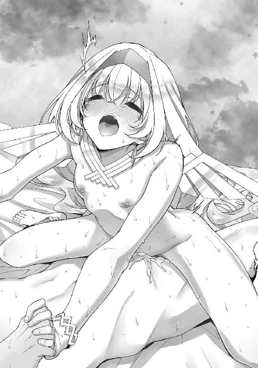
ミリファの快感の高まりに応じて、狭い膣がグイグイと俺のモノを締めつけてくる。
心地よい圧力に下肢の先まで快感の電流が走り抜けていく。
「はぁ、あうんっ、す、すごい、これが......せっく、す......なの......ぉ......!?」
戸惑い混じりの喘ぎをもらし、ミリファが背中を仰け反らせる。
それから反動で脱力したように、俺の胸板に上体を倒した。
「あ、あの、口づけを......してもよろしいですか？」
ミリファが上気した顔で俺を見つめている。
その可憐さに胸がキュンと疼いた。
「ああ、おいで」
俺が優しく微笑みかけると、ミリファはうっとりと顔を寄せてきた。
俺たちの唇が重なる。
「ミリファ──」
夢中になって彼女の甘くて柔らかい唇を吸った。自分の剣と、こんなふうに熱烈なキスを交わしているなんて不思議な気持ちだ。
「二人だけの世界を作っちゃって。なんだか嫉妬してしまうわね」
と、エルシャータが体を寄せてきた。
「ふあぁ、あんっ......あ、し、失礼しました、エルシャータ様......っ」
断続的な嬌声をもらしていたミリファが、ハッと我に返ったように動きを止めた。
「リアン様と一つになれたことが嬉しくて、つい......す、すぐに代わります」
「いいのよ。横取りなんてしないから。中断させてごめんなさい」
愛の女神様は悪戯っぽく微笑み、
「まずはミリファを満足させてあげて。その後は私もお願い、ね？」
「じゃあ、このままイクぞ、ミリファ！」
「は、はい、私も、もうアソコが熱くて、あふぅっ......たまらない、ですぅぅぅっ！」
ミリファが甘ったるい声音で喘ぐ。トロンと蕩けたような表情に漂うエロスが、俺の欲情の限界を越えさせた。
「出すぞぉぉぉぉぉぉっ！」
咆哮とともに俺は深々と突き上げ、熱いたぎりをミリファの膣内にぶちまけた。
「ひあぁぁぁ、あんっ！ リアン様の、熱いの、ドクドクしてるぅぅぅぅぅぅぅっ！」
ミリファも歓声とともに裸身を細かく痙攣させる。たぶんイッてるんだろう。
同時に絶頂に達したことを嬉しく思いながら、俺は最後の一滴まで余さずミリファの胎内に注ぎこんだ。
「ふうっ」
気持ちよかったぁ......と、射精の余韻に浸りつつ、俺は腰をずらして、キツキツの秘孔から肉棒を引き抜いた。ミリファが脱力したようにその場にへたりこむ。
「はあ、はあ、はあ......」
Ｍ字に足を開いたまま、閉じる力もないみたいだ。さっきまで一分の隙もなく閉じられていた縦筋は、洞窟みたいにぽっかりと穴が開いている。その奥にのぞく赤い肉層は、ひく、ひく、と蠢き、白濁色の精液が逆流してこぼれ落ちていた。
「まあ、こんなにたっぷり注いでもらって。羨ましいわね」
エルシャータが淫蕩に笑い、俺の腰に跨ってきた。
放出直後の俺のモノは、精力絶倫の特性を示すようにまだまだ元気だ。フル勃起を保っているそれを、愛の女神は愛おしげに両手で包んだ。
「熱くて、硬い──気持ちよさそう」
チロリと舌で唇をなめすと、エルシャータは己の秘所に俺の先端部をあてがい、腰を沈めた。ヌメヌメした粘膜が蠢きながら、絡みついてくる。処女だったミリファとは一味違う、経験の豊富さを示すような熟れた性器だ。
ぐちゅぅぅぅぅっ、と内部に溜まった蜜を飛び散らしながら、俺のモノはエルシャータの奥深くに飲みこまれた。
「く、ああ......中がウネウネして、気持ちいい......っ！」
「私も気持ちいいわよ、リアンくん。中が広がっちゃうわね......ふうっ、私のオマ×コがあなたの形に変えられちゃいそう」
うっとりつぶやきながら、エルシャータは飢えたように腰を動かし始めた。結合部を中心に腰をローリングさせる。挿入の角度が変わり、変幻自在の圧迫感で俺のモノを締めつけてきた。
さすがに熟練の動きといった感じで、尾てい骨にまで蕩ける肉悦が染み渡ってきた。
「ふああ、ん、あんっ！ これ、イイ！ リアンくん、あなた最高よ......！」
エルシャータは豊かな乳房を弾ませ、ますます腰遣いを激しくする。女神としての聖性と、娼婦のような淫らさが同居した雰囲気にゾクゾクした。
「ううっ、だ、駄目だ、俺もう......っ！」
「いいのよ、イッて！ 私の中に熱いのを注いでぇぇぇっ！」
愛の女神はとどめのように腰を上下に揺らして、肉棒に甘い摩擦を加える。
それが引き金となり、俺の射精感はゲージを振りきった。
「ぐうううっ、出るぅぅぅぅぅっ！」
グイッと腰を突き上げて、エルシャータの最深部に大量の精をほとばしらせる。
「あつぅぅ、いっ！ あんっ、いっぱい出てるっ！ 私もイクゥゥゥゥゥゥゥゥッ！」
大量の中出しを受けて、女神様もまた絶頂まで押し上げられたみたいだ。俺はなおも熱いものを注ぎこみ、エルシャータの胎内いっぱいにザーメンをあふれさせた。
「はあ、はあ、はあ......」
「ふふ、すごい勢いで中に出されて、私もイカされちゃった......よかったわよ、リアンくん」
エルシャータは上体を倒すと、ご褒美のように俺にキスをした。
イカせたとはいえ、ほとんど一方的に射精まで導かれた感が強い。やっぱり愛の女神だけあって、男女の交わりにも長けているんだろう。異世界に来てから、色んな女性をエッチで屈服させてきただけに、ちょっと悔しかった。
「私の中でまだまだ硬いままね。このまま続けましょうか？」
エルシャータの誘いに、俺は力強くうなずく。
──その後も俺はエルシャータと、そしてミリファとも何度となく交わった。
男の性感を知り尽くしたような愛の女神と、男を知ったばかりの初々しい剣の乙女。
それぞれに魅惑的な膣を交互に味わい、俺も二人も目くるめく絶頂を味わった。
最終的に俺はエルシャータとミリファに五発ずつ膣内射精を決めて、ようやく人心地がついたのだった。
濃厚な交わりを終え、俺たちは川の字に寝そべっていた。
俺が真ん中で、エルシャータとミリファが左右からしなだれかかっている格好だ。豊満な女神の裸身も、スレンダーなミリファの裸身も、ともに触れ合っているだけで心地いい。
「ふふ、すっきりしたところで本題に入りましょうか」
エルシャータがゆっくりと上体を起こした。
豊かに実った胸がプルン、と揺れる。しどけなく開いた両足の付け根からは、何発も注ぎこんだザーメンが大量に逆流して、プンと生臭い匂いを放っていた。
ちなみに、ミリファの方も股間から中出し精液を垂れ流している。
我ながら、よくこんなに出したもんだと呆れる量だ。それだけ二人とのエッチが気持ちよかった、ってことだけど。
「え、今のが本題じゃなかったのか？」
てっきり俺とエッチしたくて呼び寄せたのかと思ってた。
「......私だって始終淫らなことばかりを考えているわけじゃないのよ」
不満そうに頰を膨らませるエルシャータ。拗ねたような表情が、ちょっと可愛らしい。
「たまには、神としての仕事のことだってちゃんとやるんだから」
たまには、かよ。
「今から話すことは今後のあなたたちに深くかかわること。心して聞いてほしい」
さっきまでの淫らな姿が噓のように、真摯な口調で語る女神様。
「これはそうね......冒険者風に言うなら、私からあなたへの依頼といったところかしら」
「クエスト......？」
「少し長い話になるわ。場所を移しましょう」
エルシャータに促され、俺たちは着替えてから移動することになった。
さっきまでエッチしていた広間を出ると、ゆるやかなカーブを描く回廊が続いている。
「あなたに見せたいものがあるの。ついてきてちょうだい」
エルシャータに先導され、俺たちは歩き出した。
ミリファはまだ人の姿のままで、俺の傍にぴったりくっついている。
その肌触りも、息遣いも、まぎれもなく女の子のもので──。
しかも、さっきまでエッチしていたせいで、やたらとドギマギしてしまう。元の姿に戻っても、今までみたいに単なる『相棒の剣』として接することができるんだろうか。
「？ どうかなさいましたか、リアン様」
キョトンとミリファが俺を見る。そんな仕草までが、妙に可愛らしい。
「い、いや、なんでも......」
「？？」
ますますキョトンとするミリファ。
「まずは転生システムについて話す必要があるわね」
と、そんな空気を打ち破るように、エルシャータが語りだした。
俺はドギマギを振り払い、意識を戻した。
そうだ、俺もそのシステムによってエルフとして生まれ変わったんだっけ。
「そもそも、転生とはどういうものか分かる？」
「え、生まれ変わること......ですよね？」
「じゃあ、なぜそんなことをする必要があるのかしら？」
「えーっと、それは......」
重ねての問いかけに、俺は言葉に詰まった。
エルシャータは優しく微笑み、
「転生とは魂の輪廻のことなの。何度も生を繰り返すことで、人の魂は少しずつ成長を繰り返す。そうやって成長した魂たちが、人の世界をより良いものへと変えていく。それこそが輪廻転生の目的であり、存在意義ね。
そんな世界の成長をより加速させるために──人間の世界により大きな変化を与えるために、超古代文明はあるシステムを生み出した」
「システム......？」
エルシャータはにっこりとうなずき、
「超古代文明は魔法のシステムを解き明かしていたの。魔法って、そもそもどういう仕組みで働いているものだと思う？」
「えーっと......」
ふたたび言葉に詰まる俺。
普段の戦いではミリファのサポートで魔法剣技を使っているし、『こういうイメージを持てば魔法を使える』っていう感覚はある。だけど、魔法の具体的な仕組みということになると、その理屈はさっぱり分からない......というのが正直なところだった。
「......ふふ、少し意地悪だったかしら。こんなことを人間に説明するのは初めてだから、つい......魔法とは超常の領域よ。神や悪魔の力に踏みこみ、その力を借りて行使するもの」
「神や悪魔の......」
「つまり超古代文明は天界や魔界とのアクセス方法を解き明かしたのよ。そしてその絶大な力を借りて、地上にあらゆるものを生み出した──」
と、エルシャータ。
「でもその力はあまりにも強大すぎて、彼らにも制御しきれなかったの。結局、彼らは強すぎる力ゆえに自滅してしまった......」
さっき戦ったフェンリルはその名残りの一つというわけか。
今までのクエストで戦った魔物や魔族と比べても、桁違いに強力だった。
超古代文明の世界では、あんなものがゴロゴロいたんだろうか。だとすれば、確かに──世界を滅ぼしかねない強大すぎる力である。
「少し話が逸れたわね。転生システムの話に戻すわ」
エルシャータが言った。
「超古代文明の魔法使いの中には、悠久の時を生き、神に匹敵するほどの叡智を手に入れた者がいたの。その彼が生み出したものこそ、転生システム。無数に存在する世界からランダムに魂を選び出し、神を召喚して転生させる。そして、その際には『特典』を与える──というものよ」
「特典......？」
「特性を持って転生することができる──そう、あなたもその恩恵に与っているわね」
転生の儀式のことを思い出した。
俺は五つの特性を選んで、今の自分に生まれ変わったんだ。
「人よりも優れた力を持って転生した者が、世界により大きな変化をもたらしていく──神々の目的にも合致するから、私たちはこのシステムを利用して転生者を生み出しているの......着いたわ」
回廊の突き当たりにある扉を開け、俺たちは部屋の中に入った。
さっきの広間と同じくらい広大なホールだ。
「なんだ、これ......？」
俺の眼前には巨大な石碑がそびえていた。
──アリス ドロテア ワイアット メルキオール ラズィーサ ナターシャ ベイク アレクサンドラ ゴルドバ カストル ハンニバル レドネ リアン アルベリッヒ ジークフェルト スィーダー バルムンク グリムワルド──
その他にも、石碑には数十数百という名前が刻まれている。
俺の名前も、そこにあった。
「過去、現在、そして未来──あらゆる時間軸に転生し、あるいはこれから転生していく者の名前が刻まれているのよ」
そうエルシャータが説明した。
「彼らがたどった道は様々よ。ある者は英雄に、またある者は王になった。平穏に暮らした者もいれば、戦乱の中で果てた者もいる──本来、彼らが転生先の世界で何を為したとしても、私たちは不干渉なの。それが神々の世界のルール」
言いながらエルシャータが石碑に触れると、すべての名前がうっすらと光りだす。
「だけど、彼は──あまりにも悪意と欲望と支配欲と、そして破壊の本能に満ちていた。見過ごせないほどに」
「彼......？」
「──闇の妖精のレドネ」
常に笑みを絶やさなかったエルシャータが、初めて険しい表情を浮かべた。
レドネ──ちょうど、俺のすぐ前に刻まれた名前が、赤黒い光を放ちはじめる。
女みたいな名前だけど、『彼』ってことは男なんだろう。
「前世の彼は最悪の殺人鬼だった。そして転生した後も、前世の嗜好そのままに破壊と殺戮を繰り返しているの」
「......そんな物騒な奴をなんで転生させたんですか」
思わず憮然となる俺。
「システムが選び出す魂はランダムなの。私たちで選り好みはできないわ。善なる者が新たな生でより良きことをするのも自由なら、悪なる者が次なる生で悪行を繰り返すのもまた自由。でも」
エルシャータは苦渋の表情で首を左右に振った。
「彼の魔力は強大すぎる。そして最悪の魔剣を携え、一つの国でさえ個人で破壊できるレベルに成長しているの──彼を、倒してほしい」
「俺に......？」
つぶやいてから、俺はジト目で女神様を見た。
「そんな悪い奴がいるなら、神様が直接やっつけてくれれば手っ取り早いんですけど──」
「さっきも言ったけれど、神は基本的に人間の世界に干渉できないわ」
そのツッコミにエルシャータは真面目な顔で首を振る。
「その悪人を倒すことで、別の神の利益になることもあるし、不利益になることもある。神々の中には地上を我がものにしようと狙っている者も少なくないわ。お互いに牽制して、うかつな手出しはできないの」
......神様の世界って、けっこうドロドロした権力争いとかしてるんだな。まるで人間みたいだ。
「逆ね。人は神の現身。人のしていることと神のしていることに大差はないのよ。根本的には、ね。だから相争い、愛し、憎み合う──」
急に深そうなことを言いだすエルシャータ。とてもさっきまで俺の腰の上でアンアン喘いでいた女神様とは思えない。
「それはそれ、これはこれでしょう」
あ、俺の心を読めるんだっけ、エルシャータって。
「心を読んでいるんじゃなくて、あなたの顔を見ていれば、だいたい思っていることが推測できるだけよ」
ふふ、とエルシャータが悪戯っぽく笑った。
「ともあれ、それが私からのクエストよ。神々でも意見は割れているわ。たとえどれだけの殺戮と破壊が繰り広げられようと、それもまた変革の一つ。神が手出しすべきではない、と。だから私も、あるいは罰せられるかもしれない。それでもあなたに頼みたいの。この地上の、愛と平和を守るために」
愛と平和、なんて大仰な台詞だけど、彼女は神様だもんな......。
「わざわざ回りくどい真似をして俺を呼び寄せたのは、それを頼むために──」
つぶやいたところで、ハッと気づく。
まさか、と思った。
でも、もしかしてフェンリルを起動させたことさえ、あるいは──。
「どこまでが、女神様の計画なんですか......？」
俺はエルシャータをまじまじと見つめる。
「さあ、どこまでかしらね」
女神様は、ただ悠然と微笑むのみ。
紫の瞳に宿る光は、あまりにも深くて──その真意の片鱗すらつかめなかった。
「レドネは強敵だけれど、あなたなら勝てるかもしれない──いえ、きっと勝てる。私はそう信じているわ。どうかしら、リアンくん？」
「分かりました。そんな物騒な奴を野放しにもできないし、やってみます」
普段のクエストと同じく、『まあ、なんとかなるだろう』といった感覚だ。
「で、そのレドネってやつはどこにいるんですか？」
「行動が気まぐれで、今一つ動向が読めないの。ただあなたの仲間にレドネと縁のある女の子がいるから、彼女に──イングリットさんに聞いたほうがいいかもしれないわね」
と、エルシャータ。
「えっ、イングリットが......？」
「ところで、冒険者のクエストには報酬が出るのよね。引き受けてくれたから、あなたが望むものを与えるわ」
エルシャータが微笑んだ。
「俺の望むもの......」
急に言われても、思いつかないな。
迷ったところで、ピンときた。
「あ、そうだ。そのイングリットが魔紋の影響で苦しんでるんです。治すことはできますか？」
「あら、この世の王にでも、栄耀栄華でもなんでも叶えてあげようと思ったのに」
女神様は驚いたような、それでいてどこか嬉しそうな笑みを浮かべた。
「神の報酬を、自分ではなく仲間の女の子のために使うの？」
「その、これくらいしか思いつかなくて......仲間だし」
「ふふ、少し妬けるわね。でも、あなたのような人と愛を交わすことができてよかったわ。叶うならいつかまた、身も心も重ね合いましょう？」
エルシャータの笑みが深くなった。
「では......そうね、あなたの三人の仲間の益になるものを授けましょう。私のクエストの報酬よ。さあ、受け取りなさい」
と、右手を差し出すエルシャータ。
手のひらには白、赤、青の三色の光の玉があった。
光の玉は中空を舞い、俺の手の中に吸いこまれる。
「あなたの仲間の武具よ。レドネは神の加護を受けていて、その力で居城に結界を張っているの。結界を通ることができるのは、同種の力──つまり、神の武具を持つ者だけよ」
「神の武具を......」
「ミリファラーゼを持つあなたと、同じく神の武具を持ったミーナ、ローズマリー、イングリット......その四人で決戦を挑むといいわ。もっとも、それを武具として使いこなすには彼女たちも相応の成長が必要だけれど」
「......なるほど」
「そしてもう一つ、魔紋を解除するための道具も授けましょう」
次に渡されたのは、光り輝く呪符だった。
「これは、ちょっと特殊な使い方をするの。まずあなたとイングリットが──」
と、説明するエルシャータ。
「......そんなことをするんですか」
それを聞いて、俺は戸惑いを隠せなかった。
ちょっと本人に説明しづらいな。効果を発揮するために、アレが必要とは。
とはいえ、彼女のためには実行したほうがいいよな、やっぱり。
「もうちょっと他に方法はなかったんですか......？」
「あら、私は愛の女神だもの。私が授ける宝具はすべて人の『愛』が絡むものばかりよ。ミリファだって......ね？」
「わ、私は、ただの剣であって、それ以上の感情をマスターに対して、そんな......えっと」
ミリファは恥じらったように、細身の体をくねらせる。
「話はここまでね。そろそろ向こうに戻ってもらうけど......いいかしら？」
「はい、お願いします」
突然の召喚から再会エッチにミリファの擬人化、さらにダークエルフ討伐クエストまで──短い時間に色々とあったけれど。
とりあえずは、皆の元に戻らないとな。
「では、またいつか会いましょう。今度はもっともっと気持ちのいいエッチをしましょ？」
エルシャータが艶めいた微笑を浮かべ、身を乗り出して俺にキスをする。
甘く蕩けるような感触とともに、俺の意識はゆっくりと薄れていった。
視界がぼやけ、やがて──。
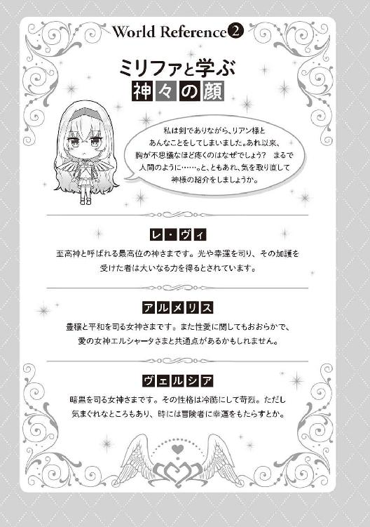
第五章 帰還、そして決戦へ
ｓｉｄｅ レドネ・アーヴァイン
十体の魔族が取り囲んでいるのは、小柄な少年だった。
冴え冴えとした月光を思わせる銀色の髪と浅黒い肌、ナイフのように尖った耳。そして、凍りつくような美貌。
闇の妖精と呼ばれる種族だ。
「たかがダークエルフごときが俺たちに刃向うつもりか？」
「ふっ、その綺麗な顔を恐怖で歪めてやるのも一興か」
ダークエルフの少年──レドネ・アーヴァインは十対一という戦力差にもまったく動じることなく、平然と魔族たちを見つめていた。
最近は、ここオーキス王国領内の魔物がめっきり増えた。散歩がてらにそれらを狩るのは、レドネの日課だ。
今やここは──彼の国なのだから。
「君たちは口のきき方を知らないようだね。僕に刃向う者は、神であろうと魔王であろうと──容赦はしない」
レドネの口元に酷薄な笑みが浮かんだ。
前世で稀代の殺人鬼として名を馳せた彼の殺気や威圧感は、ダークエルフとして転生した今もまったく損なわれていない。
むしろ絶世の美少年というルックスとのギャップで、より凄みを増したかもしれない。
「こいつ......っ」
さすがの魔族も、気圧されたように後ずさった。
気づいたのだろう。レドネが決して『たかがダークエルフごとき』ではないということに。
「だがもう遅い。君たちはここで死ぬ。僕が──殺す」
彼が転生する際に得た特性は、それこそ魔族ごときなど歯牙にもかけない。
最強にして、無敵。
常勝にして、不敗。
その力を今から存分に解き放つことができる──その喜びで、レドネは笑みを深めた。
「いくぞ、我が剣ギルフェラーゼ」
相棒である黒い小剣に呼びかけた。
「承知しました、我が主」
剣が、渋みのある中年男性を思わせる電子音声で答える。
柄の部分に浮かぶディスプレイ表示が『Ｓｔａｎｄｉｎｇ ｂｙ』から『Ａｔｔａｃｋｍｏｄｅ』へと変わった。
この異世界に転生して二年。彼が信頼できる存在は、転生する際にナビゲーターとして授かったこの魔剣だけである。
他のすべては、自身の欲望を満たす道具か、あるいは──。
「敵、だ」
レドネの端正な顔に禍々しい殺意がにじんだ。
一瞬の後、レドネの周囲には十の屍が横たわっていた。
「物足りない相手だけど、殺す快感だけは味わえたかな」
「そもそも、殺さなくても『魔物の王』の特性で、魔族を配下に置くこともできましょう？」
ギルフェが言った。
『魔物の王』──転生の際に身に着けた、五つの特性の一つだ。これにより、レドネはあらゆる魔獣や魔族をその支配下に置き、しもべとして操ることができるのだった。
「今日は殺したい気分だったんだよ。配下の魔物もかなりの数がいるから、それほど補充しなくてもいいだろう」
つぶやいたところで、レドネは自身が勃起していることに気づいた。
魔族たちを斬殺しながら、すっかり昂ぶってしまったようだ。腰の芯が甘く疼く。
「ふふ、城に帰ったら、牝奴隷どもを相手に──存分に発散することにしよう」
オーキス王城──『神の加護』を持つレドネにより、そこは彼に害意を持つ者は入れない結界が敷かれている。いわば絶対不可侵の居城だ。
その最奥にある謁見の間は、レドネにとってお気に入りの伽の場所だった。
大国ではないが古い歴史を持つこの国の中で、もっとも高貴にして神聖な場所。
そこで爛れた欲情に浸るのは、たまらなく心地よかった。貴いものを汚しているという征服感に思う存分浸ることができる。
今も、玉座に腰掛けたレドネは一人の美しい乙女を対面座位で貫いている。
「ふああ、あんっ、素敵、ですぅ、レドネ様ぁ！」
流麗な金髪を振り乱し、白いドレス姿で喘いでいるのは、この国の第一王女ソフィアである。
いや、第一王女『だった』というべきか。
すでにこの国はレドネが征服し、実質的に新たな王として君臨しているのだから。
そんな征服者である彼に対し、ソフィアはうっとりした視線を向けている。
別に魅了や洗脳のたぐいを使ったわけではない。ただ彼の絶対的な力に、身も心も屈服したのだ。絶対的な──悪の魅力に。
「ああ、レドネ様......ぁ」
甘い吐息混じりに、ソフィアが彼の唇に吸い着いてきた。
元王女からの情熱的なキスに応え、レドネは力を込めて彼女の最奥を突き上げる。
ぐちゅっ、ぐちゅっ、と結合部から愛液の飛沫がこぼれ、荘厳な謁見の間に甘酸っぱい淫らな香りが漂った。舌を絡め、唾液を啜り、ソフィアの清純な唇をレドネは思うさま吸い続けた。
うっとりと頰を赤らめた王女は可憐そのものだ。この国を滅ぼしたときには『父の仇！』と憎悪を向けていた彼女が、ここまで堕ちたことに満足感を覚える。
レドネは濃厚なキスと激しいピストンを続けながら、器用にドレスの胸元を引き下ろして裸の乳房を露出させた。
「やぁぁ、恥ずかしいです、レドネ様ぁ......」
軽く揉みしだくと、小ぶりな胸丘は年齢にふさわしい弾力で彼の指先を押し返してきた。
「こんなに綺麗な胸なのに、恥ずかしいことなんてあるものか。むしろ積極的に見せるべきだよ」
レドネは笑いながらキスを解き、上体を屈めた。
ぷる、ぷる、と瑞々しく揺れる白い乳房に口づけする。
それから、おもむろに強く嚙みついた。歯形がつくほどに、強く。
「ん、ふあぁぁ、あうんっ」
痛みを伴う愛咬すらも、今のソフィアにとっては快感らしい。処女を失って──もちろん奪ったのはレドネだ──まだ一月も経っていないというのに、大した成長ぶりだと内心で苦笑する。
「レドネ様、私にもお情けを......ふあ、あんっ！」
はしたなく自慰をしながら足元にすがりついてきたのは、彼女の母──かつての王妃だ。
豪奢なドレスを通して、三十半ばの成熟した体つきに視線を向ける。すでに幾度となく抱いてやったその体は、娘に比べて格段に豊満だということを、レドネはよく知っていた。
「そう急くな。順番に犯してやるからさ。まずはソフィアからだ」
レドネは片手で王妃の体を軽々と抱き上げ、濃厚なディープキスを与えると、王女へのピストンを速めた。彼が犯すまで処女だった秘孔も、今やすっかり開発され、抜き差しするたびに濡れた粘膜が絡みついてくる。
「くくく、まず一発目だ。しっかり受け止めて、僕の子を孕むんだぞ」
熱い欲望のたぎりを注ぎこむと、王女はか細い嬌声を上げて脱力した。くたっと力が抜けた上体を抱きしめ、口づけを交わしながら情事の余韻に浸る。それから王女の体を側に横たえた。
「次はお前の番だね。いつものようにおねだりするんだ、王妃」
「は、はい、レドネ様......どうか、このエリザベートのいやらしいオマ×コにレドネ様のたくましいオチ×ポを入れてくださいませ」
王妃はレドネの足元に跪き、床に額を擦りつけた。一国の王妃ともあろうものが、躊躇なく淫語を交え、レドネに情交を懇願する。
「じゃあ、僕のチ×ポを清めろ。お前の娘のオマ×コでドロドロに汚れてしまったからね」
「はい、喜んで」
エリザベート王妃はためらいのそぶりも見せず、嬉々として肉棒にむしゃぶりつく。
「んちゅ、むぅ......はむ、れろぉ......」
お掃除フェラはさすがに三十代らしい熟練した舌遣いだった。ねっとりした舌肉が射精直後のペニスに絡みつき、新たな刺激感とともにふたたび勃起を強めていく。
娘である王女ソフィアが垂れ流した愛液とレドネの精液の混じり合った淫らな樹液を、美味しそうにしゃぶるエリザベート。
「いいだろう。僕に跨れ。貫いてやる」
唯々諾々と従い、レドネの腰に跨った王妃は、自らショーツを脱いでスカートをまくった。すでに勃起を取り戻した肉槍で、一息に貫いてやる。
「ふあぁ、あふ、ぉぉぉぉ、んっ！」
下品とさえいえる派手な嬌声を上げて、エリザベートは背中を仰け反らせる。
夫の仇と娘の情交を見て、すでに十分高まっていたのだろう。挿入しただけで軽く絶頂を迎えるとは、とんだ淫乱王妃だとレドネは内心で揶揄する。
ほっそりとした腰を両手でつかむと、さっそく抽送に移った。
処女を失って間もない王女と違い、柔らかく蕩けるような膣肉はダークエルフの男根を歓迎するようにまとわりついてきた。絡みついては離れ、吸い着いては締めつける粘膜の心地を存分に味わいつつ、レドネは緩急をつけたピストンを見舞う。
「あふ、ひぃぃぃぃ、んっ！ レドネ様、レドネ様ぁっ！」
「ははははははは、夫の仇に犯されて、そんなに嬉しいのか？」
「ああんっ、言わないでっ！ 私にはもうレドネ様しか......あうんっ！」
王妃は彼の首に両手を回してすがりついた。
レドネが突くたびに、オルガスムスの波が込み上げてくるらしい。
「よし、そろそろ出してやるぞ。娘ともども、僕の子を孕むがいい」
「はい、くださいっ！ 子種を、レドネ様の精を、エリザベートのはしたないオマ×コにドクドク注いでえぇぇぇぇっ！」
ためらいもなく卑語を叫ぶ王妃の最奥に、レドネはありったけの精液を注ぎこんでやった。
間を置かない連続の膣内射精など、『精力絶倫』の特性を備えている彼にとっては造作もないことだった。興が乗れば、ここからさらに追加で十回でも二十回でも射精できるだろう。
「さて、次だ」
先端から精液の残滓を滴らせるペニスを揺らしつつ、レドネは背後を振り返った。
まっすぐ続く赤絨毯の上に、十人の女が全裸で四つん這いになって並び、純白の尻を掲げている。いずれもこの国の貴族令嬢や宮廷魔法使い、大神官の娘など高貴な身分から選りすぐった美女、美少女たちだ。
全員が処女だった。
「ああ、レドネ様......どうか、私の処女をもらってください」
「レドネ様ぁ、わたしを女にしてくださいませ......」
「レドネ様、あたしもぉ......」
トロンと潤んだような瞳がいっせいに向けられる。
レドネが示してきた圧倒的な武力と魔力、そして魔性の美貌に超然とした雰囲気──それらすべてが強烈なカリスマとなり、彼女たちを魅了しているのだった。
「ふふふ、ではいただくよ。君たちの純潔を僕に捧げるがいい」
レドネは悦に入りながら、彼女たちの元まで歩み寄り、一番端の少女の尻を抱えた。そのままズブリと貫いていく。生娘に対する遠慮や容赦など一片もなかった。
「ひあ、ぁぁぁ......」
挿入した瞬間、乙女は切なげな悲鳴を上げた。
狭苦しい膣の感触は、処女ならではのものだ。
今まで一度も男を受け入れたことのない場所に、自分だけの道をつけていく征服感。そして、それを喜んで迎え入れる乙女を見つめていると、支配欲がこのうえなく満たされる。
力ずくで犯したのではない。彼女たちは自らの意志でレドネに、女としてもっとも大切なものを捧げてくれたのである。
「ふ......んっ」
腹の底に力を入れ、レドネは処女膜を完全に引き裂いた。
ずぶぅぅぅぅっ、と膣奥まで太い男根が埋まりこむ。バックで犯してやると、最初は多少苦しげにしていた少女も、やがて控えめながら歓喜の声をもらし始めた。
そうやって乙女たちを次々に貫いていく。存分に責め抜いたところで、
「くくく！ そら、出してやるぞ！」
レドネは頃合いと見て、十人目の女の膣に大量の熱いたぎりを注ぎこむ。ペニスから腰の芯にまで突き抜ける甘い痺れに、ダークエルフの少年は酔いしれた。
──どくんっ！
同時に、胸の奥で熱い脈動が走った。
「来たぞ......来たぞ......！」
強大な魔力がレドネの全身を駆け巡る。
女を犯し、精を注ぎこみ、体の奥の奥まで支配してやった証を刻む。それによって、彼の魔力はどこまでも増大していく。
従えた女の数だけ、犯した女の数だけ──レドネは無限に強くなるのだ。
『至高の支配者』。これもまた転生の際に獲得した特性だった。
「僕は支配する女の数だけ強さを増す。ふふ、また一段と魔力が強まったよ」
「──随分とお楽しみのようだな」
ふいに頭上から声が響く。
この声には覚えがあった。そう、レドネがこの世界に転生してきた際に、その儀式を執り行った神──至高神だ。
「本来なら神が転生後の人間と接触するのはご法度だが、今回は例外だ。愛の女神が担当する転生体にお前を討つよう命じたようだ。気を付けろ」
「僕を討つ？ へえ......」
レドネが微笑んだ。
「名はリアン・ティアレード。人間からエルフ族に転生した少年だ。そして──お前と同じく『最強の魔法剣士』の特性を持っている」
「僕と同じく最強......か。それは面白そうだ」
何せ転生してからというもの、彼は退屈しきっていた。
力のままに暴れ、欲望のままに女を犯す。
そんな日々も繰り返せば、次第に刺激が色あせていく。
彼がもっとも欲しているのは、闘争だった。
最強である自分に力のすべてをぶつけさせてくれるような強敵。
もしも彼が──リアン・ティアレードがそれに値する相手なら。
「早く会いたいよ、リアンくん......！」
※
気が付けば、元の場所にいた。
いつの間にかミリファも元の剣に戻り、俺の手の中にある。
「リアン様！」
ミーナが真っ先に駆け寄ってきた。
「突然いなくなるから心配しました。よかった、ご無事で......」
「ああ、ええと、ここのシステムの影響なのかな、変な空間に飲みこまれたんだけど......ええと、適当に魔法剣技を使ったら戻ってこられたよ」
我ながら適当な言い訳だった。
「それよりイングリットは大丈夫なのか？ それにフェンリルは──」
「いずれも問題ない」
説明するシルヴィア。
「遺跡のシステムを起動させてフェンリルの魔力供給を断っておいた。今のこいつは無力だ。まあ、すでにお前の攻撃でボロボロだったから、実質もう無力化されてたんだけどな」
と、苦笑する。
フェンリルに視線を向けると、漆黒の巨体は光の檻のようなものに覆われていた。
結界魔法の類だろうか。完全に動きを封じているみたいだ。
「で、イングリットの方も同じシステムで魔紋の暴走は収まった。そっちの僧侶が回復呪文をかけ続けたおかげで持ち直した」
「......もう大丈夫」
見れば、イングリットはマリーに支えられながら立っていた。体力は消耗しているみたいだけど、さっきまでと違って落ち着いた様子だ。
とりあえず無事であることにホッとする。
「結局、君にほとんどを委ねてしまったな。面目ない」
クローディアが頭を下げる。
「そんなことないって。俺が地下に落とされている間は、皆頑張ってたんだろ。今回のクエストは皆で成し遂げたんだと思うぞ」
と、フォローしておく。
「......ありがとう」
クローディアがはにかんだ笑みを浮かべた。
「とりあえず、これで一段落ってとこか」
「ただ、イングリットさんの魔紋がまた暴走するかもしれません。それが心配で......」
と、ミーナ。
「ああ、それならいいものをもらってきたぞ」
俺は右手を差し出した。
手のひらから、ポウッと青い光があふれ出す。光は収束し、やがて一枚の護符へと姿を変えた。
さっきエルシャータにもらったアイテムだ。
ただ、その起動のためには──ある儀式を行う必要がある。
うーん、なんて説明すべきか。
「こ、これは愛の女神の宝具!? どうしてこんなものを......？」
ミーナが驚いた顔で叫んだ。
そっか、エルシャータに仕える僧侶だから、このアイテムの存在を知ってるんだ、ミーナは。
「リアン様、あなたが転生した人間であることはくれぐれも内密に」
ミリファが小声でささやく。
「本来、転生関連のことは、この世界の人間に明かすべきことではありません。神々のルールです」
「......分かった」
俺は転生のことは伏せ、エルシャータに出会ったことを簡単に説明した。
「なるほど、空間転移......人間が神に出会うなんて......すごい、奇蹟です」
「打ち所が悪かった可能性大」
「いや、幻覚とかじゃないから!?」
「では妄想？ かわいそうに」
本気で憐れむのやめて!?
「で、このアイテムだけど──簡単に言えば、イングリットの体にかけられた魔法の封印を解除できる」
「この魔紋はフィニア王家に伝わる強力なもの。解除は不可能」
「その不可能を可能にするのが神の力だ、ってエルシャータが言ってた。ただ、こいつを使うためには、ある儀式をする必要があって......その」
「対象者と愛を交わすことが必要なのですね」
言いよどんだ俺を、ミーナがフォローしてくれた。
「具体的には、リアン様とイングリットさんが交わることになります」
「......まさか、わたしがリアンと性行為をしろということ？」
イングリットの視線は冷たかった。
氷点下──いや絶対零度と言ってもよかった。
「でもイングリットの命にかかわることでしょ」
と、マリー。
「ローズマリーの言うことにも一理ある」
イングリットがつぶやいた。
「でもこんな男に汚されるなんて......しかも、よりにもよってエルフに......」
ん、イングリットってエルフに悪感情持ってたっけ？ 男嫌いなのは知っているけど、今の言葉だと『相手がエルフ』ってことにこだわっているみたいだ。
彼女は、特に亜人差別主義者じゃなかったと思うんだけど。
「あ、別にイングリットさんは亜人を悪く思っているわけではないんです」
ミーナが慌てたように耳打ちした。
「ただ、その......少し事情があるそうで、エルフに対して......その」
「ああ、いや、俺もイングリットが差別主義者なんかじゃないと思ってる。誤解させたならごめん」
「そろそろ付き合いも長くなってきたし、ちゃんと説明してもいいんじゃない？ リアンには助けてもらった恩だってあるし。イングリットも本当は心苦しいでしょ」
マリーがため息をついた。
「......わたしは」
「もちろん無理にとは言わないけど」
「......いえ、確かにこのままではあまりにも無礼。君はわたしたちの恩人。分かった、リアンに聞いてもらう。ミーナやローズマリーにもきちんと話したことがなかったから、いい機会」
イングリットが俺やミーナたちに向き直る。
「いえ、皆に聞いてほしい......わたしの、過去を」
──宿に戻り、俺たちはイングリットの過去を聞くことになった。
「かつて大陸に存在した古き王国フィニア──わたしはその王家の娘として生まれた」
「えっ、王女様ってこと......!?」
いきなりの告白に、俺は驚きの声を上げた。
そう言われると、クールな美貌には気品が漂っているような気がしてくる。
「当時の王がまだ王子だったころ、とある魔法使いの娘と恋に落ちて生まれた──それがわたし。だけど母の血筋には、稀に『禁じられた力』を持つ者が生まれる」
「禁じられた......力？」
「本人にすら制御できない、絶大な魔力。一軍にも匹敵するとさえ言われるほどの──強大すぎる力は、災いを呼ぶ。力に溺れ、国中を戦乱に巻きこんだ者もいる」
イングリットが物憂げなため息をつく。
「わたしはその力を持っていたがゆえに、王家の封印──『封印の呪陣』をかけられた。強大な魔力を封じるために。わたしが、力に溺れないように。だからわたしが使える魔力は本来の力のごく一部のみ」
強大な魔力......か。
ミーナの話によると、イングリットはフェンリルの呪詛魔砲を弾き返したらしい。それほど強力な封印を施さないと、彼女の魔力は抑えられないってわけか。
「わたしは王女として、王宮で平和に暮らしていた。『禁じられた力』を持つ者として、腫れ物に触るような扱いではあったけれど、優しくしてくれる者もいた。それなりに穏やかで平和な時間だった。でもある日......すべてが崩れ去った」
淡々と語るイングリットの表情が、悲痛に歪んだ。
「王国は滅ぼされた。たった一人のダークエルフによって」
「ダークエルフ？」
ってまさか──。
俺はエルシャータの言葉を思い出した。
『闇の妖精のレドネ』
『前世の彼は最悪の殺人鬼だった。そして転生した後も、前世の嗜好そのままに破壊と殺戮を繰り返しているの』
「彼は突然現れた。魔物の軍勢を引きつれて、都市を焼き払った。男は殺され、女は犯された。フィニアの騎士団や魔法戦団も総力で立ち向かったけれど、蹴散らされた。まるで歯が立たずに、一方的に──」
イングリットは恐ろしいほどの無表情で淡々と告げる。
だけど、その双眸には異様な光が宿っていた。
怒り。悲しみ。憎悪。復讐心。
いくつもの負の感情が混じり合った、濁った色。
「もしわたしが力を発揮することができれば、ダークエルフを食い止められたかもしれない。封印を解くことさえできれば......だけど、その間もなくフィニアは滅んだ。わたしの両親も、近しい人たちもすべてが──灰になった」
イングリットが唇を嚙みしめる。震える唇は血の気を失って真っ白になっていた。
「わたしは自分の力を解放する方法を求めた。いつか、国を滅ぼしたダークエルフを倒すために。その力を得るために。冒険者になったのはそれが理由。封印を解くための知識を得ることが、わたしの目的」
決意を秘めた瞳が、俺を見据える。
「そのための方法があるなら、どんなことでもしたい。でも、君を見ていると、どうしても思い出してしまう......あのダークエルフを」
彼女が俺を見つめる。その瞳は険しく細められていた。
あるいは、俺のエルフとしての容貌を通して、そのダークエルフを見ているんだろうか。
故国や近しい人たちの、仇の姿を。
「リアンには恩義を感じている。命を救ってもらったし、その後も一緒にクエストをこなして、わたしたちのランクはどんどん上がっていった。だから、わたしは君に感謝の気持ちはあっても、嫌悪なんて抱いてはいけない......分かってはいる。でも苦しい。胸が痛い。君を見ていると、そんな感情を抑えられなくなる......だから、わたしは君とは──」
「そうだな。無理にすることじゃない」
俺はイングリットに向かってうなずいた。
そんな事情を負っているなら、俺を見て──エルフの姿を見て、気持ちが乱れるのも当然だろう。
俺を相手にエッチするなんて論外だろう。
「イングリットの魔紋を安定させる方法は別に見つければいいし」
「......でも、嫌ってはいないのでしょう？ いえ、おそらく意識はしているはず」
ミーナがイングリットを見つめた。
「同じ女だから、わかります。あなたの本心は──」
「......わたしは」
イングリットは否定しなかった。
ただ、肯定もしない。
その瞳は揺れ続けていた。
「避け続けるのも選択の一つです。でも、踏み出すのもまた選択の一つ」
ミーナの瞳には深い光がたたえられていた。
人を癒し、諭し、導く──そんな僧侶としての、意志の光が。
「あるいは、今がその機会なのかもしれません」
「......わたし......は......」
「運命の相手に出会えたときは、身も心もすべてを捧げよ。それこそが女にとっての至福──私が仕える愛の女神エルシャータは、そう仰っています」
微笑むミーナ。
「リアン様は、イングリットさんにとっても運命の相手だと思うのです。いえ、きっと私たち三人にとっての──」
「運命の相手......」
「だからイングリットさんも、リアン様にすべてを委ねませんか？」
長い沈黙が流れた。
息が詰まるような、重苦しい沈黙。
俺に、イングリットが背負っているものは分からない。すべてを失った少女が、どんな思いで生きてきたのか、なんて分かるはずがない。
ただ彼女の力になる方法があるなら、なりたい。
俺が今思うのはそれだけだった。
もっとも、それは最終的にイングリットが決断することだ。
だから、俺は何も言わずに待った。
やがて──長い、長い沈黙が終わる。
「......一理は、ある。踏み出すときが、来たのかもしれない」
ふうっとイングリットが長いため息をついて、俺をまっすぐに見つめる。
その瞳は、もう揺れていなかった。
「君に、純潔を捧げる。わたしの処女を......もらってほしい」
俺の目の前にはイングリットの秘所が息づいていた。
陰毛が一本も生えていない──いわゆるパイパンだ。今までに経験した女性は、濃い薄いの差はあっても全員陰毛があっただけに、ツルツルの性器を見るのは新鮮だった。
新鮮で──すごくいやらしく感じた。
すっきりした土手や大陰唇の形が余すところなく見て取れる。二枚の花びらは処女性を示すようにぴっちりと閉じられていた。唇を縦に割ったような形のそこは、陰毛という遮蔽物がまったくないため、よりいっそう卑猥に見える。
──イングリットの魔紋を解除するために、俺たちはエッチすることになった。
方法は簡単だ。女神様からもらった呪符をベッドに取りつけ、そこでイングリットと交わるだけ。
で、俺とイングリット、さらに手伝うと申し出たミーナとマリーまでが全裸になり、ベッドに上がっている。
美少女三人のフルヌードを目にして、俺はすでにギンギンに勃起した状態だ。
ベッドの端にくくりつけた呪符は、ポウッと妖しい紫の光を発していた。これはあくまでも儀式なんだ──そう心に言い聞かせても、今からやることはエッチそのものである。
しかも相手はとびっきりの美少女。興奮を抑えられるわけがなかった。
「す、するなら、早くして......ぇ」
イングリットが震える声で告げる。
「大丈夫なのか、イングリット？」
俺は念のために確認する。彼女が俺を通して故郷を滅ぼしたダークエルフを見ているのだとしたら、きっと俺とのエッチは苦痛だろう。
「そういう気持ちを乗り越えたいから......うう、見られてる......」
言いつつ、切なげなため息をもらすイングリット。さすがのクール美少女も、男の前に性器をさらすのはやっぱり恥ずかしいみたいだ。
そんな恥じらいが俺の興奮をあおった。
こうなったら、とことんまで欲に溺れて、溺れさせて、全部忘れさせてやる──。
俺はゆっくりとイングリットの秘園に顔を寄せた。間近で見ると、しっとりと汗ばんでいるのが分かる。ひく、ひく、と閉じ合わさった二枚のラヴィアがわずかに痙攣していた。
唾液を擦りこむようにして、ぴちゃ、ぴちゃ、とクレヴァスに舌を這わせる。合わさった花弁を舌先でこじ開けると、かすかに甘酸っぱい匂いが漂ってきた。
「あふ、ぅ......んぅ、はぁ......」
イングリットがびくんと腰を震わせる。
まだ軽く舐めただけなんだけど、案外敏感な反応だ。
俺は舌先に力を込め、割れ目に沿って上下に舐めた。
決して焦らず、丹念に。汗とも愛液ともつかない何かが少しずつ染み出てくる。それを秘唇の表面にまぶしつつ、舌をズブズブと小さな秘孔に差し入れていく。
「んん、くふ......ぅっ」
イングリットが控えめな喘ぎ声をもらした。クールな表情が少しずつ剝がれ、艶めいた雰囲気が顔を出していくその変化がたまらない。
俺はクンニを続けたまま、右手を伸ばしてクリトリスを撫でた。指の腹で包皮の上から軽く揉むような感じだ。
「ふあぁぁ、あんっ！ そ、そこ、だめぇ......！」
驚いたように、イングリットの腰が大きく跳ねる。もしかしたら自慰の経験すらないんだろうか。クリトリスを刺激したことも初めてみたいな、強烈な反応だった。
「ここが気持ちいいのか、イングリット......？」
ささやき声でたずねると、彼女はごくりと息を呑んだみたいだった。
俺は少しずつ圧迫を強めるような感じで、指の腹で肉芽を押し潰す。こり、こり、と転がしてやると、舌先に感じる甘酸っぱい味が一気に増した。
割れ目が綻び、内部からトロリとした蜜が流れてくる。あふれ出した愛液は、イングリットが感じている証だろう。俺は舌で膣孔を、指で恥豆を弄りながら、上目遣いに彼女を見上げた。
「はあ、はあ、ああ......あふ、んんっ、こ、これ、何......アソコ、がぁ......ジンジンするぅ......」
すっかり惑乱したようなイングリットは、真っ赤な顔で喘いでいる。
「私たちもご一緒させてくださいね、リアン様」
「あたしだってじっと見てるのはもう限界っ」
左右からミーナとマリーがしなだれかかってきた。かぷっ、とミーナが俺の耳元を軽く嚙む。
「くは、あぁ......あうっ」
思わず喘いでしまう俺。チロチロと舌でくすぐられると、全身がゾワゾワするような甘い痺れが走り抜けた。そういえば、以前にもマリーに愛撫されたことがあるけど、エルフの耳ってめちゃくちゃ敏感なんだっけ。
「ふわぁ......」
蕩けた声が自然ともれ、俺は全身に広がる快楽に浸った。
「わあ、こんなにガチガチにして......」
一方のマリーは俺の股間に手をやり、いきりたった逸物を両手でつかむ。
さわさわと軽く撫でられるだけで、ペニス全体にジンと甘痒い愉悦が駆け抜けた。敏感なエルフ耳や肉棒に広がる鮮烈な快感に突き動かされ、俺はイングリットの秘所を舐め回した。
ぴちゃ、びちゃっ、と下品とさえいえる唾液の音を立てて、キツキツの内部を舌で押し開き、擦り立てる。クリトリスに対しても、少しずつ圧迫の力を強めていく。今や小豆大くらいのサイズにまで肥大化したそこを指の腹で円を描くように押した。
「あひ、いぁ、あああ、あんっ！ あふ、ぅぅ、うう、ああっ、くはぁ、ぉぉっ、んんんっ！」
それにつれて、イングリットの嬌声もますます大きくなっていく。
一方でミーナとマリーの、俺に対する愛撫も強まっていた。
ペニスが、そしてほとんど性感帯になっている耳が、妖しい肉悦を染み渡らせていく。まるで俺とイングリットの快感がリンクしているみたいに──興奮と肉悦がどこまでも高ぶっていく。
俺は止めを刺そうと舌をズンと深く突き入れた。同時に、肉芽を二本の指で挟んでコリコリと転がす。
「うぁぁぁぁ、イイッ！ イク、イクのぉぉぉぉっ......！」
強まった二重の刺激が最後の一押しになったのか、イングリットはかすれた声で絶頂の叫びを上げた。
「ん、ふあぁ......あふぅ」
四肢を投げ出した状態で、完全に脱力するイングリット。ハアハアという息遣いに合わせて、小ぶりな胸が緩やかに揺れていた。薄桃色の乳首はすっかり尖りきり、可憐に震えている。
「あら、イッてしまったようですね。イングリットさんったら、敏感」
「準備万端って感じだし、そろそろ入れてあげたら？」
感心したようなミーナと悪戯っぽく笑うマリー。
確かにイングリットのそこはすでにトロトロだ。パイパンのために淫靡な光沢を帯びた秘所の形が、今まで以上にくっきりと見える。唇を縦に割ったような卑猥な花びらは完全に綻び、ひく、ひく、と俺を待ち望むかのように痙攣していた。
「いいのか、イングリット？」
俺はハアハアと荒い息をついている彼女に最終確認を取った。
「最初から、そのつもり......早く、して......ぇ」
イングリットは潤んだ瞳で俺を見つめた。絶頂の余韻でまだ力が入らないのか、全身を軽く痙攣させている。
「じゃあ、イングリットの初めてをもらうからな」
俺はそう宣言すると、ほっそりした両足を割り開いた。その間に腰を進める。
いよいよ、イングリットの処女を奪うんだと思うと、興奮で俺のシンボルはヘソにくっつきそうなほど反り返っていた。
垂れ落ちる我慢汁がツンと生臭い匂いを周囲に振りまく。イングリットの秘所から漂う甘ったるい愛液の匂いが混じり、濃密な性臭が俺たちを包んでいた。
初めて会ったときの嫌われっぷりからは、今の展開が信じられない。
だけど俺たちの体液の香りが、とうとう彼女とエッチするんだという状況をリアルに感じさせてくれた。
俺はフル勃起したモノを右手で支え、ヌルヌルとぬめる膣孔にあてがった。軽く窪んだようなところに、亀頭を押し当てる。ぐちゅっ、と内部に溜まった蜜液があふれて、甘酸っぱい匂いが一層増した。
「こ、こんな大きいの......本当に、入るの......？」
イングリットの瞳が処女らしい不安感に揺れる。普段のクールな表情は消え失せ、初体験の緊張があらわになっていた。
「大丈夫。力を抜いて──」
俺は優しく、かつ爽やかに微笑みかけた。いつものイケメンエルフスマイルだ。
顔を寄せて、イングリットにキスをする。
「んん、む......」
彼女は嫌がらず、むしろうっとりした顔で俺の口づけを受け入れてくれた。
以前の、事故のようなファーストキスとは違う、自らの意志で許してくれた唇──。
甘い口づけの味に、俺は酔いしれた。気分が高まっているのはイングリットも同じらしく、唇を重ねているうちに、彼女の方から舌を絡めてくる。
しばらくの間ディープキスを続け、彼女の緊張が鎮まるのを待った。
やがて、
「さあ、リアン様にすべてを委ねましょう」
ミーナがイングリットの耳元でささやく。
「そうそう、すぐに気持ちよくなれるから、ね」
マリーが明るく笑う。
「俺を信じて、イングリット」
「......君を、信じる......わかった」
イングリットは俺の言葉にこくんとうなずいた。
「......きて」
促され、俺は熱く張り詰めたモノをグッと押しこんでいった。
ずっ、ずずずずっ......！
生硬な粘膜の抵抗感をねじ伏せるように、ゆっくりと押し沈める。亀頭が熱い粘膜に包まれていく感触が心地いい。
「あひ、んんく、ぅぅぅっ！」
イングリットは細い眉を険しく寄せて喘いだ。
「わたしの、なかぁ......ひ、ひろがって、く......んんっ」
クールな美貌が惑乱する様子が、牡としての嗜虐心をそそる。
「もっと奥まで入れるからな」
俺はさらに腰を進めた。キツキツの粘膜を少しずつ割り開くようにして、怒張した逸物を押しこんでいく。さすがに狭くて、簡単には入っていかない。俺は思いっきり体重をかけ、未通の処女地を開拓していった。
ずずず、ずぶぅぅぅっ......！
堅固に閉じていた膣壁を力ずくでこじ開ける感覚が征服感を煽る。今まさに、男を知らない汚れのない乙女に自分だけの路をつけているんだという至福。処女を奪う男だけが味わえる特権だ。
「ふあぁぁ、も、もっと......きて......ぇ」
幸い、イングリットに苦痛を感じている様子はない。
俺は安心して腰を押し進めた。ずちゅぅっ、と一際狭い部分を通過すると、処女膜が完全に引きちぎれたような感触とともに、俺のペニスはイングリットの膣いっぱいに埋まりこんだ。
「お腹の奥に、リアンを感じる......不思議」
イングリットは引き締まった腹部を手のひらでさすりながら、ため息をついた。
「他人の体が、わたしの中に入ってる......これが、性行為......」
それから切なげに俺を見上げる。
「もっと、リアンを味わわせて......」
「イングリット......！」
健気で切なげな哀願に、どうしようもなくときめいてしまった。
イングリットって、こんなに可愛かったっけ──。
もちろん美少女だとは認識していたけど、ツンツンされていた期間が長かっただけに、それがひっくり返ったときの破壊力がすごい。
俺は夢中でイングリットの唇を奪った。
「んぐぅぅぅっ!? む、ちゅ、れろぉ......」
驚いたような顔をした彼女だけど、すぐに俺の唇を受け入れ、舌を絡めてくる。俺たちはしばらくの間、エッチを始めることすらせず、情熱的なキスに浸っていた。
「ふう......」
ゆっくりと唇を離す。すぐ目の前には上気したイングリットの顔があった。
「いい、動いて......お願い」
イングリットが微笑んだ。
もしかしたら初めて目にするかもしれない、彼女の温和な笑顔だった。
ああ、もう可愛すぎる──。
俺は力強くうなずくと、腰を動かし始めた。膣内のキツさが幾分和らいでいることに、気づく。さっきのキスの間に粘膜がほぐれていたような感じだ。俺は少しずつ抜き差しの速度を上げて、未通だった肉洞にペニスの形を馴染ませていく。
「んは、ああぁ、リアン、わたし......わたしぃ、へんなのぉ......！」
たちまちイングリットの反応が変化する。
膣孔がひくつき、肉棒を強く食い締めてくる。強烈な快感に思わず腰をがつっと叩きつけそうになるが、こらえた。処女の胎内に負担をかけないよう、俺は丹念な抽送を心がける。
少しずつ、少しずつ──抜き差しの激しさを増していき、イングリットの性感をとろ火で炙るように刺激していく。
やがて、彼女の変化はさらに顕著になった。
「アソコが、ジンジンして、体がフワフワ、して......ぇっ！ あく、ふあぁぁ、あんっ！ あうんっ！ な、なに、これぇっ!?」
イングリットは徐々に強まる抜き差しに合わせて、戸惑い混じりの嬌声を上げた。さっきのクンニとは比較にならないくらいの、強烈な絶頂の予感が込み上げているらしい。
このまま、とことんまでヨガらせてやる──。
そんなどう猛な獣欲が湧きあがり、俺は抽送をさらに加速させた。がつ、がつ、がつっ、と小さな子宮にめり込みそうな勢いでペニスを突き入れる。
「ぐうぅぅっ、熱くて、ぬめって......イングリットの中、気持ちいい......！」
ヌルヌルの膣内はこれだけ激しく出し入れしても、すでに抵抗感はなくなっていた。処女を失ったばかりの生硬さが薄れ、スムーズにピストンができる。速度が上がったことで、摩擦の快感はどんどんと増していく。
イングリットだけじゃなく、俺のほうもすでに限界だった。
「一緒にイクぞ、イングリット！」
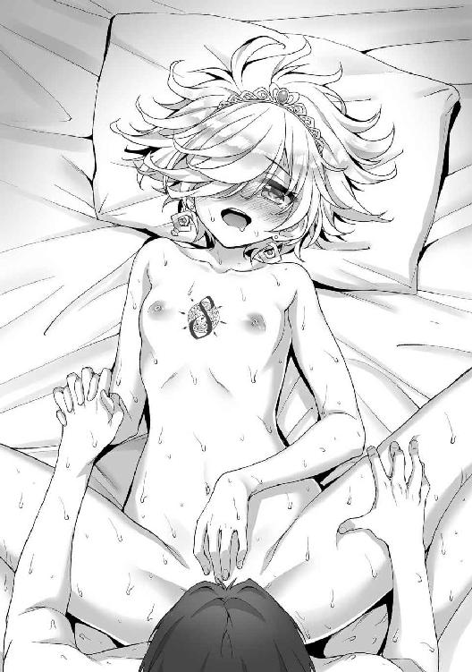
「イ......ク？ わたし、イクの......？ ふああ、あんっ、リアンと、一緒にぃぃぃっ！」
俺たちは絶叫とともに、ひときわ激しく腰を打ちつけ合った。ギュウッと締まる膣肉に酔いしれながら、俺はイングリットの奥深くに大量の熱いものを吐き出した。
ドクドクドクッ、ドクンッ！ ビュルゥゥゥゥゥゥゥゥゥッ！
強烈な勢いでほとばしる精液が、無垢だった胎内を俺の色に染めていく。
「あつ、ぃっ！ なに、これぇっ!? 熱くて、気持ちいいっ！ イイのぉ、イクゥ！」
オルガスムスに震えたイングリットが可憐に叫ぶ。
痙攣しながらペニスを締めつけてくる膣孔に、新たな快感を呼び覚まされながら、俺は思うさま大量のザーメンを注ぎ続けた。やがて最後の一滴まで出しきると、俺は満足感たっぷりに狭い胎内から己のシンボルを引き抜く。
愛液と精液にまみれた肉棒は湯気を立てそうなほど熱く火照っていた。そこからムアッと強烈な性臭が漂い、妖しい気分をさらに煽られる。
「はあ、はあ、はあ......気持ちよかった......」
イングリットはトロンとした瞳で俺を見つめていた。いつも俺に嫌悪の視線を向けていた彼女と、とても同一人物とは思えないほどだ。本音を語り、肌も重ね合わせたことで、俺たちの間にあった垣根が一気に消え去ってしまったような感じがした。
「リアン、その......あ、ありが......と」
「えっ」
声が小さくてよく聞き取れなかった。
イングリットは頰を赤らめ、ぷいっとそっぽを向く。
「......なんでもない」
もしかして、まだ嫌われてるんだろうか。
「むー、いい雰囲気ですね」
「あたしたちも負けてられない」
対抗心を燃やしたように、ミーナとマリーが左右から擦り寄ってきた。
「まだまだ元気ですね。イングリットさんだけで相手をするのは大変ですし、私たちも」
「そうそう、今度はあたしたちで楽しんでよね♪」
明るく微笑むミーナとマリー。
「わたしは、少し休憩......ふうぅ」
イングリットのほうは甘い吐息をつきながら、初めてのエッチの余韻に浸っているみたいだ。
その間に、俺はミーナたちの相手をすることにした。
「ミーナもマリーも、おいで」
にっこり微笑む俺。
たちまち二人の顔がポーッと赤く上気した。ともに目尻が嬉しそうに下がり、蕩けきった表情だ。まず擦り寄ってきたのはミーナだった。
「んんちゅ、むぅ......リアンさまぁ、私のことも可愛がってくださいね」
俺に熱烈なキスを浴びせながら、柔らかな裸身を押しつけてくる。量感たっぷりの乳丘が、たゆん、たゆん、と揺れつつ、俺の二の腕に密着した。その弾力と柔らかさはまさしく極上で、心地よさにうっとりしていると、
「あたしだってぇ......ちゅぅぅぅ」
ミーナから奪い返すように俺の顔を横に向けて、今度はマリーが唇を重ねてきた。こっちも負けず劣らずの巨乳が、ぐに、ぐにぃ、と扁平に潰れるほどの勢いで押しつけられる。
美少女二人のキスとおっぱいでのサンドイッチに、俺はますます陶然となる。当然、股間では二人と早く交わりたいとばかりに俺のモノが雄々しく反り返っていた。
「ああ、全員たっぷり相手をしてやるからな」
「ああ、リアン......んんちゅ」
早くエッチしてほしいとアピールするように、マリーがますます強く唇を押しつけ、破れんばかりの勢いで俺の唇を吸う。俺も勢いこんで、マリーをその場に押し倒した。スラリと長い両足を担ぎ上げるようにして、一気に差しこんでいく。
「あふぅっ、んっ！ えへへ、先に......ふあぁ、もらうね......ミーナ......んっ」
「もう、ずるいですぅ」
深々と貫かれたマリーが歓喜の笑みを浮かべ、ミーナが拗ねたように口を尖らせる。
「ごめんごめん、ミーナもすぐに......な？」
傍にいるミーナに軽くキスしてから、もう一度マリーを見つめる。
「横取りしちゃってごめんね。あたし、もう、リアンが欲しくてたまらなくて......ん、はぁっ！」
マリーの言葉は、俺がいきなり浴びせかけたピストンによって途絶えた。彼女の両足を肩に乗せ、腰を浮かせるような格好で連続して抜き差しを見舞う。まるで杭打機のようだった。
ずちゅ、ずちゅっ、とすでに十分濡れそぼっていた肉壺を俺の剛棒でかき回していく。
「リアン様ぁ、私も一緒に......」
ミーナがたまりかねたように、俺の横からしなだれかかってきた。
「すごい、マリーさんの中に出たり入ったり......ああぁ」
俺たちの結合部を見下ろして、切なげな吐息をもらす。俺はミーナに見せつけて興奮をより煽ろうと、ぐちゅ、ぐちゅ、と愛液を撹拌しながらマリーの内部をかき回した。
「うぁ、あんっ！ 恥ずかし、ぃ、ミーナに見られて......あふ、ひぃ......んっ！」
生々しい結合部を仲間に直視されているのが強烈に羞恥を煽ったらしく、マリーが弱々しい悲鳴を上げる。
ぐちゅ、ぐちゅぅぅ、ずちゅぅぅぅぅっ！
だけど、そんな羞恥すらも快感を高めるスパイスになっているみたいだった。
俺が打ちこむたびにマリーの内部がキューッと収縮して、ペニスをきつく締めつけてくる。
「ああ、羨ましいです......っ」
ミーナが、俺とマリーの繋がり合っている部分に指先を這わせてきた。
肉棒の出入りに合わせて指でペニスの付け根やラヴィアの辺りをそっと撫でる。
「あひ、ぃぃぃ、んっ！ そ、そんなとこ、触ったら......あふぅ、んっ！」
新たな刺激をプラスされて、マリーの嬌声が高まった。
「わたしも一緒に......わたし、だって......」
さらにイングリットが弱々しく体を起こした。
もしかしたら、俺たちが睦み合う光景を見て羨ましくなったんだろうか。あるいは対抗意識でも燃やしてるんだろうか。
切れ長の瞳を爛々と輝かせて、近づいてくる。オルガスムスの余韻による痙攣が残っているらしく、ふらふらしながら俺の背中にしなだれかかる。
「こっちを向いて、リアン......んん、ちゅ」
俺を振り向かせると、イングリットは唇に吸い着いてきた。
「あ、いいなぁ。リアン様、私にも口づけをお願いします......！」
ミーナが羨ましそうに俺とイングリットを見つめる。
「じゃあ、順番交代で」
「そうですね、ふふ」
イングリットとミーナは視線でうなずきあい、俺に交互にキスを浴びせてきた。二人の美少女のぷるんとした唇を味わいつつ、マリーの内部を思いっきり突く。
「はふぅ、んぐぅ、深い、のぉっ！ ああ、ふあ、あんっ！ イイ、イキそぅっ！」
体重を浴びせかけるような重い突きこみに、マリーが絶頂に向かって駆け上がっていく。最後にぬかるんだ肉壺をぐりっとかき回し、『の』の字を描くようにして、一際深く突き入れた。
「ひあぁ、あんっ！ こ、これ、だめっ！ イクイクイクーッ！」
たまりかねたようにマリーが絶叫した。俺はたっぷりと中出しして、狭苦しい内部を白濁の樹液で満たしてやった。脳髄まで貫かれるような爽快感にあふれる放出を終えると、絶頂に震える彼女から体を離した。
「お待たせ。次はミーナの番だ」
と、ミーナに向き直る。
もちろん射精後も、俺のペニスはフル勃起したまま。完全に臨戦態勢を保っている。
「はい、リアン様ぁ」
ミーナは甘えたような声を出して、その場に仰臥した。自ら両足をＭ字に開脚し、俺の挿入を待ち受ける。
「どうぞ、ミーナの中も味わってください......」
ふうっと切なげな吐息混じりに俺を見上げるミーナ。
両足の付け根はトロトロになっていて、鼻先まで甘ったるい愛蜜の匂いが漂ってくる。俺はその香りに惹きつけられて、フル勃起したモノを押し当てた。ぐちゅっ、と飛沫を上げつつ、一息でミーナを貫く。
「ひあぁぁっ、あんっ！ す、すごい、こんなっ、あぁぁっ！」
ごつっ、と子宮まで突き上げると、ミーナは絶叫を上げた。待っている時間が長かった分、欲情が最高に高まっていたんだろうか。どうやら深く突き入れただけでイッてしまったらしい。
初めてのときから何度もエッチを重ねて、ミーナの体は随分と開発されたみたいだ。
狭い膣は俺の肉棒にあつらえたようにピッタリとフィットしていて、挿入しただけでめちゃくちゃ気持ちいい。軽く抜き差しすると、鮮烈な摩擦感で脳髄まで甘く痺れるほどだ。
肌が馴染んでいる、という感じだろうか。
「はあ、はあ、はあ......すみません、私ばかり気持ちよく......」
「いや、俺もすごく気持ちいいから」
「本当ですか？ わぁ、嬉しいです」
ミーナの顔がパッと輝いた。俺はにっこりとうなずき、彼女に軽くキスを与えた。
「んん、ちゅ、好き......好きぃ、リアンさまぁ......はふぅ」
ますます嬉しそうにはにかんだミーナを見つめていると、俺まで幸せな気分になってくる。
そんな彼女ともっともっと気持ちよくなりたい──。
俺はがむしゃらに腰を遣った。処女のころからキツさは変わらず、それでいて熱くぬめる襞は俺を貪ろうと貪欲に絡みついてくる。
「くおおぉ、し、締ま......ぐぅぅ、っ、気持ちいいよ、ミーナ......ぁっ！」
その心地よさにうなりながら、俺はミーナの気持ちがいいところを刺激しようと、微妙に腰遣いを調節する。
「ああっ、あう、イイ！ イイです、そこぉっ！ ふああっ、あんんっ！」
何度も肌を重ねただけあって、彼女が快感を得られるポイントはだいぶ分かって来ていた。
俺が角度や深度を見極めて打ちこむたび、清楚な美少女は淫蕩な悦びの表情を浮かべる。
「イクッ！ もうだめですぅ、私、イッちゃうぅぅぅぅぅぅっ！」
ほどなくして絶頂に達したミーナは豊かな胸を揺らしながら、がくりと脱力する。
同時に窮屈さを増してグイグイと締めつける膣肉に、俺もまた頂点まで駆け上がった。
「よし、俺もイクぞ！ たっぷり受け取れぇっ！」
ミーナを完全に征服した喜びに浸りつつ、俺はぬかるんだ肉壺の最深部にたっぷりと精を吐き出したのだった。
──その後も、俺はミーナ、マリー、イングリットにそれぞれ三発ずつ中出しや顔射、胸射を決めた。さすがに精力絶倫の特性は伊達じゃなく、強烈な射精の連発で彼女たちのほうが先にバテてしまったみたいだ。
今は三人とも快感のあまり動けないらしく、そろって四肢を投げ出し、ぐったりしている。
と、
「王家の娘は、純潔を捧げた相手と一生を共にする......不本意だけど、君と」
イングリットがよろよろと上体を起こして、俺を見つめた。
目つきこそジトッとしているが、顔は照れたように赤らんでいた。
「やっぱり、あのダークエルフと君は違う......当たり前なのに、乗り越えるのに時間がかかってしまった......」
視線もどこか恥じらいを宿して、せわしなく揺れている。
「でも、もう迷わない......迷いたくない......どうか、わたしと、い、一生を......」
「私だって運命の相手であるリアン様から離れる気はありません」
「あ、あたしだってっ。えっと、できればずっと一緒にいたいかなー、なんて」
何か言いかけたイングリットを制するように、ミーナとマリーが起き上がり、左右から抱きついてきた。
「全員、ライバル......」
イングリットが頰をぷうっと膨らませた。
普段クールな彼女にこんな一面を見せられると、ギャップの魅力でドキッとしてしまう。
もちろん、どこまでも健気に俺を慕ってくれるミーナも。
勝気で明るくて、一緒にいるだけで元気になれるマリーも。
三人とも、俺の大切な仲間で──俺の大切な女の子たちだ。
だからこそ守りたい、と強く思う。
強く、強く願う。
闇の妖精のレドネ。
欲望と破壊本能の化身だという、そいつのことを思い出す。
その魔の手が、もしも俺たちの元まで届いたとしても──。
俺が、絶対に守ってみせる。
彼女たちとエッチしたことで、俺はあらためて決意を強くしたのだった。
第六章 無双ＶＳ最強、二人のエルフ
あれから数回のエッチを経て、イングリットの封印は完全に解けた。
真の力を解放した彼女の魔力は、まさに圧倒的の一言だ。
Ｓ級のモンスターすら瞬殺できるほどの、すさまじい魔法能力。強大すぎるために故国で封印を受けた、というのもうなずけるほどの超絶魔力──。
そんな彼女の活躍もあり、俺たちは修練をかねてクエストで各地を回りながら、めざましい戦果を挙げ続けた。連戦連勝、向かうところ敵なしの快進撃である。
そして、三ヶ月が経った──。
「ここに戻ってくるのは二ヶ月ぶりだな」
俺はミーナ、マリー、イングリットともに大通りを歩いていた。
懐かしいレギルス・シティの街並みだ。
「連日のようにクエストをこなしてましたから、なかなか戻る暇がありませんでしたね」
俺の右側に寄り添うミーナ。
「おかげで昇格のポイントをいっぱい稼いで、一気にＡ級まで上がれたし。凱旋ってやつだね、凱旋」
左側にはマリーが寄り添っていた。
「リアンはじきにＳ級。ずるい。わたしたちより後から冒険者になったのに」
彼女の隣にはイングリットがいる。
じとっとした視線だ。
「い、いや、ずるいって言われても」
何度も肌を重ねた仲だけど、普段のイングリットは今までとあまり態度が変わらない。
「イングリットもすぐに上がれるよ。魔法の威力がけた違いになってるし」
「当然。すぐにリアンを追い越す」
イングリットの態度はあいかわらずクールだ。
「......封印を解いてくれた、おかげ」
ぽつりとつぶやくように付け足す。
「えっ？」
「あ、えっと......なんでもない」
イングリットが頰を赤く染めた。
もしかして照れてるんだろうか。
そう、俺たちは三ヶ月のあいだに飛躍的に昇級していた。
俺はＣ級から一気にＡ級のトップクラスに、ミーナ、マリー、イングリットも全員Ａ級に。
出会ったころのランクを考えると、怒涛の成り上がりである。
今日のクエストも、並のＡ級冒険者はもちろんＳ級でさえ苦戦するレベルの魔族退治だったのだが、俺たちはあっさりと討伐することができた。
で、久しぶりにレギルス・シティに戻ってきたわけだ。
と、
「きゃー、リアン様よ！」
「すごい美少年......はあ、美しすぎてため息出ちゃう」
「リアンくん、こっち向いて～！」
町娘たちの歓声が俺を包みこんだ。
そんな声に混じり、
「リアンさん、この間の夜は......素敵でした」
「あんなに燃えたのは初めてよ、ふふ」
頰を赤らめて俺を見つめるうら若き乙女や、色っぽい熟女の姿が見える。
よく似た顔立ちの美少女と美女──二人は親娘なのだ。
「ど、どうも......」
俺はミーナたちの視線を意識し、ぎこちない笑顔になってしまった。
実は先月、クエストでこの町に戻ってきたとき、俺は彼女たちから熱烈なアプローチを受けた。
なんでも以前から俺に憧れていたんだとか。
で、その想いが高じて誘惑してきたわけだ。
母親の熟れた人妻らしい艶気と、娘の清純でいてほのかに匂い立つ色香は、強烈な魅力で俺の心を揺さぶった。
ちょうどミーナたちとは別行動だったこともあり、俺は彼女たちとめくるめく親娘丼で一夜を過ごしたのである。
ミーナたちに知られると、ヤキモチを焼かれそうなので内緒だった。
「ふーん......先月、リアン様お一人でこの町に戻ったことがありましたよね？」
何かを察したようにミーナがジト目を向けてきた。
うっ、やっぱり鋭い。
「ん？ んん？ どういうこと？」
マリーが眉を寄せる。顔は笑ってるけど、よく見るとわずかに引きつっていた。
さらに、
「......またリアンが女の子にいかがわしいことをした？」
いや、その言い方は誤解を招くだろ、イングリット。
「で、どうなんですか、リアン様？」
「ふふ、正直に白状したほうがいいよ」
「説明を求める」
ミーナ、マリー、イングリットが同時に詰め寄ってきた。
すさまじいプレッシャーだ。
「うう......」
これは──誤魔化せる雰囲気じゃないな。
「......ごめん」
俺はやむなく彼女たち親娘との間にあったことを話した。
「もう、リアン様ったら」
ミーナがぷうっと頰を膨らませる。拗ねてるらしい。
「うーん、あたしももっと積極的に迫ったほうがいいのかなぁ。リアンって女関係では押しに弱いよね、絶対」
「ローズマリーは十分積極的」
何やら悩みだしたマリーに、イングリットが告げる。
「え、そう？」
「恋する乙女オーラが出てる」
「や、やだなー、あたしは......えへへ」
顔を赤らめ、俺をちらちらと見つめるマリー。
普段の勝ち気な女剣士と、今のはにかんだような表情のギャップがたまらなく可愛い。
「お探しのダークエルフが、見つかりました！」
町のギルド支部に行くと、窓口にいたパウラさんが駆け寄ってきた。
ここ三ヶ月間、冒険者ギルドの情報網を使って、レドネの居場所を探ってもらっていたのだ。
ダークエルフのレドネ──そう、女神エルシャータから討伐依頼を受けた、最強にして最凶の転生者である。
いくつもの国を滅ぼすような派手な行動を起こしている奴だから、すぐに見つかるかと思いきや、そうでもなかった。奴は一つの国を滅ぼすとすぐにそこを立ち去ったり、数ヶ月ほど気まぐれに居座ったかと思うと、また別の国を攻撃する──といった具合に、神出鬼没の行動を繰り返していたのだった。
ギルドの方でも、その行方を追うのは相当骨が折れたらしい。
それでも、どうにか居場所を突き止められたのは、さすが世界規模の組織といったところか。
パウラさんは得られた情報を俺たちに教えてくれた。
レドネがいる場所は、このアイシャ王国からそれほど遠くない、古き王国──オーキス。
「そこが──決戦の地、ってことか」
「あの、気を付けてくださいね」
パウラさんが心配そうな顔で言った。
「レドネというダークエルフがいくつもの国を滅ぼした、という情報は不確かなものです。ただ、様々な情報を総合すると、かなり危険な人物ではないかと思われます。冒険者ギルドでさえ、うかつには手出しできないほどの力を持った──」
「この間言っていたダークエルフの件か」
窓口までやって来たのはクローディアだ。
以前、彼女にもレドネのことを少し話したことがあった。
「私も行ったほうがいいのではないか？」
Ｓ級冒険者の美少女は剣と甲冑を身に着け、完全武装している。
「いや、奴の城に入れるのは、女神様から武具を授かったものだけなんだ」
つまり、ミリファを持つ俺と、それぞれ専用武具をもらったミーナたち三人だけだ。
「その話は聞いたが、しかし──」
形のよい眉を険しく寄せるクローディア。
「今までの相手とは勝手が違うのだろう？ 君にしては珍しく緊張している」
......見透かされたか。
確かに、レドネはこれまでの相手とは違う。
この世界での戦いにおいて、俺は『最強』だ。絶対的なアドバンテージがある。
だから、どんなモンスターや魔族にも立ち向かい、打ち倒してきた。
だけど今度の相手は、俺と同じく『最強』の特性持ち。アドバンテージがない状態での戦いになる。
勝つか負けるか分からない戦いに──。
「大丈夫。俺たちは必ず戻ってくるよ」
クローディアとパウラさんに微笑んでみせた。
得意のイケメンエルフ爽やかスマイルである。
「......君の強さを信じるよ」
「どうか、ご無事で......」
二人は最後まで心配そうに俺たちを見ていた。
オーキス王国。
それがパウラさんから知らされたレドネの居場所である。
しばらく前に王が病死し、今は王妃が統治しているのだという。
ただし──それは表向きの話。どうやら王は病気ではなく殺されたらしい。そしてそいつが王妃を籠絡し、裏から国を牛耳っているのだとか。
あくまでも噂レベルではあるが、女神さまから聞いたレドネの情報と照らし合わせると真実味が増してくる。
おそらくレドネがいるのは、オーキス王城だ。
俺たちは王都に入った。
近隣でも随一の壮麗さを誇る──と噂のオーキス王都だけど、雰囲気が明らかに変だ。
どんよりと空気が澱んでいる感じ。道行く人たちの顔は一様に暗い。
「聞いたか？ 美しい娘たちを片っ端から王城に集めているって噂」
「ああ。隣の生花店の娘がこの間、召し抱えられたってよ」
「一度王城に行くと、もう戻ってこないんだってな」
「前の王様はあんなにいい統治をされていたのに、王妃様はどうして──」
ひそひそ声のささやきが、俺のエルフ耳ではっきりと聞き取れた。
娘たちが連れ去られる？
たぶん住人たちも表立っては言えないんだろうけど、悪政が布かれているってことだろうか。
ぎぃぃぃああああああああああああああっ！
そのとき、けたたましい咆哮が響いた。
振り向けば、通りの前方に黒い影がたたずんでいる。
「モンスター......!?」
なんで王都のど真ん中に──？
蜥蜴と人の中間のような魔物──リザードマンが手近の人間に剣を振り上げる。
「やめろ！」
「身体強化、第二解放」
ミリファの呪言とともに、俺の全身に圧倒的な力があふれた。
魔導兵器フェンリルとの戦いで使用可能になった第二段階目の身体強化。
それを、今の俺はすでに自在に使いこなすことができる。
まさしく一息で、俺はリザードマンとの間合いを詰めた。振り下ろされた剣を、ミリファで受け止める。
「逃げて、早く！」
通行人たちを避難させると、俺は魔物に向かい合った。
数は全部で五体。
奴らの後方に黒い霧みたいなものがたゆたっている。
そこから、さらに一体──新たなリザードマンが現れた。
「この霧は──まさか『魔物の王』......!?」
ミリファがそう声をあげる。
「えっ」
「転生者の特性の一つです。あらゆる魔物を従え、自在に召喚を行う力......」
だから王都のど真ん中に魔物がいきなり現れたってわけか。
「......自在に召喚って、レドネが望んだ場所にモンスターを送りこめるのか？」
「ええ、おそらくは世界中のどこへでも」
それはちょっとシャレにならないぞ。あいつの気まぐれ一つで、モンスターの大軍が平和な町に押し寄せることもあり得る、ってことじゃないか。
エルシャータが『人間界には干渉しない』という神々のルールを曲げてまで俺に頼んだのもうなずける。
転生者としての絶大な力を悪用し、多くの人々を苦しめるレドネ。
俺が同じ転生者として、絶対に打ち倒す。
そして、この人たちの笑顔を取り戻すんだ。
「灼天使の断罪！」
俺が放った真紅の光球がリザードマンをまとめて吹き飛ばした。
「いくぞ、レドネの元に！」
「止マ......レ......」
王城の門へ続く道を進んでいると、完全武装の兵士たちが立ちはだかった。
槍を突き出し、今にも襲いかからんとしている。
数メートルの距離を置いて、俺たちは立ち止まった。
「──こいつら」
明らかに目つきがおかしい。血走った目は焦点を失い、全身から禍々しいオーラが──魔力が、立ち上っていた。
「精神操作系の魔法をかけられていますね。全員、正気を失っています」
ミーナが険しい顔でつぶやく。
「話し合いが通じる相手じゃないってことだな」
「力ずくで押し通る──シンプルでいいじゃない」
剣を抜くマリー。
「この国を放っておけない」
イングリットが杖を構えた。
「わたしの国のように滅びへの道を歩んでいる、この国を」
「もちろんです」
ミーナが錫杖を掲げる。
「ああ、俺だって見過ごすつもりはない」
俺はミリファを抜き放った。
黄金の刃が陽光を反射して、きらめく。
警備を突破し、王城に侵入する──下手をすれば国家反逆罪だ。
だけど、俺たちはひるまない。
まずは俺とマリーが突進した。
前方に立ちはだかる兵たちに向かって跳び上がり、
「「帝紅斬術、壱の太刀──焔帝撃閃！」」
同時に、強烈な打ち下ろしを叩きつける。
斬撃の勢いと発生した衝撃波で、兵たちはまとめて吹っ飛ばされた。
なおも縦横無尽に駆け回り、残りの兵を蹴散らしていく。
しょせん、俺たちの敵じゃない。
防衛線を突破し、さらに先へ進んで、正門まで到着したところで足を止めた。
「これは──」
正門全体を覆うように、紫色のモヤがたゆたっている。
たぶんこれがレドネが持つ特性──『神の加護』による防御結界だろう。
俺はミリファを掲げた。
ミーナたち三人もそれぞれの右手を掲げる。
俺たちからあふれる金、白、赤、青の四色の輝き。
──ミーナたちが授かった武具は、彼女たちの心の強さに反応して、それぞれの武具へと実体化するらしい。だけど、ここ三ヶ月で一度も実体化していなかった。未だに光の玉として宿ったままだ。
なんとか、この最終決戦の間に使えるようになってほしいけど、それはともあれ──。
四色の光が周囲にあふれ、モヤを跡形もなく吹き散らした。
「──行くぞ」
俺はミーナたちに呼びかける。
「決戦、ですね」
「あたしたち全員でかかれば楽勝楽勝♪」
「油断は禁物」
うなずいた三人とともに城内へと進んだ。
門を抜けると、広大な前庭がある。
そこに無数の魔物が蠢いていた。
「......奴らには見覚えがある。フィニアを滅ぼした魔獣の軍団」
イングリットのクールな美貌が紅潮し、怒りをあらわにしていた。
因縁の敵、ってわけか。
「ここはわたしが」
と、前に進み出るイングリット。
この怪物たちは、彼女にとって仇みたいなものだし、任せるのがいいだろう。
るおおおおおおおおおおおおおおおおんっ！
魔獣たちがいっせいに咆哮する。
その前方にイングリットは敢然と立った。
「父上、母上、そしてフィニアの民たちよ......見守っていてください、わたしの戦いを」
祈るようにつぶやき、杖を掲げる。
「魔力神話級増幅」
呪言とともに、イングリットの全身から青いオーラが立ち上った。
まるで炎のようなそれは、あふれ出す圧倒的な魔力が可視化したもの。魔紋によって封じられ、そして俺たちによって解放された彼女の真の力。
Ｓ級に匹敵......いや、おそらくは凌駕するほどの超魔力だ。
ぐるるるる......！
魔獣たちは脅威を感じたように後ずさった。
それでも恐怖よりも闘争本能が勝ったのか、炎や雷をいっせいに吐き出してくる。
「──無駄。その程度では」
イングリットは避けない。
炎も雷も、彼女が発する魔力のオーラに触れた瞬間、跡形もなく霧散した。
防御呪文を唱える必要すらない。俺もクエストで何度か見たけど、すさまじい魔力量だ。
「この一撃は、フィニアの民たちへの手向け」
イングリットがふたたび杖を掲げた。
「氷魔七帝竜牙弾」
杖の先端から、竜の形をした氷が飛び出す。
数は全部で七。それらが空中でのたくりながら、魔獣を次々と絡め取り、氷結させる。
パリィ......ン。
澄んだ音を立てて、凍りついた魔獣がすべて粉々になった。
文字通りの瞬殺だ。
強い──。
俺はごくりと喉を鳴らした。
あらためて実感する。Ｓ級の冒険者と比べても遜色がないくらい──もしかしたら、それ以上の実力だった。
「ここまでの力を秘めていたのですね、イングリットさん......」
「すごい......！」
ミーナとマリーも息を飲んでいる。
「リアン、ミーナ、ローズマリー......これは君たちが与えてくれた力。討つべき者を討つために。護りたいものを護るために」
振り返ったイングリットが微笑んだ。
「──感謝する」
俺たちはさらに先へ進んだ。
途中で出てきた魔獣はイングリットの大火力魔法で片っ端から吹っ飛ばす。
城内に入ると、今度は人間サイズの魔物たちが大挙して現れた。
どうやら城の警備兵らしい。
「こういう連中なら、あたしの出番だね」
と、マリーが飛び出す。
「リアンはできるだけ力を温存して。ミーナ、サポートお願いっ」
「はい、女神エルシャータよ......愛と正義のために戦うかの者に加護を与えよ......」
ミーナの呪文とともに、マリーの体が黄金のオーラに包まれた。
同時に、その速度が数倍にアップする。強力な身体強化系の魔法だ。
「はあああああああああああっ！」
マリーは剣を一閃、魔物たちを切り払う。パワーも、スピードも、普段の比じゃない。
その後も、イングリットの魔法やマリーの剣、ミーナの補助により、立ちはだかる魔物を次々と片づけ、俺たちは最上階までたどり着いた。
「......この壁の向こうから、異様な魔力を感じます」
長い回廊の途中で、ミーナが足を止める。
「レドネか？」
「いえ、ちょっと違う感じですね。もっと大勢の人間の気配が」
俺はミリファを抜き、壁を切り裂く。
向こう側に行くと、そこは巨大なホールになっていた。
そして中央部には──、
「あなたは......？」
驚いたような顔で俺たちを見つめる、数百人の女たち。レドネに捕らわれていた虜囚たちだろうか。全員が一糸まとわぬ全裸で、鎖付きの首輪をつけられていた。
その鎖は、部屋の中央に設置された巨大な金属球体につながっている。球体は、まるで心臓が脈打つように規則的に明滅を繰り返していた。
「大丈夫か！」
俺は彼女たちの元に駆け寄った。全員が丸裸だから目のやり場に困る。
「......リアン様、あまりじろじろ見てはいけませんよ？」
振り返ると、すぐ背後にミーナがいた。
な、なんか目が怖いぞ......？
「デレデレしちゃダメだからね」
「リアン、女好きはほどほどに」
マリーとイングリットも釘をさすように言った。
「油断すると、すぐにハーレム要員が増えてしまいますからね。三人が心配されるのも当然でしょう。恋のライバルが増えるのは遠慮したい、ということです」
ミリファまで。まったく、俺をなんだと思ってるんだ。
──と、それにしても美人ぞろいだな。
思わず彼女たちに視線を向け直す俺。
「リアン様......？」
「わ、分かった、あっち向いてるから」
ミーナにジトっと見られ、俺は慌ててそっぽを向いた。
──彼女たちは簡素な衣服を与えられているらしく、全員それに着替えた。
さっきの全裸姿を思い出し、俺はまだちょっとドキッとしていた。
「......リアン様」
「ご、ごめん」
じろりとミーナににらまれ、俺は慌てて謝った。普段は優しいのに、女絡みになると本当に怖いんだよな、彼女は。
「私たちはオーキス王国の者です」
女たちの一人が告げる。
年齢は三十代半ばくらいだろうか。気品にあふれた、すごく綺麗な人だ。
その隣にはよく似た顔立ちの少女がいて、たぶん親娘なんだと思う。
「あなたたちは、もしかしてオーキスの王妃と姫......？」
「知ってるのか、イングリット？」
「オーキスはフィニアの近隣国で同盟関係もあったから」
滅ぼされた祖国を思い出してか、彼女の顔がくもる。
「......！ イングリット姫？」
「お久しぶりです、エリザベート王妃様」
イングリットは彼女──王妃に恭しく一礼した。
俺たちも慌てて頭を下げる。まさか、一国の王妃がこんなところに捕らわれているとは。
「この国はすでにレドネ様のもの。私は亡くなった夫に代わり、この国を取り仕切っていますが──それもすべてあの方の命令によるものなのです」
一国の王妃が、レドネに対して『様』付けか。
「あの方に私たちは身も心も捧げました」
と、王女が告げる。
「もう......逃れられません」
切なげな顔は、すべてを諦めきったような苦渋に満ちていた。
見回せば、他の女たちも同様だ。レドネによって支配された女たち──見ているだけで悲しい気持ちが胸に湧き上がる。
男なら、女性にこんな顔をさせちゃいけない、って思う。
もっと彼女たちが笑顔で居られるように。俺がレドネの立場なら絶対にそうするのに。
「......安心して。俺がみんなを解放する」
湧き上がる気持ちのままに、俺は彼女たちに宣言した。
「レドネを倒す。そのために俺たちは来たんだ」
「レドネ様を......？」
女たちの間にざわめきが広がった。
「ああ......彼に勝つなんて、絶対に無理です」
王妃さまが首を横に振る。
「たとえ、最強と呼ばれるＳ級の冒険者であっても。現にレドネ様の噂を知って、とあるＳ級冒険者がやって来ましたが、傷一つ与えることすらできずに殺されました」
「彼には誰も勝てません。無尽蔵の魔力を得る能力の前では、どんな冒険者も敵わない──」
王女が続ける。
「無尽蔵の魔力......？」
「レドネ様は支配する女の数に比例して、魔力の上限値が増すのです。私たちは、仇である彼を強くするために毎日体を汚され、支配され続けています。なのに私は、あのお方に犯されることに......浅ましい快楽さえ感じてしまって......ああ」
どうやら、単純に力ずくで女たちを犯すだけの奴じゃなさそうだ。凌辱された女性たちさえも、魅力を感じてしまう一種のカリスマ性を持ってるってことか。
「じゃあ、この装置は？」
「超古代の魔法装置だということです。レドネ様に支配されている女からエネルギーを吸い取り、それをレドネ様に送るそうです」
要は、レドネの特性はゲーム風に言うなら最大ＭＰアップ。この装置は彼女たちから効率よく魔力を吸収するための補助装置って感じだろうか。
「これを壊せばエネルギーの供給が鈍るかもしれないな」
俺はミリファを構えた。
「みんな、下がって」
告げて身体強化し、その脚力で天井近くまで大きく跳び上がる。
「破妖斬！」
得意の魔法剣技を装置の上部に叩きつけた。
おお......んっ。
うなるような音がして、わずかに亀裂が入るが、それだけだった。
さらに二度、三度と魔法剣技を撃ったけど、ほとんど傷を付けられない。簡単には壊せそうになかった。
「おっと、それに手を出されるのは困るなぁ」
声が、響いた。
かつ、かつ、という足音とともに、一人の少年が歩いてくる。
銀色の髪に赤い瞳。浅黒い肌をした細身の体。
そしてナイフのように尖った耳。
凍りつくような秀麗な美貌のダークエルフだ。
「僕の名はレドネ・アーヴァイン。初めまして、リアンくん」
男の俺でさえ、ぞくりとするような色気のある笑み。
──こいつが、レドネか。
「......俺を知ってるのか？」
「ああ、至高神が教えてくれた」
腰の小剣を抜くレドネ。
レ・ヴィっていうのは、こいつを転生させた神様だろうか。
レドネは黒光りする小剣を楽しげに構えていた。
想像していたような、邪悪な雰囲気はない。むしろ、無邪気な子どものような、爽やかな笑顔だった。
それが逆に恐ろしい。
この笑顔のまま、レドネは何百何千......あるいは何万何十万という人を殺し、いくつもの国を滅ぼしてきたはずだから。
「さあ、楽しもう。この世界において、僕も君も並ぶもののない最強──その二人がぶつかり合えば、最高の戦いになるはずだよ」
「......戦いが楽しいのか」
「当然だろう？ 力は、振るうためのもの。全力をぶつけられる相手がいてこそ、最高に楽しめるんだ」
レドネが爽やかに笑みを深める。
「君もそうだろう？」
「俺は、お前とは違う」
ミリファを構え、俺は言い放った。
「この世界で大切に想う人たちがいる。守りたい場所もたくさんある。だから、お前みたいな奴は──絶対に見過ごせない」
「いいね。その怒り！ その闘志！ その殺気！」
レドネが哄笑した。
「最高だよ、リアンくん。射精してしまいそうだ。ああ、もう我慢できない──始めようか、極限のバトルを！」
そして、俺たちの戦いは幕を開ける。
無双のエルフと、最強のダークエルフの決戦が。
「身体強化──」
「──第三解放！」
俺たちは同時に身体強化を第三解放まで引き上げた。
突進も、また同時。
ホールの中央で、俺たちは激突した。
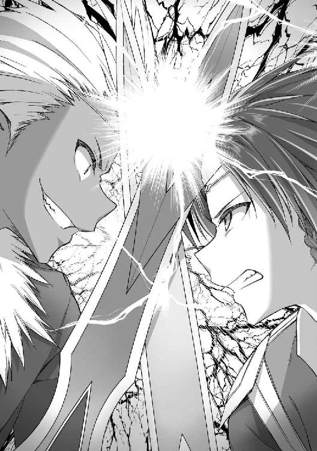
甲高い金属音が連続して響く。俺たちの斬撃は金と黒の軌跡を無数に生み、激しくぶつかり、弾き、またぶつかり合う。
威力も速度もまったく同じである。
「なるほど。僕のパワーやスピードについてこられるんだね」
同じ第三解放だけあって、俺たちの身体能力はほぼ互角のようだった。
そして──互角ということは、つまり俺の勝ちだ。
「単独で戦っても互角だから、仲間の力を借りれば勝てる──そんなふうに考えてないかな、リアンくん？」
レドネがニヤリと笑った。
「思ってるさ」
俺もニヤリと笑みを返す。
「氷魔七帝竜牙弾」
背後からイングリットが氷の呪文を放つ。
さらにマリーが剣を手に突進する。
ミーナは援護呪文の準備に入っている。
俺たち四人の連携だ。
「ふふ、こういうのはどうかな？」
レドネの笑みが深まった。
ぞくり、と背筋に冷たい悪寒が走り抜ける。
「魔力強化」
レドネが静かにつぶやいた。
こいつ、まさか──。
「二重解放形態」
バチィッ！
イングリットの放った氷の魔法が一瞬で弾け散った。
レドネの全身からほとばしる魔力のオーラに触れて。
さらに、その姿が消える。
「速い──!?」
動きが、見えない......！
俺はとっさにバックステップした。
「きゃあっ！」
マリーがいきなり吹っ飛ばされる。
攻撃を受けたわけじゃない。おそらくは、レドネが移動した際に生じた衝撃波を浴びたのだ。音速を易々と超える、信じられないほどの超加速能力──。
「さあ、これでまた一対一だ」
レドネは易々と間合いを詰め、黒い小剣を叩きつけてくる。ミリファでその斬撃をブロックするが、とても受け止めきれない。
「くっ......！」
すさまじいパワーに、俺は大きく吹き飛ばされた。
「はあ、はあ、はあ......」
たった一撃受けただけで、体力がごっそりと減っていた。
「同じ『最強の魔法剣士』特性持ちだけあって、身体能力は互角。魔法剣技の威力も互角。だけど──魔力そのものには大きな開きができたね」
息を切らす俺とは対照的に、レドネは涼しい顔をしている。
「『至高の支配者』──僕は欲望で支配した女の数だけ、己の魔力を増幅できるんだ。君に同じ真似ができるかい？」
もちろん、無理だ。
身体能力が互角でも、攻撃力は魔力の高いレドネのほうが上。
どう戦う──。
「リアン様......」
「あたしも、まだ戦える」
「全員で連携を」
進み出る三人。
「みんな、下がっていてくれ。巻き添えを食わないように」
だけど、俺は彼女たちに警告を送り、後退させた。
こいつは、俺以外に手出しできる相手じゃない。
下手に援護させれば、三人がレドネの攻撃の余波で致命的なダメージを受けかねない。そしてそれをかばいながら戦う余裕は、俺にはない。
「さあ、続きといこう！ 簡単には死なないでくれよ、リアンくん。僕をもっと楽しませてくれ！」
笑いながらレドネが斬りかかってきた。
エルフの細い腕からは信じられないほどの、強烈な打ちこみ。
受けただけで両腕が痺れる。
かといって、受け流せるようなパワーじゃない。
回避に徹しようとしても、速すぎて無理だ。
「ほらほらほらぁっ！」
「ぐうっ、うううっ......！」
凌ぎきれない斬撃が俺の腕を、足を、傷つけていく。
その痛みに集中力を削がれ、俺の剣さばきが鈍っていく。
一方のレドネは、余裕の表情だ。
「あはははは！ どうしたんだい、リアンくん？ 君ならもっと僕を追い詰められると思ったのに？ そら、反撃してみろ！」
わざと全力を出さず、俺をいたぶって楽しんでいるのか。
「それとも、君が本気になるように仕向ければいいかな？ たとえば──そう、君の大切な女の子たちを僕がどうにかする、とか？ 殺すか、それとも──」
レドネの口の端がにいっと吊り上がった。
「犯すか」
「っ......！」
頭にカッと血が上った。
「レドネぇぇぇぇぇぇっ！」
怒りの咆哮を上げて、俺は斬りかかった。
渾身の斬撃は、しかし、
「ふふ、さっきよりパワーが上がったじゃないか。そうそう、その調子」
やはりレドネには通じない。
俺はさらに踏みこみ、剣を繰り出した。
腕も千切れよとばかりの、渾身の連続攻撃。
だけど──当たらない。
強い。
今までこの世界で出会った、どんな敵と比べても。
レドネは圧倒的に次元が違う。
「次はこっちの攻撃ターンかな」
「ぐあっ......！」
レドネが無造作に振るった剣に、俺はまったく反応できない。胸元を横一文字に切り裂かれ、激痛とともに鮮血が噴き出した。
「リアン様！」
振り返ると、ミーナが悲鳴を上げている。
マリーも、イングリットも、今にも泣きそうな顔。
「そんな顔......するなって......」
苦しい息の下で、俺はつぶやいた。
こいつを倒して、全員で無事に帰るんだ。
だからこんなところで負けてたまるか。
「一人で戦わないで、リアン様」
「あたしたちだって、リアンの力になりたい」
「大切なの、君が」
ミーナが、マリーが、イングリットが、悲痛な表情で告げる。
「だからお願いです、女神様。私の──いえ、私たちの愛しい人を守るために」
三人の声が唱和する。
「どうか、力を！」
刹那、まばゆい光が弾けた。
ミーナからは白、マリーは赤、そしてイングリットが青。
三人の胸元からあふれた輝きは収束し、三つの武具となって具現化する。
ミーナには僧侶の錫杖が、マリーには大剣が、イングリットには魔法使いの杖が。
「へえ、すごいエネルギーじゃないか。そんな武器を持っていたとはね」
レドネが彼女たちに視線を向け直した。
「僕は構わないよ。四対一でもね」
振りかぶった剣が紫色の輝きを放つ。
「全部薙ぎ払ってあげよう──妖覇剣」
「愛と癒しの錫杖、お願い。リアン様を守る盾を！」
ミーナの錫杖──レファクタから白い輝きがほとばしった。
その輝きがバリアとなって、レドネの魔法剣技を弾く。
「それだけで防げるほど、甘くないよ」
ダークエルフの姿が消える。
俺でさえ視認できないほどの超速移動だ。
「させない！」
マリーが赤い剣を手に突進した。
「燃え盛る魂の紅剣、あたしに力を！」
叫んだ瞬間、彼女の手にする剣──ラルファーグが輝いた。
赤いオーラに包まれたマリーは、爆発的に加速する。どうやらあの剣には、持ち主の身体能力を強化する機能があるらしい。
俺の背後に現れたレドネの斬撃を、マリーが赤い剣で受け止めた。
「やるね！ だけど、まだまだ──」
すぐさま跳び下がったレドネは、黒い小剣を振りかぶり、
「瘴皇剣」
濃緑色をしたエネルギーの刃が空中で数十にも分裂し、流星のごとく降り注ぐ。
「蒼穹の魔杖、効果範囲最大展開」
イングリットが青い杖を掲げた。先端の飾りが分離し、八つのパーツとなって、俺たちの周囲に配置される。
「封魔砲盾」
パーツからそれぞれ光線が伸び、連結してバリアとなる。
濃緑色の斬撃エネルギーがそこに触れると、閃光とともに反射した。無数の斬撃はそのままの威力でレドネへと向かっていく。
「へえ、僕の攻撃を跳ね返すとは──」
打ち返された自らの斬撃群を、しかしレドネはやすやすと弾き散らす。まだまだ余裕があるようだ。
「やっぱり、強い......！」
俺はうめいた。
ミーナたちが覚醒してなお、戦況は覆せないのか──。
※
ｓｉｄｅ ソフィア・オーキス
エルフとダークエルフ、二人の魔法剣士が斬撃の火花を散らし、魔法剣技を撃ち合う。
オーキス王国の王女ソフィアは激しい戦いを、身じろぎ一つせずに見守っていた。
先ほど、リアンと名乗ったエルフの少年は、彼女たちを解放すると約束してくれた。そして、強大な力を持つレドネに真っ向から立ち向かっているのだ。
戦いは、劣勢だった。
レドネが剣を振るうたびにリアンは傷つき、後退する。仲間である三人の冒険者少女たちも援護しているが、それでも戦況は覆せない。
「まだだ......！」
リアンの凛とした声が響いた。
力の差にひるむことなく、命がけで立ち向かう。
冒険者としての使命感か。あるいは、見ず知らずといっていい自分たちを守るためなのか。
美しい、と思った。
容姿だけではない、凄絶なまでの覚悟と、真摯な意志に──息を飲むほどの美しさを感じた。
「私は......」
女たちの誰かがつぶやく。
「私たちも、あの人と一緒に......」
他の女が続く。
具体的な言葉はなくとも、何を言おうとしているのかは分かった。
──自分たちもリアンの側に行きたい。
──彼の力になりたい。
──レドネと、決別したい。
本当はとっくに気づいていた。
レドネは憎むべき仇だと。
だが体を汚され、彼に支配されていくうちに、いつしか抵抗の気力は失せていた。彼こそが自分たちの主だと思考放棄するのが一番楽だった。
だが今──自分たちのために必死で戦うリアンたちを見て、ようやく決心がついた。
「私も戦います......リアン様。あなたのために......」
ソフィアは熱い思いを込め、エルフの魔法剣士を見つめる。
※
「がはっ......！」
レドネの魔法剣技に、俺は大きく吹き飛ばされた。
壁に体を叩きつけられ、全身がバラバラになりそうな痛みの中で崩れ落ちる。
骨が折れてしまったのか、四肢が痺れて動かない。立ち上がることさえできない。
「ここまでみたいだね。楽しかったけど──僕には届かないか」
レドネが俺を見下ろして笑った。
「そろそろ殺してあげるよ。いや、そっちの女の子たちを──君の目の前で犯してやるのも一興かな？」
「っ......！」
舌なめずりするレドネに、俺は全身の血が沸騰するような怒りを覚えた。
こんな奴に──。
「ミーナたちには、指一本触れさせない！」
立ち上がる。すでに力が入らなくなっている四肢に、無理やり力を込めて。
「動け、俺の体......！」
うめく。
大切な人たちを守るために。
「随分とムキになるねぇ。君ほどの美貌と力があれば、女なんていくらでも替えが効くだろう？」
「替えなんていない。三人とも、俺にとってかけがえのない存在だ」
もちろん、彼女だけじゃなく、クローディアやパウラさんだって。
女を、ただ自分の欲望を満たすための道具程度にしか思っていない、レドネとは違う。
俺は──！
「負けないで、リアン様......」
声が、した。
ミーナたちじゃない。その後方からだ。
振り向けば、大勢の女たちが俺を見つめていた。
悲壮な決意を感じさせる顔で。
俺に熱い視線を注ぎ、それからレドネを憎々しげににらむ。
「なんだ、その目は？ 君たちの主が誰なのか、理解していないのか」
レドネは不快そうに眉を寄せた。
「まず君たちから犯してやろうか。徹底的に再調教して、二度とそんな表情ができないようにしてやろう」
「いいえ、私たちはもうあなたには従いません！」
先頭の少女──オーキスの王女が叫んだ。
「あなたにとって、私たちはしょせん替えの利く道具！ だけど私たちはもう道具であることをやめます！ やめてみせます！」
「......この僕より、出会ったばかりの彼を選ぶ気かい？ 馬鹿なことを」
「馬鹿だったのは今までです」
王女はひるまない。
「私たちは身も心も汚され、快楽を教えこまれて......あなたから離れられなくなっていた」
「だけど、それは逃げでしかない......彼が私たちを解き放とうとしています」
「ならば私たちはそれに応えて、あなたから決別します」
他の女たちもそれに続く。
彼女たち全員の視線が、レドネに『拒絶』を突き付けていた。
そこにはもう、支配された女たちの姿はない。自らの意志を取り戻し、レドネに決別しようとする強い決意があった。
「随分とほだされたみたいだね」
呆れたように肩をすくめるレドネ。
「興が削がれる。不愉快だよ......消えろ」
黒い小剣から彼女たちに衝撃波が飛ばされる。
「させるか、螺光裂煌斬！」
俺はすかさずその前に立ちはだかり、奴の一撃を魔法剣技で迎撃した。
「無駄だよ、君の力じゃ僕の斬撃は止められない──何っ!?」
せせら笑ったレドネの顔が凍りつく。
ぶつかり合った二つの魔法剣技──今までとは違い、威力が勝ったのは俺の方だった。押し切った輝きがレドネを襲い、後退させる。
「これは──力が、消えていく!?」
レドネが戸惑いの声を上げた。
「どうなっている、ギルフェ」
「レドネ様の魔力が急激に減っています。これでは強力な魔法剣技は撃てません」
奴の相棒である小剣が淡々と告げた。
確かに、さっきの撃ち合いではレドネの魔法剣技から受ける圧力が今までより弱くなっていた。これなら、なんとか戦えるかもしれない。
「破妖斬」
俺は反撃の魔法剣技を繰り出した。
「魔王斬」
レドネが紫色の斬撃衝撃波で、それを迎え撃つ。
「押し返せない......っ!?」
レドネの狼狽が大きくなった。
今までなら、奴の攻撃の威力が勝っていたはずだ。
だけど、俺たちの魔法剣技は中空でぶつかり合ったまま、威力をくすぶらせている。どちらにも押し切れない状況だ。
攻撃力が互角になっている──。
「ならば、私たちのサポートで押し切れるはずです！」
ミーナが俺の側に寄り添った。
「ああ、力を貸してくれ」
彼女を横抱きにして、俺はなおも黄金の小剣に魔力を込める。
「お、押される......！」
中央でぶつかり合っていた俺とレドネの攻撃エネルギーは、徐々に奴へと向かっていく。
「馬鹿な──」
驚愕の声を飲みこみ、轟音とともに輝きがレドネを直撃した。
大きく吹き飛ばされながらも、空中で体勢を立て直して着地するダークエルフ。
「はあ、はあ、はあ......！」
傷だらけのレドネが俺を憎々しげににらむ。
「やってくれたね......！」
さすがの奴も、戦いを楽しむ余裕がなくなってきたんだろう。
「くそっ、女ども──僕に力をよこせ！ 解放されるだの決別だの、いつまでも戯言を言っているんじゃない！」
さすがのレドネにも焦りが見えた。
「お前たちは僕の道具だ！ さっさとしろ！」
「もう誰もお前には従わない」
俺は冷然と言い放った。
「人は道具じゃない。心を省みないお前に、ついてくる者はいない」
「あいつらは僕に魅せられた。僕が支配した。なのに、なぜだ!? 出会ってまもない、こんな男に──僕よりも、こんな男にっ！」
歯嚙みするレドネ。
たぶん転生してから、あらゆる戦いで勝ち続け、望む女を抱き続けてきたであろうレドネにとって、それは──耐えがたい屈辱なんだろう。今までの泰然とした風格が噓みたいに取り乱している。
「天血竜牙！」
俺は斬撃を繰り出し、ふたたび奴を大きく吹き飛ばした。
「また、僕が押し負ける......ふざけるな......」
レドネは体勢を立て直すと、黒い小剣を掲げた。
「ふっざけるなぁぁぁぁぁぁぁぁぁぁぁぁっ！ 殺す！ お前ら全員、塵も残さず消し飛ばす！」
怒りの絶叫だった。
黒い小剣から毒々しい紫色のオーラが立ち上る。
竜。
巨大な三つ首竜の姿を取ったそのオーラが、俺たちを見下ろしていた。
「冥王竜撃斬。魔力と生命力を攻撃力に転化することで使える、最強の魔法剣技。僕にこの技を撃たせたのは、君が初めてだ。光栄に思うがいい」
初めて見る技だけど、気配だけで分かる。
信じられないほどの破壊力を秘めているのが──。
しかもオーラで形成された紫色の竜は、さらに巨大化していく。
一体、どこまで膨れ上がるのか。城の壁が、天井が、ぼろぼろに崩れ落ちていく。
瓦礫が雨のように降り注ぐ中、俺はミリファを構え直した。
おそらくレドネは今、魔力のチャージ中だ。叩くなら今しかない。
「ミーナ、マリー、イングリット！ 力を貸してくれ！」
俺は三人の仲間に叫んだ。
勝機は、今この一瞬だけ。
「全員の力を結集してレドネを討つ！」
「分かりました、リアン様。受け取ってください──魔力超加速！」
ミーナの呪文が俺の魔力を増大させる。
「いっけぇぇぇぇぇぇぇっ、破妖斬」
膨れ上がった魔力を剣に乗せ、俺は渾身の魔法斬撃を放った。
「ちっ、まだ八割のチャージだが──冥王竜撃斬！」
レドネが紫の竜を放ち、迎撃する。
俺たちの魔法剣技が正面からぶつかり合った。
「お、押される──」
やはりエネルギー不足なのか、俺の魔法剣技の威力が勝っていた。
あふれ返った魔力エネルギーの余波に押され、後退するレドネ。
「隙ありっ！」
すかさずマリーが突進する。
「はぁぁぁぁっ！」
帝紅斬術を駆使して巧みなコンビネーションが繰り出された。
「こ、このっ......！」
その一撃一撃が、レドネをさらに後退させる。
「氷魔七帝竜牙弾！」
さらに、それを援護するように、イングリットが極大魔法を放った。
タイミングを合わせて、マリーが横に跳ぶ。
「がぁ......っ!?」
その動きがブラインドになり、一瞬反応が遅れたんだろう。
レドネは呪文の直撃を受けて吹き飛ばされた。
「これで終わりだ──」
俺はミリファを大きく振りかぶった。
残るすべての魔力を込めると、刀身が虹色の輝きを放つ。
「斬撃解放──超級・灼天使の断罪！」
「馬鹿な、この僕が──最強たるレドネ・アーヴァインがぁぁぁぁっ!?」
愕然としたレドネの声が響く。
虹色の輝きが一際まぶしさを増し、奴の姿はその中に溶け消えていった。
「リアン様、Ｓ級昇格おめでとうございます」
ミーナが嬉しそうに微笑んだ。
「いやー、あっという間だったね」
明るく笑うマリー。
「......いちおう、祝福」
イングリットが視線を逸らし気味にしているのは、たぶん照れてるんだろう。
──レドネとの決戦から数週間が経った。
捕らわれていた女性たちを解放し、俺たちはギルドに事の顛末を報告した。
レドネとの戦いはギルドの依頼じゃなく、女神さまからのクエストだ。
だけど、奴がオーキス王国をはじめ、いくつもの国を滅ぼしたり、あるいは支配したりしていた事実もあり、俺たちは国を救った英雄として一躍有名になった。
その功績は冒険者ランクにも跳ね返り、その後もとんとん拍子にポイントを積み重ね──俺は今日、晴れてＳ級に昇進した。
もちろんミーナたちも順調にランクを上げている。全員がＳ級に上がるのも、そう遠くないだろう。
「──というわけで、祝賀会ですっ」
ミーナに案内されたのは、クローディアの屋敷だった。大きなテーブルに豪勢な料理が並べられている。
「お、主役登場か。おめでとう、少年」
「すごいです、リアンさん。おめでとうございます」
クローディアとパウラさんが笑顔で出迎えてくれた。こうして祝ってもらえるのは、やっぱり嬉しい。俺たちは食事をしながら、ワイワイと歓談した。
「Ｓ級になれば二つ名がつくからな。何か考えておいたほうがいいぞ」
クローディアが教えてくれた。
「二つ名か......」
そういうのって憧れるんだよな。
どんな名前にしようか。やっぱり格好いいのがいいな。
「クローディアの『七聖刃』やシルヴィアの『魔導仙女』のように、二つ名はその冒険者を象徴するもの」
と、イングリット。
「リアン様の場合はなんでしょう？ 強さと、美貌と、魔法剣士ということと、できればエルフということも想起できるような......」
「いやー、全部の要素を短い言葉に入れるのは難しいんじゃない？」
ミーナとマリーがそれぞれ言った。
「こういうのは直感でいいと思うぞ」
微笑むクローディア。
「君を象徴するものといえば......たとえば『絶倫』とか」
「そっちかよ!?」
とんでもない提言に、俺は即座にツッコんだ。
「確かに、いいかもしれません」
「えっ、パウラさんまで!?」
「絶倫......確かにそうですね」
「あたしたちも何度ベッドで喘がされたことか」
「腰が抜けるくらい、たくさんいやらしいことをされた。納得の二つ名」
ミーナ、マリー、イングリットもそろってうなずいている。
「いやいやいや、せっかくＳ級になったのに『絶倫』なんて二つ名は嫌だからな!?」
断固として拒否だ。
「二つ名はさておき、そろそろ私たちからプレゼントをさせてもらおうかな」
クローディアが俺を見つめる。
その瞳に妖しい光が浮かんでいるのを見て、ゾクッとなった。
「プレゼント？」
「『絶倫』ぶりを見せてくださいね、リアン様」
ミーナが冗談めかして微笑む。
いや、絶倫ネタはもういいから。
──って、ん？ それってもしかして......。
「あたしたち全員でリアンをお祝いしてあげる」
「わたしも」
「私もです。たっぷり楽しんでくださいね」
「もちろん私もだ、少年。この場の全員を、思う存分抱いてくれ」
──宴のあと、俺は彼女たちとともに寝室へ移った。
全裸になって特大サイズのベッドに寝そべると、ミーナ、イングリット、パウラさんが俺の下半身に取りついてくる。
ちなみに五人全員、俺と同じく全裸である。
「んちゅ、む......はむぅ......リアン様ぁ......」
「ん、大きい......それに熱くて、硬くて......うぅ、ちゅ」
「あむ、れろぉ......やっぱり、すごくたくましいです......男の人、って......」
うっとりとした顔のミーナが亀頭を咥え、両サイドからイングリットとパウラさんが竿を舐めしゃぶる。
「ここも敏感なんだよね、リアンは」
「ふむ、私も奉仕させていただくとしよう」
マリーとクローディアは俺の頰にちゅっとキスをしたり、エルフ耳の先端部を唇で挟みこみ、甘嚙みしたり、とペニスに負けず劣らずの快感を送りこんでくる。
俺の方はただ寝そべっているだけ。
五人の美少女、美女たちにひたすら奉仕してもらうという、夢のような状態だ。
「ああ、こんなに硬くして──もうたまらないです、リアン様」
ミーナが熱いため息交じりに、俺のモノを見つめた。
三人のフェラやマリーとイングリットの攻めによって昂ぶった欲情は、肉棒を垂直に屹立させていた。
漏れ出したカウパーが周囲に生臭い牡の香りを振りまいている。
びく、びく、と力強く脈を打ち、早く彼女たちの中に入りたがっている。
もう、すぐにでも全員に代わる代わる挿入したい──。
たぎる欲望で俺の全身は熱く火照っていた。
「じゃあ、全員四つん這いになるんだ。順番に楽しませてもらうからな」
俺が命じると、ミーナたちはうっとりと目を潤ませてうなずいた。
「ああ......」
熱っぽい吐息は誰がもらしたものなのか。全員の表情にこれから始まることへの淫らな期待感が満ちている。
特大サイズのベッドだけに、ぎりぎりで五人が四つん這いで横一列になれた。
俺はずらりと並んだ白桃のような五つのヒップを見下ろした。
まさに壮観だった。
ミーナの可愛らしい尻に、マリーやクローディアの引き締まった尻。イングリットはこの中で一番ヒップサイズが小さくて可憐だ。パウラさんの尻丘はむっちりと肉づきがいい。それぞれに魅惑的な双尻を見下ろしていると、誰から賞味しようか、楽しみで仕方なくなる。
「とりあえず右から順番に貫いてやる──」
俺は欲望のままに告げると、右端で尻を突き出しているパウラさんの元へ寄った。
ずぶりっ、とヌルヌルのそこを一気に奥まで貫く。
「あああっ、深い──」
パウラさんはため息交じりの嬌声をもらした。肉づきのよい裸身が左右に揺れている。ペニスにまとわりつくような熱い襞肉は、挿入しただけでも十分に気持ちいい。
「動きますよ、パウラさん」
その気持ちよさをもっと強く味わおうと、俺は腰を揺らしだした。
ぐちゅ、ずちゅっ、と内部にたまった愛液がいやらしい水音を立てる。狭苦しい内部を拡張するように俺は腰を回しこんだ。
「はふ、うぅ、ああんっ！ 中、広がっちゃ......ああぅ、太い......んっ！」
パウラさんの嬌声が一オクターブ高くなった。
「こっちを向いて......」
ささやくように言うと、背中越しに振り向いたパウラさんの唇を強く吸った。
「んんんっ......！」
甘い口づけに酔いながら、俺は腰のピッチを上げていく。腰を回しこみ、処女の生硬さから成熟した女の感触へと変わりつつある秘孔をかき回し、押し広げる。
「あふ、ひぃんっ、ふあぁ、ぉぉぉ、んんんっ！ はぁぁぁ、あうんっ、んぐぅぅぅっ！」
キスで塞いだ口から、くぐもった声で高まる愉悦を伝えるパウラさん。自らも腰を打ち振り、抽送を迎え撃ちながら、むっちりした裸体が痙攣する。
地味で清楚な普段の姿とは裏腹の、性に貪欲な動きが俺の興奮に火をつけた。パウラさんの乱れっぷりは、回を増すごとに激しさと妖しさを増していた。
もっともっと彼女が乱れるところを見てみたい──。
俺は熱情を込めて、一際深く打ちこむ。
「ん、は......ぐぅっ！ んんんんーっ！」
最後に背中を大きくアーチ状に反らせると、パウラさんは絶頂のうめき声を上げた。そのまま、くたっと脱力して上体をシーツの上に突っ伏す。盛大にイッてしまったらしい。
一方の俺はまだまだ余裕があった。ぐちゅっ、と水っぽい膣から己の分身を引き抜き、隣で待っているマリーの尻を抱えこむ。
「次はマリーだ」
鍛えられて引き締まった尻たぶを鷲掴みにして、左右に押し開いた。鮮紅色の尻のすぼまりはヒクヒク動いていて、可愛らしい。そのすぐ下では、サーモンピンクの秘唇が、これまた小さく開閉を繰り返し、俺が入ってくるのを待ち望んでいるかのようだ。
堅く尖った亀頭を割れ目の中心に押し当てると、ぐちゅぅっ、と愛液を飛び散らせながら差しこんだ。
「ひぁぁぁっ、リアンが入ってくるぅぅぅっ！」
赤いツインテールを振り乱しながら、マリーが喘いだ。激しく揺れるその先端を手綱のように持ち、がつ、がつ、と荒々しく腰をぶつけていく。
少しマゾ気質があるのか、マリーは屈服させられるようなこの体位が好きらしい。腰をぶつけるたびに、グイグイと膣が締まる。
肉棒全体を押し潰されるような、甘い快感で下肢の先までゾワゾワとする。込み上げる愉悦のまま、俺はピストンのペースを上げた。
荒々しく彼女の胎内を突きまくり、最後に深々と突き刺す。乱暴とさえいえるくらいの腰遣いの方が、マリーは感じてくれるのだ。
「やぁぁぁぁ、あんっ！ だめっ、降参、もうっ、だっめぇぇぇぇぇぇぇっ！ あたし、イッちゃうううううっ！」
目論見通り、ほどなくして彼女はグラマラスな裸身を震わせながら、オルガスムスの絶叫を上げた。
二連続で女性陣をイカせたが、俺のほうはまだまだ余力がある。
さすがに快感が蓄積し、射精感がだいぶ高まっているけれど、それをコントロールできるだけの性経験を、俺は積んできている。
とはいえ、俺の精力は一度や二度の発射で萎えるような代物じゃない。そろそろ、一発目を出させてもらおうかな──。
射精への期待感を高めて、俺は次の相手へと移った。
「いくぞ、イングリット」
眼下で揺れる小さなヒップを見下ろし、俺はイングリットにそう告げた。可愛らしい尻丘を鷲掴みにして、ぐいっ、と最奥まで突き入れる。
「ううぅ、んんっ......あは、ぁぁぁっ......！」
小柄な裸身を震わせ、控えめな喘ぎ声をもらすイングリット。
付け根近くまで差しこむと、俺は腰を静止させた。イングリットを背中越しに振り向かせ、唇を重ねる。
「ああ、リアン......」
鼻腔をぴくぴくと膨らませ、熱っぽく俺のキスに応じる彼女はどこまでも可憐だった。
初めて出会ったときはツンケンしていたイングリットも、今や俺とこんな蕩ける口づけをしてくれるほどに打ち解けてくれた。
レドネに滅ぼされた王国の姫──そんな辛い過去も、この数ヶ月で少しは振り払えたんだろうか？ もちろん、心の傷が癒えるにはまだまだ時間がかかるだろう。それでもレドネを打ち倒し、前へ進むための踏ん切りはついたかもしれない。
俺はこれからも彼女を支えていこう。
熱い想いを込めて、イングリットの唇を吸いつけ、舌を絡める。
「動いて、リアン......君をもっと感じていたい」
長いキスを終えると、イングリットが瞳を潤ませて懇願した。
俺はイングリットの全身を激しく揺らすようにして、重いピストンを叩きこんでいく。小柄で軽い裸体は、俺の突きを受けるたびに上体が大きく仰け反り、浮き上がりそうだ。
それを押さえこみ、ふたたびキスを交わしながら、がつ、がつ、と五人の中でもひときわ狭い秘孔に出し入れを繰り返す。
キツキツの膣はピストンを続けるうちに、加速度的な快感を肉棒全体に送りこんできた。
思った以上に射精感が高まるのが早い。さすがに我慢の限界が近かった。
「はあ、ああ、リアンの、びくびく、して......はあ、はあ......ひあ、あふぅ、んっ、も、もう、イキそう、なの......っ？」
途切れ途切れに呼気をもらしながら、イングリットが俺を見つめる。
「ああ、イングリットの中が気持ちよすぎて、もう我慢できそうにない」
「嬉しい......んっ、わたしも、すごく気持ちい......あうんっ、も、もう......イク......っ」
控えめなイキ声とともに、小さな女体がびくんびくんと痙攣した。
「くおおおおっ、出すぞっ！」
ほぼ同時に俺も達し、締まりのいい牝穴に大量の精をほとばしらせる。
「ふああぁっ、熱っ......ぅぅぅっ！ リアンの、あっづぅぅっ、イッちゃう、これイッちゃぅぅぅぅぅぅぅっ！」
クールな顔をかなぐり捨てて何度も絶頂の声を上げるイングリットは、可憐さと妖艶さをふんだんに発散していた。
処女だったころに比べると、肌を重ねるたびに急速に女らしい艶を増していく彼女にゾクゾクする。そして、ますます惹きつけられてしまう。
「ふうっ」
最後の一滴まで出し切り、イングリットの中から男根を抜き取った。女たちの愛蜜と俺自身が放出した精液にまみれたペニスは、テラテラと淫靡な光沢を放っている。
「クローディアの番だな」
俺は次の相手である女剣士ににじり寄った。
「ふふ、存分に相手をしてあげるぞ、少年」
振り返ったクローディアが俺に不敵な笑みを浮かべる。
引き締まった形のよい尻丘がぷりんと揺れているのを見下ろすと、射精直後の肉棒に熱い血潮が流れこんだ。
ムクムクッと勢いよく立ち上がった肉茎は、俺のへそにくっつかんばかりの雄々しい勃起角度を保っていた。
これなら問題なく貫けるだろう。
「たくましいな、すごく」
クローディアが俺の分身器官を微笑み混じりに見つめた。その瞳はうっとりしたように細められ、戦いのときとはまるで違う柔らかな光が浮かんでいる。
「君に会えて......私は自分が女であることを実感できた。女であることの幸せを教えてもらった。剣しか知らなかった、この私が」
「クローディアは十分に女らしいよ」
俺は爽やかに微笑んでみせた。
「最高に魅力的な女性だ」
「ありがとう......君にそう言ってもらえると自信が湧いてくるよ」
嬉しそうにはにかんだクローディアが、キュッとしまった小尻を高々と掲げた。
「さあ、貫いてくれ。私のすべてを君のものにしてほしい」
牝としての屈服を示す哀願に、興奮と征服欲が同時に燃え上がる。
引き締まったヒップを引き寄せ、俺は怒張したものを突き入れた。
ずぶり、と勢いよく差しこみ、そのまま強烈なストロークを浴びせていく。
俺の太ももとクローディアの尻肉がぶつかり、ぱんっ、ぱんっ、ぱんっ、と小気味のいい音を連続して奏でた。
鍛えられた剣士らしく、彼女の膣孔が強い締めつけで俺のモノを絞ってくる。
さっきイングリットに膣内射精したばかりだっていうのに、早くも二度目の射精感が込み上げてきた。
それくらいに気持ちのいい肉壺を堪能しながら、俺はさらに腰遣いを強める。
力で屈服させてやる──そんな気概でＳ級の女冒険者の最深部を突きまくった。
「うぁ、ひぃっ、んんっ！ あう、うう、ふぉ、あんっ！ もっと......もっと私を貪って！ 女としての私を、十分に味わって......大好きなリアン......っ！」
熱っぽい喘ぎと嘆声混じりに、長身をダイナミックに震わせるクローディアを見下ろし、俺は腰のピッチを最高速まで引き上げた。
がつっ、がつっ、と柔らかな子宮を連続して突き上げた瞬間、
「あああああああああああああっ、もうダメぇぇぇぇぇぇぇっ！」
白い裸身をわななかせたクローディアが、脱力したように上体を突っ伏した。
「ああ、すごい......素敵だった、リアン」
さっきの絶頂に浸るように、俺をうっとりと見つめるクローディア。その表情は最高に女らしくて可愛らしかった。
離れがたい想いを抱きつつも、俺はひくひくと蠢く膣孔から肉棒を抜き取り、ミーナの真後ろへと移動する。
「リアン様、やっと私のところに来てくださいましたね」
背中越しに振り向いたミーナが幸せそうに微笑んだ。
この世界に来て、最初に肌を重ねた少女──縁もゆかりもないこの世界で、俺は彼女の笑顔に何度癒されてきただろうか。
白桃を思わせる瑞々しい尻肉が可憐に揺れている。
俺はミーナの尻丘を鷲掴みにすると、深々とペニスを打ちこんだ。
「ああっ......リアン様が私の中に......ミーナ、幸せです」
根元まで挿入すると、ミーナは満面の笑みで俺の方を振り向いた。
濡れた粘膜が肉棒にねっとりと絡みついてくる。俺を歓迎するようにざわめくヒダヒダは、まさしく名器だった。
しかも、肌を重ねるたびに俺の分身器官によりフィットし、快感が増してくる。
きっとこれから先も、俺はミーナを何十回でも何百回でも抱くだろう。それにつれて、ますます快感は高まってくるはずだ。
淫らな未来への期待に胸を疼かせながら、俺はゆっくりと出し入れを始めた。
「あはぁぁっ、あんっ！ あうんっ、リアン様、もっと......もっとぉっ！」
清楚なルックスからは想像もできないほどの感度のよさ、そして性への貪欲さ。
それは俺が相手だからこそ、なんだろうか。
初めて会った日の夜、『リアン様は運命の相手です』と言ってくれたミーナ。
俺にとっても、彼女は運命の女性だ。
だから、もっともっと愛したいし、気持ちよくなってもらいたい。
存分に彼女をイカせまくり、俺自身も際限なく高まっていく。
もう我慢できない。
いや、我慢する必要なんてない。
「出すぞ、ミーナ！ しっかり受け取れっ！」
「はい、ください！ 私の中、リアン様のせーしで満たしてぇぇぇっ！」
絶叫するミーナの膣に、俺は熱いたぎりを思うさま注ぎこんだ。
ドクドクドクドクッ！
激しく脈動する肉棒からほとばしり出たザーメンは、狭い秘孔にあふれ返り、結合部からジワッとにじみ出してくる。
周囲に広がる青臭い匂いが、妖しい興奮をさらに高めてくれた。
「はあ、はあ、はあ......すごかったです、リアン様......」
すっかり蕩けた顔でこちらを見つめているミーナに微笑み、俺はヌルヌルに濡れた肉壺から己の剛棒を引き抜いた。
ごぽっ、という感じで、大量に注ぎこんだ精液が逆流してくる。
清楚な美少女に思うさま子種汁を注ぎこんだ征服感が新たな欲情を呼び起こし、放出したばかりのペニスに熱い血潮がふたたび流れこむ。
雄々しくそそり立った肉根に、みんながいっせいに感嘆の息をもらした。
イングリットとミーナに一度ずつ中出ししたけど、この程度じゃまだまだ満足できない。最低でも他の三人にも一回ずつは注ぎこまないとな。
「あたしの中にも欲しかったのに......」
「私もだ。二人だけずるいぞ」
「リアンさん、次は私の中でイッてくださいね？」
実際、マリーやクローディア、パウラさんは爛々とした視線で俺を見つめ、膣内射精への期待感をあらわにしている。
「ああ、続きだ」
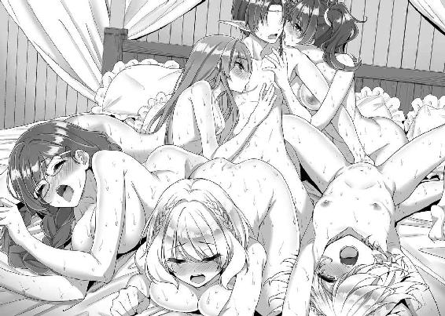
俺は悠然とうなずき、ベッドに仰臥した。さっきまでのバック五連発から一転、今度は彼女たちによる騎乗位ご奉仕エッチのターンだ。
まず一番手はマリーだった。
寝そべった俺の腰に嬉しそうな顔で跨ると、屹立したモノを濡れた秘壺で飲みこんでいく。根元まで挿入したところで、飢えたように腰を動かし始めた。
「んんっ、はうんっ、これイイッ！ 気持ちいいぃぃぃっ！」
豊かな乳房をバウンドさせながら、俺の腰の上で艶めかしく下腹部をローリングさせる。
続いてクローディアがマリーと交代で俺に跨ると、こちらもヌルヌルの秘孔に張り詰めた肉棒を全部飲みこんでくれた。
「うああっ、あはぁぁっ、すごい、私の奥まで......あうんっ、もっときてぇぇっ！」
そのまま引き締まった裸身を揺らす、躍動的な腰遣いが始まった。蕩けた顔で俺との騎乗位に浸っているイングリット。
「リアンさん、リアンさんんっ！ この体位、好き......私、串刺しにされてますぅぅっ！」
さらに、メンバー中で随一の爆乳を誇るパウラさんが、いやらしいおっぱいをブルブルと震わせ、ダイナミックな腰遣いを披露する。
すっかり成熟した膣孔は熱く柔らかく、それでいて締まりも抜群だ。
「はぁぁっ、ひあ、ぉぉぉんっ！ おふ、くうぅぅっ！ んんっ、リアン、もっと突いてぇっ！」
イングリットは普段のクールな態度が噓みたいに、どこか動物じみた絶叫を上げた。しなやかな裸体が高まる欲情を示すように紅潮している。
小柄な彼女らしいキツキツの秘孔も締めつけ抜群で気持ちよかった。
「あふ、ふあ、ぉぉ、あんっ！ あひぃっ、またイクッ！ ミーナ、イッちゃいますぅぅっ！」
最後に跨ってきたミーナは、さっきの絶頂から間がないというのに、早くも次のエクスタシーに達しそうだ。
彼女たちを一人一人見回し、愛おしい想いがあらためて込み上げてきた。
全員、大切な俺の女たち。
俺の、恋人たちだ。
この世界に生まれ変わって手に入れた絆──。
俺だけのハーレムをこれからも守っていきたいし、慈しんでいきたい。
そんな感慨に耽りながら、俺はその後もミーナたち全員と明け方近くまで交わった。
いったい彼女たちの口や膣に何発出したのか、美しい裸身に何発ぶっかけたのか、もはや数えきれない。
室内には精液と愛液のブレンドされた濃密な性臭が妖しく漂っていたが、そのむせ返るほどの生臭さが、この上なく甘美に感じられた。
翌朝、窓から差し込む陽光で俺は目を覚ました。
室内には、まだ青臭い匂いが濃厚に漂っている。
俺が何度となく放出した精液や、彼女たちがとめどなく流した愛液、唾液や汗などが入り混じった性臭だ。
妖しくも清々しいハーレムエッチの余韻を感じさせる香りを吸いこみながら、俺は最低限の衣服を身に着けた。
寝室からバルコニーに出る。
「ふうっ」
柔らかな朝日や爽やかな風が気持ちよかった。
青々とした空を、遠くに広がる山脈を、そして眼下に広がる街並みを見下ろし、思う。
ここが俺の生きていく世界。
大切に想う人たちとともに、生きていく世界だ。
「リアン様」
「こんなところにいたんだ、リアン」
「昨日は......激しかった」
振り返ると、ミーナ、マリー、イングリットが俺を見つめていた。
すでに三人ともいつもの服装だ。
ベッドで見せた情愛あふれる乙女ではなく、凛とした女冒険者の姿。
「ギルドに行くか」
俺は彼女たちに──愛しい恋人たちに微笑んだ。
さあ、出発だ。
今日も、俺たちの冒険者生活が始まる──。
（了）
あとがき
このたびはノクターンノベルズに掲載している「エルフの魔法剣士に転生した俺の無双ハーレムルート」の二巻がヴァリアントノベルズ様にて書籍化の運びとなりました。こうして続刊を出せたのも読者の方々の応援のおかげです。本当にありがとうございます。
今回は最終巻となり、ノクターンノベルズ版とは違う結末を迎えることになります。一巻以上にヒートアップする強敵たちとのバトルや、濃度を増したエロシーンが登場しますので、お楽しみいただけましたら幸いです。
また、一巻でエッチシーンのなかったヒロインも今回は濡れ場が用意されています。エロもバトルも美麗なイラストをぜひご堪能ください。
なお、ノクターンノベルズでは二巻発売記念の番外編を掲載中です。こちらはノクターン版の結末に続くお話になります。未読の方はこれを機にノクターン版の結末や番外編をお読みいただけるとまた違った楽しみがあるかもしれません。
では紙面も尽きてきたので、謝辞に移ります。
一巻に引き続き様々なアドバイスをくださった担当編集のＯ様、一巻と同じく可愛らしく素敵なイラストの数々を描いてくださった一ノ瀬ランド様、さらに本書が出版されるまでに携わってくださった、すべての方々に感謝を捧げます。
もちろん本書をお読みいただいた、すべての方々にも......ありがとうございました。
本作はこれで完結ですが、また違うお話でお会いできましたら幸いです。
二〇一八年三月中旬 天草白
著作
天草白
あまくさ しろ
ノクターンノベルズ様に掲載している「エルフの魔法剣士～」の書籍版を１巻に引き続きお届けできることになりました。これが最終巻となります。ウェブ版とは異なる終盤の展開を是非お楽しみくださいませ～！
イラスト
一ノ瀬ランド
いちのせ らんど
二人組のエロ漫画家。サークル「一ノ瀬」で活動中。商業作品の掲載誌は「快楽天ビースト」など。
エルフの魔法剣士に転生した俺の無双ハーレムルート ２［電子書籍版］
発行日 ２０１８年４月１日 発行
著者 天草白
イラスト 一ノ瀬ランド
装丁 5GAS DESIGN STUDIO
発行者 後藤明信
発行所 株式会社竹書房
〒１０２－００７２
東京都千代田区飯田橋２－７－３
ＴＥＬ ０３－３２６４－１５７６
ＵＲＬ http://www.takeshobo.co.jp
データ加工 株式会社暁印刷
 Shiro Amakusa 2018
Shiro Amakusa 2018
本書の一部あるいは全部を著作権者および株式会社竹書房に無断で複写・複製すること、および放送・上演・公衆送信（ホームページ上への掲載を含む）などは、法律で認められた場合を除き著作権の侵害となります。